Overview
This book collects five related, but independent, sets of documentation:
- The Apalache User Manual
- Apalache Tutorials
- Apalache HOWTOs
- A TLA+ Language Reference Manual
- Guidelines for Idiomatic TLA+
Tutorial on the Snowcat❄🐱 Type Checker
In this tutorial, we introduce the Snowcat ❄ 🐱 type checker We give concrete steps on running the type checker and annotating a specification with types.
Related documents
- ADR002 that introduces Type System 1, which is used by Snowcat.
- A more technical HOWTO on writing type annotations.
- ADR004 that introduces Java-like annotations in TLA+ comments.
Setup
We assume that you have Apalache installed. If not, check the manual page on Apalache installation. The minimal required version is 0.15.0.
Running example: Two-phase commit
As a running example, we are using the well-understood specification of Two-phase commit by Leslie Lamport (written by Stephan Merz). We recommend to reproduce the steps in this tutorial. So, go ahead and download two specification files: TwoPhase.tla and TCommit.tla.
Step 1: Running Snowcat
Before we start writing any type annotations, let's run the type checker and see, whether it complains:
$ apalache typecheck TwoPhase.tla
The tool output is a bit verbose. Below, you can see the important lines of the output:
...
PASS #1: TypeCheckerSnowcat
> Running Snowcat .::.
[TwoPhase.tla:51:30-51:31]: Undefined name RM. Introduce a type annotation.
> Snowcat asks you to fix the types. Meow.
...
Step 2: Annotating RM
In Step 1, Snowcat complained about the name RM. The reason
for that is very simple: Snowcat does type analysis for each declaration in
isolation. Hence, it failed, as soon as it met a reference to the constant
RM in the definition of Message:
CONSTANT RM \* The set of resource managers
...
Message ==
...
[type : {"Prepared"}, rm : RM] \union [type : {"Commit", "Abort"}]
Indeed, we have not introduced a type annotation for the constant RM, so the
type checker cannot use any meaningful type in the context of the above
expression.
From the comment next to the declaration of RM, we see that RM is supposed
to be a set of resource managers. We have plenty of choices here of what a
resource manager could be. Let's keep it simple and say that a resource manager
is simply a name. Hence, we say that RM is a set of strings. Let's add a
type annotation:
CONSTANT
\* @type: Set(Str);
RM \* The set of resource managers
Note that we had to put the annotation between the keyword CONSTANT and the
identifier RM. We used the one-line TLA+ comment: \* @type: ...;.
Alternatively, we could use the multi-line comment: (* @type: Set(Str); *).
Importantly, the type annotation should end with a semi-colon: ;.
Warning. If you want to write a type annotation on multiple lines, write it
in a multi-line comment (* ... *) instead of starting multiple lines with a
single-line comment \* .... See issue
718.
Step 3: Running Snowcat again
Having introduced the type annotation for RM, let's run the type checker again:
$ apalache typecheck TwoPhase.tla
Snowcat does not complain about RM anymore. Now we get another message:
[TwoPhase.tla:68:6-68:12]: Undefined name rmState. Introduce a type annotation.
Step 4: Annotating rmState
Similar to Step 2, we are missing a type annotation. This time the type checker
complains about the variable rmState:
VARIABLES
rmState, \* $rmState[rm]$ is the state of resource manager RM.
We can get a hint about the type of rmState from the type invariant
TPTypeOK. It should be a function that, given a resource manager, produces
one of the following strings: "working", "prepared", "committed",
"aborted". So we need the function type: Str -> Str. Add the following
type annotation:
VARIABLES
\* @type: Str -> Str;
rmState, \* $rmState[rm]$ is the state of resource manager RM.
Step 5: Getting one more type error by Snowcat
Guess what? Run the type checker again:
$ apalache typecheck TwoPhase.tla
Snowcat does not complain about rmState anymore. But we are not done yet:
[TwoPhase.tla:70:6-70:12]: Undefined name tmState. Introduce a type annotation.
Step 6: Annotating tmState
This time we need a type annotation for the variable tmState. By inspecting
TPTypeOK, we see that tmState is just a string. Add the following type
annotation:
VARIABLES
(* ... *)
\* @type: Str;
tmState, \* The state of the transaction manager.
Step 7: Running Snowcat to see another error
Run the type checker again:
$ apalache typecheck TwoPhase.tla
You must have guessed that the type checker complains about the variable
tmPrepared. Indeed, it just needs annotations for all CONSTANTS and
VARIABLES:
[TwoPhase.tla:72:6-72:15]: Undefined name tmPrepared. Introduce a type annotation.
Step 8: Annotating tmPrepared
At this step, we have to annotate tmPrepared. Let's have a look at the comment
next to the declaration of tmPrepared:
VARIABLES
...
tmPrepared, \* The set of RMs from which the TM has received $"Prepared"$
\* messages.
Hence, tmPrepared is a set of resource managers. This is what we write as a
type annotation:
VARIABLES
(* ... *)
\* @type: Set(Str);
tmPrepared, \* The set of RMs from which the TM has received $"Prepared"$
\* messages.
Step 9: Running Snowcat again
You know that we have to run the type checker again:
$ apalache typecheck TwoPhase.tla
It is no surprise that it complains about the variable msgs now:
[TwoPhase.tla:74:6-74:9]: Undefined name msgs. Introduce a type annotation.
Step 10: Annotating msgs
In the previous steps, it was quite easy to annotate variables. We would just
look at how the variable is used, or read the comments, and add a type annotation.
Figuring out the type of msgs is a bit harder.
Let's look at the definitions of Messages and TPTypeOK:
Message ==
...
[type : {"Prepared"}, rm : RM] \union [type : {"Commit", "Abort"}]
TPTypeOK ==
...
/\ msgs \subseteq Message
Now you should be able to see that msgs is a set that may contain three
kinds of records:
- The record
[type |-> "Commit"], - The record
[type |-> "Abort"], - A record
[type |-> "Prepared", rm |-> r], for somer \in RM.
This looks like an issue for the type checker, as it always requires
the set elements to have the same type. However, the type checker
did not complain about the expressions in Message and TPTypeOK. Why?
Actually, the type checker allows records to be generalized to a type that
contains additional fields. In the above definition of Messages, the set of
records [type: {"Prepared"}, rm: RM] has the type Set([type: Str, rm: Str]). (Note that the record has the field called "type", which has nothing
to do with our types.) Likewise, the set of records [type: {"Commit", "Abort"}] has the type Set([type: Str]). Both of these types can be unified
to the common type:
Set([type: Str, rm: Str])
The above type is actually what we need for the variable msgs. Let's annotate
the variable with this type:
VARIABLES
(* ... *)
\* @type: Set([type: Str, rm: Str]);
msgs
Step 11: Running Snowcat and seeing no errors
Let's see whether Snowcat is happy about our types now:
$ apalache typecheck TwoPhase.tla
The type checker is happy. It has computed the types of all expressions:
> Running Snowcat .::.
> Your types are great!
> All expressions are typed
Discussion
To see the complete code, check TwoPhase.tla. Note that we
have not touched the file TCommit.tla at all! The type checker has figured
out all the types in it by itself. We have added five type annotations for 248
lines of code. Not bad.
It was quite easy to figure out the types of constants and variables in our example. As a rule, you always have to annotate constants and variables with types. Hence, we did not have to run the type checker five times to see the error messages.
Sometimes, the type checker cannot find a unique type of an expression. This usually happens when you declare an operator of a parameter that can be: a function, a tuple, a record, or a sequence (or a subset of these four types that has at least two elements). For instance, here is a definition from GameOfLifeTyped.tla:
Pos ==
{<<x, y>>: x, y \in 1..N}
Although it is absolutely clear that x and y have the type Int,
the type of <<x, y>> is ambiguous. This expression can either be
a tuple <<Int, Int>>, or a sequence Seq(Int). In this case, we have to
help the type checker by annotating the operator definition:
\* @type: () => Set(<<Int, Int>>);
Pos ==
{<<x, y>>: x, y \in 1..N}
Since it is common to have operators that take no arguments, Snowcat supports the following syntax sugar:
\* @type: Set(<<Int, Int>>);
Pos ==
{<<x, y>>: x, y \in 1..N}
Further reading
For more advanced type annotations, check the following examples:
We have not discussed type aliases, which are a more advanced feature of the type checker. To learn about type aliases, see HOWTO on writing type annotations.
If you are experiencing a problem with Snowcat, feel free to open an issue or drop us a message on Zulip chat.
Apalache Manual
Authors: Igor Konnov, Jure Kukovec, Andrey Kuprianov, Shon Feder
Contact: {igor,jure,andrey,shon} at informal.systems
Apalache is a symbolic model checker for TLA+. (Still looking for a better tool name.) Our model checker is a recent alternative to TLC. Whereas TLC enumerates the states produced by the behaviors of a TLA+ specification, Apalache translates the verification problem to a set of logical constraints. These constraints are solved by an SMT solver, for instance, by Microsoft's Z3. That is, Apalache operates on formulas (i.e., symbolicly), not by enumerating states one by one (i.e., state enumeration).
Apalache is working under the following assumptions:
- As in TLC, all specification parameters are fixed and finite, i.e., the system state is initialized with integers, finite sets, and functions of finite domains and co-domains.
- As in TLC, all data structures evaluated during an execution are finite, e.g., a system specification cannot operate on the set of all integers.
- Only finite executions of bounded length are analyzed.
Getting Started
This section covers all the basic information you need to get started with the Apalache model checker.
If you just need to get the model checker up and running, you can jump to
Shall I use Apalache or TLC?
We recommend starting with TLC. It is mature, well-documented, and well-integrated into TLA+ Toolbox. Once you have debugged your TLA+ specification, and TLC is still producing too many reachable states, switch to Apalache. We are using this approach at Informal Systems.
System requirements
Every commit to master and unstable is built with GitHub actions on MacOS (JDK 1.8.0) and Linux (OpenJDK8). If you would like to run Apalache in Windows, use a docker image. Check the Docker manual and the section on Using a docker image for details.
As Apalache is using Microsoft Z3 as a backend SMT solver, the required memory largely depends on Z3. We recommend to allocate at least 4GB of memory for the tool.
Installation
There are three ways to run Apalache:
- JVM: download a prebuilt package and run it in the JVM.
- Docker: download and run a Docker image.
- Source: build Apalache from sources and run the compiled package.
If you just want to try the tool, we recommend downloading the release or pulling the docker image. If you would like to run the tool on a daily basis or contribute to the project, we recommend building the project from the source.
Running in Java Virtual Machine
You have to download and install a Java Virtual Machine first. For instance, AdoptOpenJDK should work (we tried Apalache with OpenJDK 11 and OpenJDK 15).
Once you have installed Java, download the latest release and unpack into a directory of your choice. Depending on your OS, you have two options.
Option 1: Linux, MacOS. You can run the script ./bin/apalache-mc. It is
that simple.
Option 2: Windows. You have to run Java directly:
-
Check the application name in the directory
mod-distribution\target. It should be calledapalache-pkg-X.Y.Z-RELEASE-full.jar, whereX.Y.Zis the release number, for instance, 0.8.0. -
Run Java as follows:
java.exe -jar mod-distribution\target\apalache-pkg-X.Y.Z-RELEASE-full.jar <args>
The arguments <args> are explained in Running the Tool.
If you would like to contribute a command-line script for running Apalache in Windows, please open a pull request.
Using a docker image
We publish Docker images for every release 😎
Docker lets you to run Apalache in an isolated container. All dependencies are already installed in docker. However, you have to install docker.
To get the latest Apalache image, issue the command:
docker pull ghcr.io/informalsystems/apalache
Running the docker image
To run an Apalache image, issue the command:
$ docker run --rm -v <your-spec-directory>:/var/apalache informalsystems/apalache <args>
The following docker parameters are used:
-
--rmto remove the container on exit -
-v <your-spec-directory>:/var/apalachebind-mounts<your-spec-directory>into/var/apalachein the container. This is necessary for Apalache to access your specification and the modules it extends. From the user perspective, it works as if Apalache was executing in<your-spec-directory>. In particular the tool logs are written in that directory.When using SELinux, you might have to use the modified form of
-voption:-v <your-spec-directory>:/var/apalache:z -
informalsystems/apalacheis the APALACHE docker image name. By default, thelateststable version is used; you can also refer to a specific tool version, e.g.,informalsystems/apalache:0.6.0orinformalsystems/apalache:unstable -
<args>are the tool arguments as described in Running the Tool.
We provide a convenience wrapper for this docker command in
script/run-docker.sh. To run the latest image using the script, execute
$ $APALACHE_HOME/script/run-docker.sh <args>
To specify a different image, set APALACHE_TAG like so:
$ APALACHE_TAG=foo $APALACHE_HOME/script/run-docker.sh <args>
Setting an alias
If you are running Apalache on Linux 🐧 or MacOS 🍏, you can define this handy alias in your rc file, which runs Apalache in docker while sharing the working directory:
###### using the latest stable
$ alias apalache='docker run --rm -v $(pwd):/var/apalache informalsystems/apalache'
###### using the latest unstable
$ alias apalache='docker run --rm -v $(pwd):/var/apalache informalsystems/apalache:unstable'
Using the unstable version of Apalache
The development of Apalache proceeds at a high pace, and we introduce a
substantial number of improvements in the unstable branch before the next stable
release. Please refer to the change
log and
manual
on the unstable branch for the description of the newest features. We
recommend using the unstable version if you want to try all the exciting new
features of Apalache. But be warned: It is called "unstable" for a reason. To
use unstable, just type informalsystems/apalache:unstable instead of informalsystems/apalache
everywhere.
Do not forget to pull the docker image from time to time:
docker pull ghcr.io/informalsystems/apalache:unstable
Run it with the following command:
$ docker run --rm -v <your-spec-directory>:/var/apalache informalsystems/apalache:unstable <args>
To create an alias pointing to the unstable version:
$ alias apalache='docker run --rm -v $(pwd):/var/apalache informalsystems/apalache:unstable'
Building an image
For an end user there is no need to build an Apalache image. If you like to
produce a modified docker image, take into account that it will take about 30
minutes for the image to get built, due to compilation times of Microsoft Z3. To
build a docker image of Apalache, issue the following command in
$APALACHE_HOME:
$ docker image build -t apalache:0.7.0 .
Building from source
- Install
git. - Install OpenJDK8 or Zulu JDK8.
- Apalache currently requires Scala 12.0 so you must install version 8 of Java, otherwise Scala will not compile! See the compatibility table.
- Install Apache Maven.
- On Debian Linux or Ubuntu:
sudo apt-get install maven. - On Arch:
sudo pacman -Syu maven
- On Debian Linux or Ubuntu:
- Clone the git repository:
git clone https://github.com/informalsystems/apalache.git. - Change into the project directory:
cd apalache. - Run
make.- For a slightly faster build, you can run
make apalache-jar
- For a slightly faster build, you can run
- Optionally install direnv and run
direnv allow - Confirm you can run the executable. It should print the inline CLI help message.
- If you used
direnv, thenapalache-mcwill be in your path. - Otherwise, run
./bin/apalache-mc.
- If you used
Running the Tool
Opt-in statistics programme: if you opt-in for statistics collection (off by default), then every run of Apalache
will submit anonymized statistics to
tlapl.us. See the details in TLA+ Anonymized Execution Statistics.
Model checker command-line parameters
The model checker can be run as follows:
$ apalache check [--config=filename] [--init=Init] [--cinit=ConstInit] \
[--next=Next] [--inv=Inv] [--length=10] [--algo=(incremental|offline)] \
[--discard-disabled] [--no-deadlock] [--tuning=filename] [--tune-here=options] \
<myspec>.tla
The arguments are as follows:
-
General parameters:
--configspecifies the TLC configuration file, the default name is<myspec>.cfg--initspecifies the initialization predicate,Initby default--nextspecifies the transition predicate,Nextby default--cinitspecifies the constant initialization predicate, optional--invspecifies the invariant to check, optional--lengthspecifies the maximal number ofNextsteps, 10 by default
-
Advanced parameters:
--algolets you to choose the search algorithm:incrementalis using the incremental SMT solver,offlineis using the non-incremental (offline) SMT solver--discard-disableddoes a pre-check on transitions and discard the disabled ones at every step. If you know that many transitions are always enabled, set it to false. Sometimes, this pre-check may be slower than checking the invariant. Default: true.--max-error <n>instructs the search to stop afternerrors, see Enumeration of counterexamples. Default: 1.--view <name>sets the state view to<name>, see Enumeration of counterexamples.--no-deadlockdisables deadlock-checking, when--discard-disabled=falseis on. When--discard-disabled=true, deadlocks are found in any case.--tuningspecifies the properties file that stores the options for fine tuning--tuning-options=key1=val1:key2=val2:...pass the tuning options right in the command line as a single string. The options that are passed with the option--tuning-optionshave priority over the options that are passed with the option--tuning.
If an initialization predicate, transition predicate, or invariant is specified both in the configuration file, and on the command line, the command line parameters take precedence over those in the configuration file.
Supplying JVM arguments
You can supply JVM argument to be used when running Apalache by setting the
environment variable JVM_ARGS. For example, to change the JVM heap size from
the default (4096m) to 1G invoke Apalache as follows:
JVM_ARGS="-Xmx1G" apalache-mc <args>
If you are running Apalache via docker directly (instead of using the script in
$APALACHE_HOME/script/run-docker.sh), you'll also need to expose the
environment variable to the docker container:
$ JVM_ARGS="-Xmx1G" docker run -e JVM_ARGS --rm -v <your-spec-directory>:/var/apalache informalsystems/apalache <args>
To track memory usage with: jcmd <pid> VM.native_memory summary, you can set
JVM_ARGS="-XX:NativeMemoryTracking=summary"
Bounded model checking
By default, Apalache performs bounded model checking, that is, it encodes a
symbolic execution of length k and a violation of a state invariant in SMT:
/\ Init[v_0/v]
/\ Next[v_0/v, v_1/v'] /\ Next[v_1/v, v_2/v'] /\ ... /\ Next[v_{k-1}/v, v_k/v']
/\ ~Inv[v_0/v] \/ ~Inv[v_1/v] \/ ... \/ ~Inv[v_k/v]
Here an expression Inv[v_i/v] means that the state variables v are replaced with their copies v_i for the
state i. Likewise, Next[v_i/v,v_{i+1}/v']
means that the state variables v are replaced with their copies v_i for the state i, whereas the state
variables v' are replaced with their copies
v_{i+1} for the state i+1.
Bounded model checking is an incomplete technique
If Apalache finds a bug in this symbolic execution (by querying z3), then it reports a counterexample. Otherwise, it reports that no bug was found up to the given length. If a bug needs a long execution to get revealed, bounded model checking may miss it!
Checking an inductive invariant
To check executions of arbitrary lengths, one usually finds a formula that satisfies the two following properties:
/\ Init => TypeOK /\ IndInv
/\ TypeOK /\ IndInv /\ Next => TypeOK' /\ IndInv'
In normal words: (1) The initial states satisfy the constraint TypeOK /\ IndInv, and (2) whenever the specification makes a step when starting in a state that satisfies TypeOK /\ IndInv, it
ends up in a state that again satisfies TypeOK /\ IndInv.
Note that we usually check IndInv in conjunction with TypeOK, as we have to constrain the variable values. In
the y2k example, our inductive invariant is actually constraing the variables. In fact, such an inductive invariant is
usually called TypeOK.
To check an inductive invariant IndInv in Apalache, you run two commands that check the above two formulas:
-
IndInit: Check that the initial states satisfy
IndInv:$ apalache check --init=Init --inv=IndInv --length=0 <myspec>.tla -
IndNext: Check that
Nextdoes not drive us outside ofIndInv:$ apalache check --init=IndInv --inv=IndInv --length=1 <myspec>.tla
Usually, you look for an inductive invariant to check a safety predicate. For
example, if you have found an inductive invariant IndInv and want to check a
safety predicate Safety, you have to run Apalache once again:
-
IndProp: Check that all states captured with
IndInvsatisfy the predicateSafety:$ apalache check --init=IndInv --inv=Safety --length=0 <myspec>.tla
It may happen that your inductive invariant IndInv is too weak and it
violates Safety. In this case, you would have to add additional constraints to IndInv.
Then you would have to check the queries IndInit, IndNext, and IndProp again.
Examples
Checking safety up to 20 steps
$ cd test/tla
$ apalache check --length=20 --inv=Safety y2k_override.tla
This command checks, whether Safety can be violated in 20 specification steps. If Safety is not violated, your spec
might still have a bug that requires a computation longer than 20 steps to manifest.
Checking an inductive invariant:
$ cd test/tla
$ apalache check --length=0 --init=Init --inv=Inv y2k_override.tla
$ apalache check --length=1 --init=Inv --inv=Inv y2k_override.tla
The first call to apalache checks, whether the initial states satisfy the invariant. The second call to apalache checks, whether a single specification step satisfies the invariant, when starting in a state that satisfies the invariant. ( That is why these invariants are called inductive.)
Using a constant initializer:
$ cd test/tla
apalache check --cinit=ConstInit --length=20 --inv=Safety y2k_cinit.tla
This command checks, whether Safety can be violated in 20 specification steps. The constants are initialized with the
predicate
ConstInit, defined in y2k_cinit.tla as:
ConstInit == BIRTH_YEAR \in 0..99 /\ LICENSE_AGE \in 10..99
In this case, Apalache finds a safety violation, e.g., for
BIRTH_YEAR=89 and LICENSE_AGE=10. A complete counterexample is printed in counterexample.tla.
The final lines in the file clearly indicate the state that violates the invariant:
State14 ==
/\ BIRTH_YEAR = 89
/\ LICENSE_AGE = 10
/\ hasLicense = TRUE
/\ year = 0
(* The following formula holds true in the last state and violates the invariant *)
InvariantViolation == hasLicense /\ year - BIRTH_YEAR < LICENSE_AGE
Module lookup
Apalache uses the SANY parser, which is the standard parser of TLC
and TLA+ Toolbox. By default, SANY is looking for the modules in the current working directory and in the Java package
tla2sany.StandardModules, which is usually provided by the tla2tools.jar that is included in the Java classpath.
In addition to the modules in the current working directory, Appalache provides
- a small standard library (located in
$APALACHE_HOME/src/tla), and - support for additional source directories specified in the environment variable
TLA_PATH.TLA_PATHshould be a list of paths to directories separated by:.
(Directories in the TLA_PATH are provided to SANY via the TLA-Library Java system variable.)
So the module lookup order in Apalache is as follows:
- The current working directory.
- The directory
$APALACHE_HOME/src/tla. - The directories specified in the environment variable
TLA_PATH. - The Java package
tla2sany.StandardModules.
Note: To let TLA+ Toolbox and TLC know about the Apalache modules, include
$APALACHE_HOME/src/tla in the lookup directories, as explained by Markus Kuppe for
the TLA+ Community Modules.
Detailed output
The tool will display only important messages on stdout, but a detailed log can be found in detailed.log.
Additionally, if enabled in apalache.cfg (see configuration instructions) each pass of the model checker produces an intermediate TLA+ file in the run-specific
directory:
- File
out-parser.tlais produced as a result of parsing and importing into the intermediate representation, Apalache TLA IR. - File
out-config.tlais produced as a result of substituting CONSTANTS, as described in Setting up specification parameters. - File
out-inline.tlais produced as a result of inlining operator definitions andLET-INdefinitions. - File
out-priming.tlais produced as a result of replacing constants and variables inConstInitandInitwith their primed versions. - File
out-vcgen.tlais produced as a result of extracting verification conditions, e.g., invariants to check. - File
out-prepro.tlais produced as a result of running all preprocessing steps. - File
out-transition.tlais produced as a result of finding assignments and symbolic transitions. - File
out-opt.tlais produced as a result of expression optimizations. - File
out-analysis.tlais produced as a result of analysis, e.g., marking Skolemizable expressions and expressions to be expanded.
Parsing and pretty-printing
If you'd like to check that your TLA+ specification is syntactically correct, without running the model checker, you can run the following command:
$ apalache parse <myspec>.tla
In this case, Apalache performs the following steps:
-
It parses the specification with SANY.
-
It translates SANY semantic nodes into Apalache IR .
-
It pretty-prints the IR into
out-parser.tla, see Detailed output.
Apalache global configuration file
Apalache allows you to specify certain parameters, governing outputs produced by it, as described in ADR-009.
You can create a global configuration file named apalache-global-config.yml in $HOME/.tlaplus/ and populate it with values for the following flags, in YAML format:
out-dir(String): The value ofout-dirdefines a path to the directory, in which all Apalache runs write their outputs. Each run will produce a unique subdirectory insideout-dirusing the following convention:<SPECNAME>_yyyy-MM-dd_HH-mm-ss_<UNIQUEID>. The use of~in the path specification is permitted. The directory need not already exist, however, its parent directory must. Example value:'~/apalache-out'. If this value is not defined inapalache-global-config.yml, Apalache will, for each individual run, define it to be equal toCWD/_apalache-out/, whereCWDis the current working directory.profiling(Bool): This flag governs the creation ofprofile-rules.txtused in profiling. The file is only created ifprofilingis set toTrue. SettingprofilingtoFalseis incompatible with the--smtprofflag. The default isFalse.write-intermediate(Bool): This Boolean flag governs the creation of intermediate outputs. If set toTrue, apalache will produce anintermediatesubdirectory in the run directory and output the state of the module after each pass. The default isFalse.
Example of a valid apalache-global-config.yml:
out-dir: '~/apalache-out'
profiling: True
write-intermediate: True
Invariants: state, action, and trace
Until recently, Apalache only supported checking of state invariants. A state invariant is a predicate over state variables and constants. State invariants are, by far, the most common ones. Recently, we have added support for action invariants and trace invariants. Action properties were highlighted by Hillel Wayne; they can be checked with action invariants. Trace invariants let us reason about finite executions.
State invariants
You have probably seen state invariants before. Consider the following specification.
---------------------------- MODULE Invariants --------------------------------
EXTENDS Integers, Sequences, FiniteSets
VARIABLES
\* @typeAlias: S = Set(Int);
\* @typeAlias: STATE = [ In: S, Done: S, Out: S ];
\* @type: S;
In,
\* @type: S;
Done,
\* @type: S;
Out
\* @type: <<S, S, S>>;
vars == <<In, Done, Out>>
Init ==
/\ \E S \in SUBSET (1..5):
/\ Cardinality(S) > 2
/\ In = S
/\ Done = {}
/\ Out = {}
Next ==
\/ \E x \in In:
/\ In' = In \ { x }
/\ Done' = Done \union { x }
/\ Out' = Out \union { 2 * x }
\/ In = {} /\ UNCHANGED vars
\* state invariants that reason about individual states
StateInv ==
Done \intersect In = {}
BuggyStateInv ==
Done \subseteq In
We let you guess what this specification is doing. As for its properties, it contains two state invariants:
- Predicate
StateInvthat statesDone \intersect In = {}, and - Predicate
BuggyStateInvthat statesDone \subseteq In.
We call these predicates state invariants, as we expect them to hold in every state of an execution. To check, whether these invariants hold true, we run Apalache as follows:
$ apalache check --inv=StateInv Invariants.tla
...
Checker reports no error up to computation length 10
...
$ apalache check --inv=BuggyStateInv Invariants.tla
...
State 1: state invariant 0 violated. Check the counterexample in: counterexample.tla, MC.out, counterexample.json
...
The standard footprint: By default, Apalache checks executions of length up to 10 steps.
Action invariants
Let's have a look at two other predicates in Invariants.tla:
\* action invariants that reason about transitions (consecutive pairs of states)
ActionInv ==
\/ In = {}
\/ \E x \in Done':
Done' = Done \union { x }
BuggyActionInv ==
Cardinality(In') = Cardinality(In) + 1
Can you see a difference between ActionInv & BuggyActionInv and StateInv
& BuggyStateInv?
You have probably noticed that ActionInv as well as BuggyActionInv use
unprimed variables and primed variables. So they let us reason about two
consecutive states of an execution. They are handy for checking specification
progress. Similar to state invariants, we can check, whether action invariants
hold true by running Apalache as follows:
$ apalache check --inv=ActionInv Invariants.tla
...
Checker reports no error up to computation length 10
...
$ apalache check --inv=BuggyActionInv Invariants.tla
...
State 0: action invariant 0 violated. Check the counterexample in: counterexample.tla, MC.out, counterexample.json
...
There is no typo in the CLI arguments above: You pass action invariants the same way as you pass state invariants. Preprocessing in Apalache is clever enough to figure out, what kind of invariant it is dealing with.
Trace invariants
Let's have a look at the following two predicates in Invariants.tla:
\* trace invariants that reason about executions
\* @type: Seq(STATE) => Bool;
TraceInv(hist) ==
\/ hist[Len(hist)].In /= {}
\* note that we are using the last state in the history and the first one
\/ { 2 * x: x \in hist[1].In } = hist[Len(hist)].Out
\* @type: Seq(STATE) => Bool;
BuggyTraceInv(hist) ==
\/ hist[Len(hist)].In /= {}
\* note that we are using the last state in the history and the first one
\/ { 3 * x: x \in hist[1].In } = hist[Len(hist)].Out
These predicates are quite different from state invariants and action
invariants. Both TraceInv and BuggyTraceInv accept the parameter hist,
which store the execution history as a sequence of records. Having the
execution history, you can check plenty of interesting properties. For
instance, you can check, whether the result of an execution somehow matches the
input values.
$ apalache check --inv=TraceInv Invariants.tla
...
Checker reports no error up to computation length 10
...
$ apalache check --inv=BuggyTraceInv Invariants.tla
...
State 3: trace invariant 0 violated. Check the counterexample in: counterexample.tla, MC.out, counterexample.json
...
Trace invariants are quite powerful. You can write down temporal properties as trace invariants. However, we recommend to use trace invariants for testing, as they are too powerful. For verification, you should use temporal properties.
Enumerating counterexamples
By default, Apalache stops whenever it finds a property violation. This is true for the commands that are explained in the Section on Running the Tool. Sometimes, we want to produce multiple counterexamples; for instance, to generate multiple tests.
Consider the following TLA+ specification:
---- MODULE View2 ----
EXTENDS Integers
VARIABLES
\* @type: Int;
x
Init ==
x = 0
A ==
x' = x + 1
B ==
x' = x - 1
C ==
x' = x
Next ==
A \/ B \/ C
Inv ==
x = 0
We can run Apalache to check the state invariant Inv:
$ apalache check --inv=Inv View2.tla
Apalache quickly finds a counterexample that looks like this:
...
(* Initial state *)
State0 == x = 0
(* Transition 0 to State1 *)
State1 == x = 1
...
Producing multiple counterexamples. If we want to see more examples of invariant violation, we can ask Apalache to produce up to 50 counterexamples:
$ apalache check --inv=Inv --max-error=50 View2.tla
...
Found 20 error(s)
...
Whenever the model checker finds an invariant violation, it reports a
counterexample to the current symbolic execution and proceeds with the next action.
For instance, if the symbolic execution Init \cdot A \cdot A has a concrete
execution that violates the invariant Inv, the model checker would print this
execution and proceed with the symbolic execution Init \cdot A \cdot B. That
is why the model checker stops after producing 20 counterexamples.
The option --max-error is similar to the option --continue in TLC, see TLC
options. However, the space of counterexamples in Apalache may be infinite,
e.g., when we have integer variables, so --max-error requires an upper bound
on the number of counterexamples.
Partitioning counterexamples with view abstraction.
Some of the produced counterexamples are not really interesting. For
instance, counterexample5.tla looks like follows:
(* Initial state *)
State0 == x = 0
(* Transition 1 to State1 *)
State1 == x = -1
(* Transition 1 to State2 *)
State2 == x = -2
(* Transition 0 to State3 *)
State3 == x = -1
Obviously, the invariant is violated in State1 already, so states State2
and State3 are not informative. We could write a trace
invariant to enforce invariant violation only in the
last state. Alternatively, the model checker could enforce the constraint that
the invariant holds true in the intermediate states. As invariants usually
produce complex constraints and slow down the model checker, we leave the
choice to the user.
Usually, the specification author has a good idea of how to partition states
into interesting equivalence classes. We let you specify this partitiong by declaring
a view abstraction, similar to the VIEW configuration option in TLC.
Basically, two states are considered to be similar, if they have the same view.
In our example, we compute the state view with the operator View1:
\* @type: <<Bool, Bool>>;
View1 ==
<<x < 0, x > 0>>
Hence, the states with x = 1 and x = 25 are similar, because their view has the
same value <<FALSE, TRUE>>. We can also define the view of an execution, simply
as a sequence of views of the execution states.
Now we can ask Apalache to produce up to 50 counterexamples again. This time we tell it to avoid the executions that start with the view of an execution that produced an error earlier:
$ apalache check --inv=Inv --max-error=50 --view=View1 View2.tla
...
Found 20 error(s)
...
Now counterexample5.tla is more informative:
(* Initial state *)
State0 == x = 0
(* Transition 2 to State1 *)
State1 == x = 0
(* Transition 2 to State2 *)
State2 == x = 0
(* Transition 0 to State3 *)
State3 == x = 1
Moreover, counterexample6.tla is intuitively a mirror version of counterexample5.tla:
(* Initial state *)
State0 == x = 0
(* Transition 2 to State1 *)
State1 == x = 0
(* Transition 2 to State2 *)
State2 == x = 0
(* Transition 0 to State3 *)
State3 == x = -1
By the choice of the view, we have partitioned the states into three
equivalence classes: x < 0, x = 0, and x > 0. It is often useful to write
a view as a tuple of predicates. However, you can write arbitrary TLA+ expressions.
A view is just a mapping from state variables to the set of values that can be
computed by the view expressions.
We are using this technique in model-based testing. If you have found another interesting application of this technique, please let us know!
TLA+ Anonymized Execution Statistics
Apalache participates in the optional anonymized statistics programme along with TLA+ Toolbox, TLC (which is part of the Toolbox), and Visual Studio Code Plugin for TLA+.
The statistics collection is never enabled by default. You have to opt-in
for the programme either in TLA+ Toolbox, or in Apalache. When statistics
collection is enabled by the user, it is submitted to tlapl.us via the
util.ExecutionStatisticsCollector, which is part of tla2tools.jar. Apalache
accesses this class in at.forsyte.apalache.tla.Tool.
As explained in anonymized statistics programme, if you never create the file
$HOME/.tlaplus/esc.txt, then the statistics is not submitted to tlapl.us.
If you opt-in for the programme and later remove the file, then the statistics
will not be submitted too.
Why do we ask you to help us
There are several reasons:
-
Although our project is open source, developing Apalache is our main job. We are grateful to Informal Systems for supporting us and to TU Wien, Vienna Science and Technology Fund, and Inria Nancy/LORIA, who supported us in the past. It is easier to convince our decision makers to continue the development, if we have clear feedback on how many people use and need Apalache.
-
We would like to know which features you are using most, so we can focus on them.
-
We would like to know which operating systems and Java versions need care and better be included in automated test suites.
How to opt-in and opt-out
To opt-in in the statistics collection, execute the following command:
./apalache-mc config --enable-stats=true
As a result of this command, a random identifier is written in
$HOME/.tlaplus/esc.txt. This identifier is used by the execution statistics
code.
To opt-out from the statistics collection, execute the following command:
./apalache-mc config --enable-stats=false
What exactly is submitted to tlapl.us
You can check the daily log at exec-stats.tlapl.us.
The following data is submitted for each run, if you have opted in:
- Total number of CPU cores and cores assigned (the latter is 1 for now, but will change soon)
- Java heap memory size (in Megabytes)
- Apalache version (semantic version + build)
- Command mode:
parse,check, ortypecheck - Name, version, and architecture of the OS
- Vendor, version, and architecture of JVM
- Timestamp + salt (a random number to make time less precise)
- An installation ID that is stored in
$HOME/.tlaplus/esc.txt
An example of a TLA+ specification
To illustrate the features of Apalache, we use the following TLA+ specification,
which can be found in test/tla/y2k.tla:
-------------------------------- MODULE y2k --------------------------------
(*
* A simple specification of a year counter that is subject to the Y2K problem.
* In this specification, a registration office keeps records of birthdays and
* issues driver's licenses. As usual, a person may get a license, if they
* reached a certain age, e.g., age of 18. The software engineers never thought
* of their program being used until the next century, so they stored the year
* of birth using only two digits (who would blame them, the magnetic tapes
* were expensive!). The new millenium came with new bugs.
*
* This is a made up example, not reflecting any real code.
* To learn more about Y2K, check: https://en.wikipedia.org/wiki/Year_2000_problem
*
* Igor Konnov, January 2020
*)
EXTENDS Integers
CONSTANT
\* @type: Int;
BIRTH_YEAR, \* the year to start with, between 0 and 99
\* @type: Int;
LICENSE_AGE \* the minimum age to obtain a license
ASSUME(BIRTH_YEAR \in 0..99)
ASSUME(LICENSE_AGE \in 1..99)
VARIABLE
\* @type: Int;
year,
\* @type: Bool;
hasLicense
Age == year - BIRTH_YEAR
Init ==
/\ year = BIRTH_YEAR
/\ hasLicense = FALSE
NewYear ==
/\ year' = (year + 1) % 100 \* the programmers decided to use two digits
/\ UNCHANGED hasLicense
IssueLicense ==
/\ Age >= LICENSE_AGE
/\ hasLicense' = TRUE
/\ UNCHANGED year
Next ==
\/ NewYear
\/ IssueLicense
\* The somewhat "obvious" invariant, which is violated
Safety ==
hasLicense => (Age >= LICENSE_AGE)
Setting up specification parameters
Similar to TLC, Apalache requires the specification parameters to be restricted to finite values. In contrast to TLC, there is a way to initialize parameters by writing a symbolic constraint, see Section 5.3.
Using INSTANCE
You can set the specification parameters, using the standard INSTANCE
expression of TLA+. For instance, below is the example
y2k_instance.tla,
which instantiates y2k.tla:
---------------------------- MODULE y2k_instance ----------------------------
(*
* Another way to instantiate constants for apalache is to
* use INSTANCE.
*)
VARIABLE
\* @type: Int;
year,
\* @type: Bool;
hasLicense
The downside of this approach is that you have to declare the variables of the extended specification. This is easy with only two variables, but can quickly become unwieldy.
Convention over configuration
Alternatively, you can extend the base module and use overrides:
---------------------------- MODULE y2k_override ----------------------------
(*
* One way to instantiate constants for apalache is to use the OVERRIDE prefix.
*)
EXTENDS y2k
OVERRIDE_BIRTH_YEAR == 80
OVERRIDE_LICENSE_AGE == 18
=============================================================================
ConstInit predicate
This approach is similar to the Init operator, but applied to the
constants. We define a special operator, e.g., called ConstInit. For
instance, below is the example
y2k_cinit.tla:
---------------------------- MODULE y2k_cinit ----------------------------
(*
* Another way to instantiate constants for apalache is give it constraints
* on the constants.
*)
EXTENDS y2k
ConstInit ==
/\ BIRTH_YEAR \in 0..99
/\ LICENSE_AGE \in 10..99
=============================================================================
To use ConstInit, pass it as the argument to apalache. For instance, for
y2k_cinit, we would run the model checker as follows:
$ cd $APALACHE_HOME/test/tla
$ apalache check --inv=Safety \
--length=20 --cinit=ConstInit y2k_cinit.tla
Parameterized initialization
As a bonus of this approach, Apalache allows one to check a specification over a bounded set of parameters. For example:
CONSTANT N, Values
ConstInit ==
/\ N \in 3..10
/\ Values \in SUBSET 0..4
/\ Values /= {}
The model checker will try the instances for all the combinations of
the parameters specified in ConstInit, that is, in our example, it will
consider N \in 3..10 and all non-empty value sets that are subsets of 0..4.
Limitation
ConstInit should be a conjunction of assignments and possibly of additional
constraints on the constants. For instance, you should not write N = 10 \/ N = 20. However, you can write N \in {10, 20}.
TLC configuration file
We support configuring Apalache via TLC configuration files; these files are produced automatically by TLA Toolbox, for example. TLC configuration files allow one to specify which initialization predicate and transition predicate to employ, which invariants to check, as well as to initialize specification parameters. Some features of the TLC configuration files are not supported yet. Check the manual page on "Syntax of TLC Configuration Files".
If you are checking a file <myspec>.tla, and the file <myspec>.cfg exists in
the same directory, it will be picked up by Apalache automatically. You can also
explicitly specify which configuration file to use via the --config option.
Principles of Symbolic Model Checking with Apalache
In order to take advantage of Apalache's symbolic model checking, there are a few principles one must bear in mind when writing TLA.
Assignments and symbolic transitions
Let us go back to the example test/tla/y2k.tla and
run apalache against test/tla/y2k_override.tla:
$ apalache check y2k_override.tla
We can check the detailed output of the TransitionFinderPass in the file
x/<timestamp>/out-transition.tla, where <timestamp> looks like
09.03-10.03.2020-508266549191958257:
---------------------------- MODULE y2k_override ----------------------------
(*
* One way to instantiate constants for apalache is to use the OVERRIDE prefix.
*)
EXTENDS y2k
OVERRIDE_BIRTH_YEAR == 80
OVERRIDE_LICENSE_AGE == 18
=============================================================================
\* Modification History
\* Last modified Tue Jan 07 11:24:55 CET 2020 by igor
\* Created Tue Jan 07 11:16:18 CET 2020 by igor
As you can see, the model checker did two things:
- It has translated several expressions that look like
x' = eintox' := e. For instance, you can seeyear' := 80andhasLicense' := FALSEinInit$0. We call these expressions assignments. - It has factored the operator
Nextinto two operatorsNext$0andNext$1. We call these operators symbolic transitions.
Pure TLA+ does not have the notions of assignments and symbolic
transitions. However, TLC sometimes treats expressions x' = e and x' \in S
as if they were assigning a value to the variable x'. TLC does so
dynamically, during the breadth-first search. Apalache looks statically for assignments
among the expressions x' = e and x' \in S.
When factoring out operators into symbolic transitions, Apalache splits the
action operators Init and Next into disjunctions (e.g., A_0 \/ ... \/ A_n),
represented in the concrete syntax as a sequence of operator definitions of the
form
A$0 == ...
...
A$n == ...
The main contract between the assignments and symbolic transitions is as follows:
For every variable
xdeclared withVARIABLE, there is exactly one assignment of the formx' := ein every symbolic transitionA_n.
If Apalache cannot find expressions with the above properties, it fails.
Consider the example
test/tla/Assignments20200309.tla:
----- MODULE Assignments20200309 -----
VARIABLE
\* @type: Int;
a
\* this specification fails, as it has no expression
\* that can be treated as an assignment
Init == TRUE
Next == a' = a
Inv == FALSE
===============
Running the checker with
apalache check Assignments20200309.tla
Apalache reports an error as follows:
...
PASS #9: TransitionFinderPass
To understand the error, check the manual:
[https://apalache.informal.systems/docs/apalache/assignments.html]
Assignment error: No assignments found for: a
It took me 0 days 0 hours 0 min 1 sec
Total time: 1.88 sec
EXITCODE: ERROR (99)
Type annotations
Check the Snowcat tutorial and HOWTO on annotations.
Naturals
If you look carefully at the HOWTO on
annotations, you will find that
there is no designated type for naturals. Indeed, one can just use the type
Int, whenever a natural number is required. If we introduced a special type
for naturals, that would cause a lot of confusion for the type checker. What
would be the type of the literal 42? That depends on, whether you extend
Naturals or Integers. And if you extend Naturals and later somebody else
extends your module and also Integers, should be the type of 42 be an
integer?
Apalache still allows you to extend Naturals. However, it will treat all
number-like literals as integers. This is consistent with the view that the naturals are
a subset of the integers, and the integers are a subset of the reals. Classically, one
would not define subtraction for naturals. However, the module Naturals
defines binary minus, which can easily drive a variable outside of Nat. For
instance, see the following example:
----------------------------- MODULE NatCounter ------------------------
EXTENDS Naturals
VARIABLE
\* @type: Int;
x
Init == x = 3
\* a natural counter can go below zero, and this is expected behavior
Next == x' = x - 1
Inv == x >= 0
========================================================================
Given that you will need the value Int for a type annotation, it probably
does not make a lot of sense to extend Naturals in your own specifications,
as you will have to extend Integers for the type annotation too. We are
currently working on a different kind of type annotations, which would not
require Int.
Recursive operators and functions
WARNING: In our experience, it is hard to check recursive operators and functions in Apalache:
- Recursive operators need additional annotations.
- Resursive operators and functions usually apply
CHOOSE, which is hard to implement faithfully without blow up the SMT encoding.
Hence, we recommend using the operators FoldSet and FoldSeq:
(*****************************************************************************)
(* The folding operator, used to implement computation over a set. *)
(* Apalache implements a more efficient encoding than the one below. *)
(* (from the community modules). *)
(*****************************************************************************)
RECURSIVE FoldSet(_,_,_)
FoldSet( Op(_,_), v, S ) == IF S = {}
THEN v
ELSE LET w == CHOOSE x \in S: TRUE
IN LET T == S \ {w}
IN FoldSet( Op, Op(v,w), T )
(*****************************************************************************)
(* The folding operator, used to implement computation over a sequence. *)
(* Apalache implements a more efficient encoding than the one below. *)
(* (from the community modules). *)
(*****************************************************************************)
RECURSIVE FoldSeq(_,_,_)
FoldSeq( Op(_,_), v, seq ) == IF seq = <<>>
THEN v
ELSE FoldSeq( Op, Op(v,Head(seq)), Tail(seq) )
These operators are treated by Apalache in a more efficient manner than recursive operators. They are always terminating and thus do not require an annotation that specifies an upper bound on the number of operator iterations. We are preparing a tutorial on this topic.
Recursive operators
In the preprocessing phase, Apalache replaces every application of a user operator with its body. We call this process "operator inlining". This cannot be done for recursive operators, for two reasons:
-
A recursive operator may be non-terminating (although a non-terminating operator is useless in TLA+);
-
A terminating call to an operator may take an unpredicted number of iterations.
However, in practice, when one fixes specification parameters (that is,
CONSTANTS), it is usually easy to find a bound on the number of operator
iterations. For instance, consider the following specification:
--------- MODULE Rec6 -----------------
EXTENDS Integers
N == 5
VARIABLES
\* @type: Set(Int);
set,
\* @type: Int;
count
RECURSIVE Sum(_)
Sum(S) ==
IF S = {}
THEN 0
ELSE LET x == CHOOSE y \in S: TRUE IN
x + Sum(S \ {x})
UNROLL_DEFAULT_Sum == 0
UNROLL_TIMES_Sum == N
Init ==
/\ set = {}
/\ count = 0
Next ==
\E x \in (1..N) \ set:
/\ count' = count + x
/\ set' = set \union {x}
Inv == count = Sum(set)
=======================================
It is clear that the expression Sum(S) requires the number of iterations that
is equal to Cardinality(S) + 1. Moreover, the expression set \subseteq 1..N is an invariant, and thus every call Sum(set) requires up to N+1
iterations.
When we can find an upper bound on the number of iterations, Apalache can unroll the recursive operator up to this bound. To this end, we define two additional operators. For instance:
--------- MODULE MC_Rec6 --------------
VARIABLE count, set
INSTANCE Rec6 WITH N <- 5
UNFOLD_TIMES_Sum == 6
UNFOLD_DEFAULT_Sum == 0
=======================================
In this case, Apalache unrolls every call to Sum exactly UNROLL_TIMES_Sum
times, that is, four times. On the default branch, Apalache places
UNROLL_DEFAULT_Sum, that is, 0.
All recursively defined operators should follow this convention where, for every such operator Oper, the user defines both UNROLL_TIMES_Oper, which expands to a positive integer value, and UNROLL_DEFAULT_Oper, which expands to some default value Oper(args*) should take, if the computation would require more than UNROLL_TIMES_Oper recursive calls.
At present, we only support literals (e.g. 4) or primitive arithmetic expressions (e.g. 2 + 2) in the body of UNROLL_TIMES_Oper.
Recursive functions
Apalache offers limited support for recursive functions. However, read the warning below on why you should not use recursive functions. The restrictions are as follows:
-
Apalache supports recursive functions that return an integer or a Boolean.
-
As Apalache's simple type checker is not able to find the type of a recursive function, all uses of a recursive function should come with a type annotation.
-
As in TLC, the function domain must be a finite set.
The example below shows a recursive function that computes the factorial of n.
------------------------------ MODULE Rec8 ------------------------------------
EXTENDS Integers
VARIABLES
\* @type: Int;
n,
\* @type: Int;
factSpec,
\* @type: Int;
factComp
(*
Defining a recursive function on a finite domain. Although it is rather
unnatural to define factorial on a finite set, both Apalache and TLC
require finite domains. As is usual for function application, the result
of the application is not defined on the elements outside of the function
domain.
*)
Fact[k \in 1..20] ==
IF k <= 1
THEN 1
ELSE k * Fact[k - 1]
Init ==
/\ n = 1
/\ factSpec = Fact[n]
/\ factComp = 1
Next ==
/\ n' = n + 1
/\ factSpec' = Fact[n']
/\ factComp' = n' * factComp
Inv ==
factComp = factSpec
===============================================================================
Check other examples in
test/tla that
start with the prefix Rec.
Why you should avoid recursive functions. Sometimes, recursive functions concisely describe the function that you need. The nice examples are the factorial function (see above) and Fibonacci numbers (see Rec3). However, when you define a recursive function over sets, the complexity gets ugly really fast.
Consider the example Rec9, which computes set cardinality. Here is a fragment of the spec:
The set cardinality function. It needs an upper bound on the set size.
Although this function looks nice, be warned that this definition requires us
to construct the powerset SUBSET NUMS and then write down the constraints
for the function Card. This encoding is (at least) double-exponential.
*)
Card[S \in SUBSET NUMS] ==
IF S = {}
THEN 0
ELSE LET i == CHOOSE j \in S: TRUE IN
1 + Card[S \ {i}]
Init ==
/\ set = {}
/\ size = 0
Since we cannot fix the order, in which the set elements are evaluated, we
define function Card over SUBSET NUMS, that is, all possible subsets of
NUMS. Apalache translates the function in a quantifier-free theory of SMT.
Hence, in this case, Apalache expands SUBSET NUMS, so it introduces
2^|NUMS| sets! Further, Apalache writes down the SMT constraints for the
domain of Card. As a result, it produces NUMS * 2^|NUMS| constraints.
As you can see, recursive functions over sets explode quite fast.
It is usually a good idea to use recursive operators over sets rather than
recursive functions. The downside is that you have to provide an upper bound on
the number of the operator iterations. The upside is that recursive operators
are usually unrolled more efficiently. (If they contain only constant
expressions, they are even computed by the translator!) For instance, set
cardinality does not require 2^|NUMS| constraints, when using a recursive
operator.
The Apalache Module
Similar to the TLC module, we provide the module called Apalache, which can
be found in
src/tla.
Most of the operators in that modules are introduced internally by Apalache,
when it is rewriting a TLA+ specification. It is useful to read the comments
to the operators defined in Apalache.tla, as they will help you in
understanding the detailed output produced by the tool, see.
Perhaps, the most interesting operator in Apalache is the type assignment
operator that is defined as follows:
x := e == x = e
See the discussion on the role of assignments in Apalache.
Folding Operators
Apalache natively implements two operators users might be familiar with from the community modules or functional programming. Those operators are FoldSet and FoldSeq. This brief introduction to fold operators highlights the following:
- What are the semantics of fold operators?
- How do I use these operators in Apalache?
- Should I use folding or recursion?
- Examples of common operators defined with folds
Syntax
The syntax of the fold operators is as follows:
\* @type: ( (a, b) => a, a, Set(b) ) => a;
FoldSet( operator, base, set )
\* @type: ( (a, b) => a, a, Seq(b) ) => a;
FoldSeq( operator, base, seq )
Semantics of fold operators
Folding refers to iterative application of a binary operator over a collection. Given an operator Op, a base value b and a collection of values C, the definition of folding Op over C starting with b depends on the type of the collection C.
Semantics of FoldSeq
In the case of folding over sequences, C is a sequence <<a_1, ..., a_n>>. Then, FoldSeq( Op, b, C ) is defined as follows:
- If
Cis empty, thenFoldSeq( Op, b, <<>> ) = b, regardless ofOp - If
Cis nonempty, we establish a recursive relation between folding overCand folding overTail(C)in the following way:FoldSeq( Op, b, C ) = FoldSeq( Op, Op(b, Head(C)), Tail(C) ).
Semantics of FoldSet
In the case of folding over sets, C is a set {a_1, ..., a_n}. Then, FoldSet( Op, b, C ) is defined as follows:
- If
Cis empty, thenFoldSet( Op, b, {} ) = b, regardless ofOp - If
Cis nonempty, we establish a recursive relation between folding overCand folding over some subset ofCin the following way:FoldSet( Op, b, C ) = FoldSet( Op, Op(b, x), C \ {x} ), wherexis some arbitrary member ofC(e.g.x = CHOOSE y \in C: TRUE). Note that Apalache does not guarantee a deterministic choice ofx, unlike what usingCHOOSEwould imply.
Note that the above are definitions of a left fold in the literature. Apalache does not implement a right fold.
For example, if C is the sequence <<x,y,z>>, the result is equal to Op( Op( Op(b, x), y), z). If C = {x,y}, the result is either Op( Op(b, x), y) or Op( Op(b, y), x). Because the order of elements selected from a set is not predefined, users should be careful, as the result is only uniquely defined in the case that the operator is both associative (Op(Op(a,b),c) = Op(a,Op(b,c))) and commutative (Op(a,b) = Op(b,a)).
For example, consider the operator Op(p,q) == 2 * p + q, which is noncommutative, and the set S = {1,2,3}. The value of FoldSet(Op, 0, S) depends on the order in which Apalache selects elements from S:
| Order | FoldSet value |
|---|---|
| 1 -> 2 -> 3 | 11 |
| 1 -> 3 -> 2 | 12 |
| 2 -> 1 -> 3 | 13 |
| 2 -> 3 -> 1 | 15 |
| 3 -> 1 -> 2 | 16 |
| 3 -> 2 -> 1 | 17 |
Because Apalache does not guarantee deterministic choice in the order of iteration, users should treat all of the above results as possible outcomes.
Using fold operators in Apalache
As shown by the type signature, Apalache permits a very general form of folding, where the types of the collection elements and the type of the base element/return-type of the operator do not have to match. Again, we urge users to exercise caution when using FoldSet with an operator, for which the types a and b are different, as such operators cannot be commutative or associative, and therefore the result is not guaranteed to be unique and predictable.
The other component of note is operator, the name (not definition) of some binary operator, which is available in this context. The following are examples of valid uses of folds:
PlusOne(p,q) == p + q + 1
X == FoldSet( PlusOne, 0, {1,2,3} ) \* X = 9
X == LET Count(p,q) == p + 1 IN FoldSeq( Count, 0, <<1,2,3>> ) \* X = 3
while these next examples are considered invalid:
\* LAMBDAS in folds are not supported by Apalache
\* Define a LET-IN operator Plus(p,q) == p + q instead
X == FoldSet( LAMBDA p,q: p + q, 0, {1,2,3} )
\* Built-in operators cannot be called by name in Apalache
\* Define a LET-IN operator Plus(p,q) == p + q instead
X == FoldSet( + , 0, {1,2,3} )
Local LET definitions can also be used as closures:
A(x) == LET PlusX(p,q) == p + q + x IN FoldSeq( PlusX, 0, <<1,2,3>> )
X == A(1) \* X = 9
Folding VS recursion
While TLA+ allows users to write arbitrary recursive operators, they are, in our experience, mostly used to implement collection traversals. Consider the following implementations of a Max operator, which returns the largest element of a sequence:
\* Max(<<>>) = -inf, but integers are unbounded in TLA+,
\* so there is no natural minimum like MIN_INT in programming languages
CONSTANT negInf
RECURSIVE MaxRec(_)
MaxRec(seq) == IF seq = <<>>
THEN negInf
ELSE LET tailMax == MaxRec(Tail(seq))
IN IF tailMax > Head(seq)
THEN tailMax
ELSE Head(seq)
MaxFold(seq) == LET Max(p,q) == IF p > q THEN p ELSE q
IN FoldSeq( Max, negInf, seq )
The first advantage of the fold implementation, we feel, is that it is much more clear and concise. It also does not require a termination condition, unlike the recursive case.
One inherent problem of using recursive operators with a symbolic encoding, is the inability to estimate termination.
While it may be immediately obvious to a human, that MaxRec terminates after no more than Len(seq) steps, automatic termination analysis is, in general, a rather complex and incomplete form of static analysis.
Apalache addresses this by finitely unrolling recursive operators and requires users to provide unroll limits (UNROLL_LIMIT_MaxRec == ...), which serve as a static upper bound to the number of recursive re-entries, because in general, recursive operators may take an unpredictable number of steps (e.g. computing the Collatz sequence) or never terminate at all.
Consider a minor adaptation of the above example, where the author made a mistake in implementing the operator:
RECURSIVE MaxRec(_)
MaxRec(seq) == IF seq = <<>>
THEN negInf
ELSE LET tailMax == MaxRec( seq ) \* forgot Tail!
IN IF tailMax > Head(seq)
THEN tailMax
ELSE Head(seq)
Now, MaxRec never terminates, but spotting this error might not be trivial at a glance. This is where we believe folds hold the second advantage: FoldSet and FoldSeq always terminate in Cardinality(set) or Len(seq) steps, and each step is simple to describe, as it consists of a single operator application.
In fact, the vast majority of the traditionally recursive operators can be equivalently rewritten as folds, for example:
RECURSIVE Cardinality(_)
Cardinality(set) == IF set = {}
THEN 0
ELSE LET x == CHOOSE y \in set: TRUE
IN 1 + Cardinality( set \ {x} )
CardinalityFold(set) == LET Count(p,q) == p + 1 \* the value of q, the set element, is irrelevant
IN FoldSet( Count, 0, set )
Notice that, in the case of sets, picking an arbitrary element x, to remove from the set at each step, utilizes the CHOOSE operator. This is a common trait shared by many operators that implement recursion over sets.
Since the introduction of folds, the use of CHOOSE in Apalache is heavily discouraged as it is both inefficient, as well as nondeterministic (unlike how CHOOSE is defined in TLA+ literature). For details, see the discussion in issue 841.
So the third advantage of using folds is the ability to, almost always, avoid using the CHOOSE operator.
The downside of folding, compared to general recursion, is the inability to express non-primitively recursive functions. For instance, one cannot define the Ackermann function, as a fold. We find that in most specifications, this is not something the users would want to implement anyway, so in practice, we believe it is almost always better to use fold over recursive functions.
Folding VS quantification and CHOOSE
Often, folding can be used to select a value from a collection, which could alternatively be described by a predicate and selected with CHOOSE. Let us revisit the MaxFold example:
MaxFold(seq) == LET Max(p,q) == IF p > q THEN p ELSE q
IN FoldSeq( Max, negInf, seq )
The fold-less case could, instead of using recursion, compute the maximum as follows:
MaxChoose(seq) ==
LET Range == {seq[i] : i \in DOMAIN seq}
IN CHOOSE m \in Range : \A n \in Range : m >= n
The predicate-based approach might result in a more compact specification, but that is because specifications have no notion of execution or complexity. Automatic verification tools, such as Apalache, the job of which includes finding witnesses to predicates, can work much faster with the fold approach. The reason is that evaluating CHOOSE x \in S : \A y \in S: P(x,y) is quadratic in the size of S (in a symbolic approach this is w.r.t. the number of constraints). For each candidate x, the entire set S must be tested for P(x,_). On the other hand, the fold approach is linear in the size of S, since each element is visited exactly once.
In addition, the fold approach admits no undefined behavior. If, in the above example, seq was an empty sequence, the value of the computed maximum depends on the value of CHOOSE x \in {}: TRUE, which is undefined in TLA+, while the fold-based approach allows the user to determine behavior in that scenario (via the initial value).
Our general advice is to use folds over CHOOSE with quantified predicates wherever possible, if you're willing accept a very minor increase in specification size in exchange for a decrease in Apalache execution time, or, if you wish to avoid CHOOSE over empty sets resulting in undefined behavior.
Examples: The versatility of folds
Here we give some examples of common operators, implemented using folds:
----- MODULE FoldDefined -----
EXTENDS Apalache
\* Sum of all values of a set of integers
Sum(set) == LET Plus(p,q) == p + q IN FoldSet( Plus, 0, set )
\* Re-implementation of UNION setOfSets
BigUnion(setOfSets) == LET Union(p,q) == p \union q IN FoldSet( Union, {}, setOfSets )
\* Re-implementation of SelectSeq
SelectSeq(seq, Test(_)) == LET CondAppend(s,e) == IF Test(e) THEN Append(s, e) ELSE s
IN FoldSeq( CondAppend, <<>>, seq )
\* Quantify the elements in S matching the predicate P
Quantify(S, P(_)) == LET CondCount(p,q) == p + IF P(q) THEN 1 ELSE 0
IN FoldSet( CondCount, 0, S )
\* The set of all values in seq
Range(seq) == LET AddToSet(S, e) == S \union {e}
IN LET Range == FoldSeq( AddToSet, {}, seq )
\* Finds the the value that appears most often in a sequence. Returns elIfEmpty for empty sequences
Mode(seq, elIfEmpty) == LET ExtRange == Range(seq) \union {elIfEmpty}
IN LET CountElem(countersAndCurrentMode, e) ==
LET counters == countersAndCurrentMode[1]
currentMode == countersAndCurrentMode[2]
IN LET newCounters == [ counters EXCEPT ![e] == counters[e] + 1 ]
IN IF newCounters[e] > newCounters[currentMode]
THEN << newCounters, e >>
ELSE << newCounters, currentMode >>
IN FoldSeq( CountElem, <<[ x \in ExtRange |-> 0 ], elIfEmpty >>, seq )[2]
\* Returns TRUE iff fn is injective
IsInjective(fn) ==
LET SeenBefore( seenAndResult, e ) ==
IF fn[e] \in seenAndResult[1]
THEN [ seenAndResult EXCEPT ![2] = FALSE ]
ELSE [ seenAndResult EXCEPT ![1] = seenAndResult[1] \union {fn[e]} ]
IN FoldSet( SeenBefore, << {}, TRUE >>, DOMAIN fn )[2]
================================
For the sake of comparison, we rewrite the above operators using recursion, CHOOSE or quantification:
----- MODULE NonFoldDefined -----
EXTENDS Apalache
RECURSIVE Sum(_)
Sum(S) == IF S = {}
THEN 0
ELSE LET x == CHOOSE y \in S : TRUE
IN x + Sum(S \ {x})
RECURSIVE BigUnion(_)
BigUnion(setOfSets) == IF setOfSets = {}
THEN {}
ELSE LET S == CHOOSE x \in setOfSets : TRUE
IN S \union BigUnion(setOfSets \ {x})
RECURSIVE SelectSeq(_,_)
SelectSeq(seq, Test(_)) == IF seq = <<>>
THEN <<>>
ELSE LET tail == SelectSeq(Tail(seq), Test)
IN IF Test( Head(seq) )
THEN <<Head(seq)>> \o tail
ELSE tail
RECURSIVE Quantify(_,_)
Quantify(S, P(_)) == IF S = {}
THEN 0
ELSE LET x == CHOOSE y \in S : TRUE
IN (IF P(x) THEN 1 ELSE 0) + Quantify(S \ {x}, P)
RECURSIVE Range(_)
Range(seq) == IF seq = <<>>
THEN {}
ELSE {Head(seq)} \union Range(Tail(seq))
Mode(seq, elIfEmpty) == IF seq = <<>>
THEN elIfEmpty
ELSE LET numOf(p) == Quantify( DOMAIN seq, LAMBDA q: q = p )
IN CHOOSE x \in Range(seq): \A y \in Range(seq) : numOf(x) >= numOf(y)
IsInjective(fn) == \A a,b \in DOMAIN fn : fn[a] = fn[b] => a = b
================================
In most cases, recursive operators are much more verbose, and the operators using CHOOSE and/or quantification mask double iteration (and thus have quadratic complexity).
For instance, the evaluation of the fold-less IsInjective operator actually requires the traversal of all domain pairs, instead of the single domain traversal with fold.
In particular, Mode, the most verbose among the fold-defined operators, is still very readable (most LET-IN operators are introduced to improve readability, at the cost of verbosity) and quite efficient, as its complexity is linear w.r.t. the length of the sequence (the mode could also be computed directly, without a sub-call to Range, but the example would be more difficult to read), unlike the variant with CHOOSE and \A, which is quadratic.
Profiling Your Specification
Warning: Profiling only works in the incremental SMT mode, that is, when the model checker is run
with --algo=incremental, or without the option
--algo specified.
As Apalache translates the TLA+ specification to SMT, it often defeats our intuition about the standard bottlenecks that one learns about when running TLC. For instance, whereas TLC needs a lot of time to compute the initial states for the following specification, Apalache can check the executions of length up to ten steps in seconds:
---------------------------- MODULE powerset ----------------------------
EXTENDS Integers
VARIABLE S
Init ==
/\ S \in SUBSET (1..50)
/\ 3 \notin S
Next ==
\/ \E x \in S:
S' = S \ {x}
\/ UNCHANGED S
Inv ==
3 \notin S
=========================================================================
Apalache has its own bottlenecks. As it's using the SMT solver z3,
we cannot precisely profile your TLA+ specification. However, we can profile
the number of SMT variables and constraints that Apalache produces for different
parts of your specification. To activate this profiling mode, use the option
--smtprof:
apalache check --smtprof powerset.tla
The profiling data is written in the file profile.csv:
# weight,nCells,nConsts,nSmtExprs,location
4424,2180,2076,28460,powerset.tla:11:5-13:18
4098,2020,1969,12000,powerset.tla:12:9-12:20
4098,2020,1969,12000,powerset.tla:12:14-12:20
...
The meaning of the columns is as follows:
-
weightis the weight of the expression. Currently it is computed asnCells + nConsts + sqrt(nSmtExprs). We may change this formula in the future. -
nCellsis the number of arena cells that are created during the translation. Intuitively, the cells are used to keep the potential shapes of the data structures that are captured by the expression. -
nConstsis the number of SMT constants that are produced by the translator. -
nSmtExprsis the number of SMT expressions that are produced by the translator. We also include all subexpressions, when counting this metric. -
locationis the location in the source code where the expression was found, indicated by the file name correlated with a range ofline:columnpairs.
To visualize the profiling data, you can use the script script/heatmap.py:
$APALACHE_HOME/script/heatmap.py profile.csv heatmap.html
The produced file heatmap.html looks as follows:

The heatmap may give you an idea about the expression that are hard for Apalache. The following picture highlights one part of the Raft specification that produces a lot of constraints:

Five minutes of theory
You can safely skip this section
Given a TLA+ specification, with all parameters fixed, our model checker performs the following steps:
-
It automatically extracts symbolic transitions from the specification. This allows us to partition the action
Nextinto a disjunction of simpler actionsA_1, ..., A_n. -
Apalache translates operators
InitandA_1, ..., A_nto SMT formulas. This allows us to explore bounded executions with an SMT solver (we are using Microsoft's Z3). For instance, a sequence ofkstepss_0, s_1, ..., s_k, all of which execute actionA_1, is encoded as a formulaRun(k)that looks as follows:
[[Init(s_0)]] /\ [[A_1(s_0, s_1)]] /\ ... /\ [[A_1(s_(k-1), s_k)]]
To find an execution of length k that violates an invariant Inv, the tool
adds the following constraint to the formula Run(k):
[[~Inv(s_0)]] \/ ... \/ [[~Inv(s_k)]]
Here, [[_]] is the translator from TLA+ to SMT. Importantly, the values for
the states s_0, ..., s_k are not enumerated as in TLC, but have to be found
by the SMT solver.
If you would like to learn more about theory behind Apalache, check the paper delivered at OOPSLA19.
Syntax of TLC Configuration Files
Author: Igor Konnov, 2020
This file presents the syntax of
TLC configuration files
in EBNF and
comments on the treatment of its sections in
Apalache. A detailed discussion
on using the config files with TLC can be found in Leslie Lamport's
Specifying Systems,
Chapter 14 and in
Current Versions of the TLA+ Tools.
In particular, the TLA+ specification of TLC configuration files
is given in Section 14.7.1. The standard parser can be found in
tlc2.tool.impl.ModelConfig.
As the configuration files have simple syntax, we implement our own parser in
Apalache.
// The configuration file is a non-empty sequence of configuration options.
config ::=
options+
// Possible options, in no particular order, all of them are optional.
// Apalache expects Init after Next, or Next after Init.
options ::=
Init
| Next
| Specification
| Constants
| Invariants
| Properties
| StateConstraints
| ActionConstraints
| Symmetry
| View
| Alias
| Postcondition
| CheckDeadlock
// Set the initialization predicate (over unprimed variables), e.g., Init.
Init ::=
"INIT" ident
// Set the next predicate (over unprimed and primed variables), e.g., Next.
Next ::=
"NEXT" ident
// Set the specification predicate, e.g., Spec.
// A specification predicate usually looks like Init /\ [][Next]_vars /\ ...
Specification ::=
"SPECIFICATION" ident
// Set the constants to specific values or substitute them with other names.
Constants ::=
("CONSTANT" | "CONSTANTS") (replacement | assignment)*
// Replace the constant in the left-hand side
// with the identifier in the right-hand side.
replacement ::=
ident "<-" ident
// Replace the constant in the left-hand side
// with the constant expression in the right-hand side.
assignment ::=
ident "=" constExpr
// A constant expression that may appear in
// the right-hand side of an assignment.
constExpr ::=
modelValue
| integer
| string
| boolean
| "{" "}"
| "{" constExpr ("," constExpr)* "}"
// The name of a model value, see Section 14.5.3 of Specifying Systems.
// A model value is essentially an uninterpreted constant.
// All model values are distinct from one another. Moreover, they are
// not equal to other values such as integers, strings, sets, etc.
// Apalache treats model values as strings, which it declares as
// uninterpreted constants in SMT.
modelValue ::= ident
// An integer (no bit-width assumed)
integer ::=
<string matching regex [0-9]+>
| "-" <string matching regex [0-9]+>
// A string, starts and ends with quotes,
// a restricted set of characters is allowed (pre-UTF8 era, Paxon scripts?)
string ::=
'"' <string matching regex [a-zA-Z0-9_~!@#\$%^&*-+=|(){}[\],:;`'<>.?/ ]*> '"'
// A Boolean literal
boolean ::= "FALSE" | "TRUE"
// Set an invariant (over unprimed variables) to be checked against
// every reachable state.
Invariants ::=
("INVARIANT" | "INVARIANTS") ident*
// Set a temporal property to be checked against the initial states.
// Temporal properties reason about finite or infinite computations,
// which are called behaviors in TLA+. Importantly, the computations
// originate from the initial states.
// APALACHE IGNORES THIS CONFIGURATION OPTION.
Properties ::=
("PROPERTY" | "PROPERTIES") ident*
// Set a state predicate (over unprimed variables)
// that restricts the state space to be explored.
// APALACHE IGNORES THIS CONFIGURATION OPTION.
StateConstraints ::=
("CONSTRAINT" | "CONSTRAINTS") ident*
// Set an action predicate (over unprimed and primed variables)
// that restricts the transitions to be explored.
// APALACHE IGNORES THIS CONFIGURATION OPTION.
ActionConstraints ::=
("ACTION-CONSTRAINT" | "ACTION-CONSTRAINTS") ident*
// Set the name of an operator that produces a set of permutations
// for symmetry reduction.
// See Section 14.3.3 in Specifying Systems.
// APALACHE IGNORES THIS CONFIGURATION OPTION.
Symmetry ::=
"SYMMETRY" ident
// Set the name of an operator that produces a state view
// (some form of abstraction).
// See Section 14.3.3 in Specifying Systems.
// APALACHE IGNORES THIS CONFIGURATION OPTION.
View ::=
"VIEW" ident
// Whether the tools should check for deadlocks.
// APALACHE IGNORES THIS CONFIGURATION OPTION.
CheckDeadlock ::=
"CHECK_DEADLOCK" ("FALSE" | "TRUE")
// Recent feature: https://lamport.azurewebsites.net/tla/current-tools.pdf
// APALACHE IGNORES THIS CONFIGURATION OPTION.
Postcondition ::=
"POSTCONDITION" ident
// Very recent feature: https://github.com/tlaplus/tlaplus/issues/485
// APALACHE IGNORES THIS CONFIGURATION OPTION.
Alias ::=
"ALIAS" ident
// A TLA+ identifier, must be different from the above keywords.
ident ::=
<string matching regex [a-zA-Z_]([a-zA-Z0-9_])*>
The new type checker Snowcat
WARNING: Snowcat is our type checker starting with Apalache version 0.15.0. If you are using Apalache prior to version 0.15.0, check the chapter on old type annotations.
How to write type annotations
Check the HOWTO. You can find detailed syntax of type annotations in ADR002.
How to run the type checker
The type checker can be run as follows:
$ apalache typecheck [--infer-poly=<bool>] <myspec>.tla
The arguments are as follows:
- General parameters:
--infer-polycontrols whether the type checker should infer polymorphic types. As many specs do not need polymorphism, you can set this option tofalse. The default value istrue.
There is not much to explain about running the tool. When it successfully finds the types of all expressions, it reports:
> Running Snowcat .::..
> Your types are great!
...
Type checker [OK]
When the type checker finds an error, it explains the error like that:
> Running Snowcat .::.
[QueensTyped.tla:42:44-42:61]: Mismatch in argument types. Expected: (Seq(Int)) => Bool
[QueensTyped.tla:42:14-42:63]: Error when computing the type of Solutions
> Snowcat asks you to fix the types. Meow.
Type checker [FAILED]
Here is the list of the TLA+ language features that are currently supported by Apalache, following the Summary of TLA+.
Safety vs. Liveness
At the moment, Apalache is able to check state invariants, action invariants, trace invariants as well as inductive invariants. (See the page on invariants in the manual.) Which means that you can only check safety properties with Apalache, unless you employ a liveness-to-safety transformation in your spec. In general, we do not support checking liveness properties. If you would like to see liveness implemented, upvote the liveness feature.
Language
Module-Level constructs
| Construct | Supported? | Milestone | Comment |
|---|---|---|---|
EXTENDS module | ✔ | - | A few standard modules are not supported yet (Bags) |
CONSTANTS C1, C2 | ✔ | - | Either define a ConstInit operator to initialize the constants, use a .cfg file, or declare operators instead of constants, e.g., C1 == 111 |
VARIABLES x, y, z | ✔ | - | |
ASSUME P | ✔ / ✖ | - | Parsed, but not propagated to the solver |
F(x1, ..., x_n) == exp | ✔ / ✖ | - | Every application of F is replaced with its body. Recursive operators need unrolling annotations. From 0.16.1 and later, for better performance and UX, use FoldSet and FoldSeq. |
f[x ∈ S] == exp | ✔ / ✖ | - | Recursive functions are only supported if they return integers or Booleans. From 0.16.1 and later, for better performance and UX, use FoldSet and FoldSeq. |
INSTANCE M WITH ... | ✔ / ✖ | - | No special treatment for ~>, \cdot, ENABLED |
N(x1, ..., x_n) == INSTANCE M WITH... | ✔ / ✖ | - | Parameterized instances are not supported |
THEOREM P | ✔ / ✖ | - | Parsed but not used |
LOCAL def | ✔ | - | Replaced with local LET-IN definitions |
The constant operators
Logic
| Operator | Supported? | Milestone | Comment |
|---|---|---|---|
/\, \/, ~, =>, <=> | ✔ | - | |
TRUE, FALSE, BOOLEAN | ✔ | - | |
\A x \in S: p, \E x \in S : p | ✔ | - | |
CHOOSE x \in S : p | ✖ | - | Partial support prior to version 0.16.1. From 0.16.1 and later, use Some, FoldSet, or FoldSeq. See #841. |
CHOOSE x : x \notin S | ✖ | - | Not supported. You can use records or a default value such as -1. |
\A x : p, \E x : p | ✖ | - | Use bounded quantifiers |
CHOOSE x : p | ✖ | - |
Sets
Note: only finite sets are supported. Additionally, existential
quantification over Int and Nat is supported, as soon as it can be
replaced with a constant.
| Operator | Supported? | Milestone | Comment |
|---|---|---|---|
=, /=, \in, \notin, \intersect, \union, \subseteq, \ | ✔ | - | |
{e_1, ..., e_n} | ✔ | - | |
{x \in S : p} | ✔ | - | |
{e : x \in S} | ✔ | - | |
SUBSET S | ✔ | - | Sometimes, the powersets are expanded |
UNION S | ✔ | - | Provided that S is expanded |
Functions
| Operator | Supported? | Milestone | Comment |
|---|---|---|---|
f[e] | ✔ | - | |
DOMAIN f | ✔ | - | |
[ x \in S ↦ e] | ✔ | - | |
[ S -> T ] | ✔ | - | Supported, provided the function can be interpreted symbolically |
[ f EXCEPT ![e1] = e2 ] | ✔ | - |
Records
Use type annotations to help the model checker in finding the right types. Note that our type system distinguishes records from general functions.
| Operator | Supported? | Milestone | Comment |
|---|---|---|---|
e.h | ✔ | - | |
r[e] | ✔/✖ | - | Provided that e is a constant expression. |
[ h1 ↦ e1, ..., h_n ↦ e_n] | ✔ | - | |
[ h1 : S1, ..., h_n : S_n] | ✔ | - | |
[ r EXCEPT !.h = e] | ✔ | - |
Tuples
Use type annotations to help the model checker in finding the right types. Note that our type system distinguishes records from general functions.
| Operator | Supported? | Milestone | Comment |
|---|---|---|---|
e[i] | ✔ / ✖ | - | Provided that i is a constant expression |
<< e1, ..., e_n >> | ✔ | - | Use a type annotation to distinguish between a tuple and a sequence. |
S1 \X ... \X S_n | ✔ | - | |
[ t EXCEPT ![i] = e] | ✔/✖ | - | Provided that i is a constant expression |
Strings and numbers
| Construct | Supported? | Milestone | Comment |
|---|---|---|---|
"c1...c_n" | ✔ | - | A string is always mapped to a unique uninterpreted constant |
STRING | ✖ | - | It is an infinite set. We cannot handle infinite sets. |
d1...d_n | ✔ | - | As long as the SMT solver (Z3) accepts that large number |
d1...d_n.d_n+1...d_m | ✖ | - | Technical issue. We will implement it upon a user request. |
Miscellaneous Constructs
| Construct | Supported? | Milestone | Comment |
|---|---|---|---|
IF p THEN e1 ELSE e2 | ✔ | - | Provided that both e1 and e2 have the same type |
CASE p1 -> e1 [] ... [] p_n -> e_n [] OTHER -> e | ✔ | - | Provided that e1, ..., e_n, e have the same type |
CASE p1 -> e1 [] ... [] p_n -> e_n | ✔ | - | Provided that e1, ..., e_n have the same type |
LET d1 == e1 ... d_n == e_n IN e | ✔ | All applications of d1, ..., d_n are replaced with the expressions e1, ... e_n respectively. LET-definitions without arguments are kept in place. | |
multi-line /\ and \/ | ✔ | - |
The Action Operators
| Construct | Supported? | Milestone | Comment |
|---|---|---|---|
e' | ✔ | - | |
[A]_e | ✖ | - | It does not matter for safety |
< A >_e | ✖ | - | |
ENABLED A | ✖ | - | |
UNCHANGED <<e_1, ..., e_k>> | ✔ | - | Always replaced with e_1' = e_1 /\ ... /\ e_k' = e_k |
A ∙ B | ✖ | - |
The Temporal Operators
The model checker assumes that the specification has the form Init /\ [][Next]_e. Given an invariant candidate Inv, the tool checks, whether
Inv is violated by an execution whose length is bounded by the given
argument.
Except the standard form Init /\ [][Next]_e, no temporal operators are supported.
Standard modules
Integers and Naturals
For the moment, the model checker does not differentiate between integers and naturals. They are all translated as integers in SMT.
| Operator | Supported? | Milestone | Comment |
|---|---|---|---|
+, -, *, <=, >=, <, > | ✔ | - | These operators are translated into integer arithmetic of the SMT solver. Linear integer arithmetic is preferred. |
\div, % | ✔ | - | Integer division and modulo |
a^b | ✔ / ✖ | - | Provided a and b are constant expressions |
a..b | ✔ / ✖ | - | Sometimes, a..b needs a constant upper bound on the range. When Apalache complains, use {x \in A..B : a <= x /\ x <= b}, provided that A and B are constant expressions. |
Int, Nat | ✔ / ✖ | - | Supported in \E x \in Nat: p and \E x \in Int: p, if the expression is not located under \A and ~. We also support assignments like f' \in [S -> Int] and tests f \in [S -> Nat] |
/ | ✖ | - | Real division, not supported |
Sequences
| Operator | Supported? | Milestone | Comment |
|---|---|---|---|
<<...>>, Head, Tail, Len, SubSeq, Append, \o, f[e] | ✔ | - | The sequence constructor <<...>> needs a type annotation. |
EXCEPT | ✖ | If you need it, let us know, issue #324 | |
Seq(S) | ✖ | - | Use Gen of Apalache to produce bounded sequences |
SelectSeq | ✖ | - | Planned in #873. Till then, use FoldSeq. |
FiniteSets
| Operator | Supported? | Milestone | Comment |
|---|---|---|---|
IsFinite | ✔ | - | Always returns true, as all the supported sets are finite |
Cardinality | ✔ | - | Try to avoid it, as Cardinality(S) produces O(n^2) constraints in SMT for cardinality n |
TLC
| Operator | Supported? | Milestone | Comment |
|---|---|---|---|
a :> b | ✔ | - | A singleton function <<a, b>> |
f @@ g | ✔ | - | Extends function f with the domain and values of function g but keeps the values of f where domains overlap |
| Other operators | Dummy definitions for spec compatibility |
Reals
Not supported, not a priority
Known issues
This page collects known issues that were reported by the users.
Deadlock detection
Deadlock detection is imprecise. It may report false negatives, see Issue 711.
Affected versions: <= 0.15.x
Planned fix: Issue 712
Updating records with excess fields
Given a record with a type declaration specifying n fields, if that record is
given more than n fields and the specification includes an EXCEPT expression
that updates the record, Apalache may be unable to check the specification.
In the following example, the variable m is given the type of a record with
1 field (namely a), but it is then assigned to a record with 2 fields
(namely a and foo).
VARIABLE
\* @type: [a: Int];
m
Init == m = [a |-> 0, foo |-> TRUE]
Next ==
\/ m' = m
\/ m' = [m EXCEPT !.a = 0]
Given the current (unsound) typing discipline Apalache uses for records, this
specification is not considered incorrectly typed. However, due to the update
using EXCEPT in the Next operator, the specification cannot be checked.
Affected versions: <= 0.15.x
Planned fix: Issue 401
Workaround
Add the foo field to the variable's type signature:
VARIABLE
\* @type: [a: Int, foo: Bool];
m
Init == m = [a |-> 0, foo |-> TRUE]
Next ==
\/ m' = m
\/ m' = [m EXCEPT !.a = 0]
Preprocessing in APALACHE
Before translating a specification into SMT, apalache performs a number of
preprocessing steps:
InlinerOfUserOper: replaces every call to a user-defined operator with the operator's body.LetInExpander: replaces every call to a let-in defined operator of arity at least 1 with the operator's bodyPrimingPass: adds primes to variables inInitandConstInit(required byTransitionPass)VCGen: extracts verification conditions from the invariant candidate.Desugarer: removes syntactic sugar like short-hand expressions inEXCEPT.Normalizer: rewrites all expressions in negation-normal form.Keramelizer: translates TLA+ expressions into the kernel language KerA.ExprOptimizer: statically computes select expressions (e.g. record field access from a known record)ConstSimplifier: propagates constants
Keramelizer
Keramelizer rewrites TLA+ expressions into KerA. For many TLA+ expressions this translation is clear, however, some expressions cannot be easily translated. Below we discuss such expressions and the decisions that we have made.
References
- Leslie Lamport. Specifying Systems: The TLA+ Language and Tools for Hardware and Software Engineers. Addison-Wesley Professional, 2004.
Parameters for fine tuning
The parameters for fine tuning can be passed to the checker in a properties
file. Its name is given with the command-line option --tuning=my.properties.
This file supports variable substitution, e.g., ${x} is replaced with the
value of x, if it was previously declared.
Alternatively, you can pass the tuning options right in the command-line by
passing the option --tune-here that has the following format:
```
--tune-here=key1=val1
--tune-here=key1=val1:key2=val2
...
```
-
Randomization:
smt.randomSeed=<int>passes the random seed toz3(viaz3's parameterssat.random_seedandsmt.random_seed). -
Timeouts:
search.smt.timeout=<seconds>defines the timeout to the SMT solver in seconds. The default value is0, which stands for the unbounded timeout. For instance, the timeout is used in the following cases: checking if a transition is enabled, checking an invariant, checking for deadlocks. If the solver times out, it reports 'UNKNOWN', and the model checker reports a runtime error. -
Invariant mode:
search.invariant.mode=(before|after)defines the moment when the invariant is checked. In theaftermode, all transitions are first translated, one of them is picked non-deterministically and then the invariant is checked. Although this mode reduces the number of SMT queries, it usually requires more memory than thebeforemode. In thebeforemode, the invariant is checked for every enabled transition independently. Thebeforemode may drastically reduce memory consumption, but it may take longer than theaftermode, provided that Apalache has enough memory. The default mode isbefore. -
Guided search:
search.transitionFilter=<regex>. Restrict the choice of symbolic transitions at every step with a regular expression. The regular expression should recognize words over of the form 's->t', wheresis a regular expression over step numbers andtis a regular expression over transition numbers. For instance,search.transitionFilter=(0->0|1->5|2->2|3->3|[4-9]->.*|[1-9][0-9]+->.*)requires to start with the 0th transition, continue with the 5th transition, then execute either the 2nd or the 3rd transition and after that execute arbitrary transitions until thelength.Note that there is no direct correspondence between the transition numbers and the actions in the TLA+ spec. Check the transition numbers in./x/**/out-transition.tla: 0th transition is calledNext$0, 1st transition is calledNext$1, etc. -
Invariant checking at certain steps:
search.invariantFilter=regex. Check the invariant only at the steps that satisfy the regular expression. For instance,search.invariantFilter=10|15|20tells the model checker to check the invariant only after exactly 10, 15, or 20 step were made. Step 0 corresponds to the initialization withInit, step 1 is the first step withNext, etc. This option is useful for checking consensus algorithms, where the decision cannot be revoked. So instead of checking the invariant after each step, we can do that after the algorithm has made a good number of steps. -
Translation to SMT:
-
Short circuiting:
rewriter.shortCircuit=(false|true). Whenrewriter.shortCircuit=true,A \/ BandA /\ Bare translated to SMT as if-then-else expressions, e.g.,(ite A true B). Otherwise, disjunctions and conjunctions are directly translated to(or ...)and(and ...)respectively. By default,rewriter.shortCircuit=false. -
Lazy short circuiting:
rewriter.lazyCircuit=(false|true). GivenA /\ B, first check with the solver, whetherAis satisfiable. If not, return reduce tofalseimmediately; otherwise, rewriteB. By default,rewriter.lazyCircuit=false.
KerA: kernel logic of actions
See TLA+ model checking made symbolic.
Assignments in Apalache
Any run of Apalache requires an operator name as the value for the parameter --next (by default, this value is "Next"). We refer to this operator as the transition operator (or transition predicate).
Actions, Slices and Minimal Actions
Actions
In TLA+, an action is any Boolean-valued expression or operator, that contains primed variables (e.g. Next). For the sake of this definition, assume UNCHANGED x is just syntactic sugar for x' = x.
Intuitively, actions are used to define the values of state variables after a transition, for example:
VARIABLE x
...
Next == x' = x + 1
The state transition described by Next is fairly obvious; if x has the value of 4 in the current state, it will have the value of 5 in any successor state.
This brings us to the first natural requirement by Apalache: the transition operator must be an action.
Successor State Encodings
Unfortunately, the notion of an action is too broad to be a sufficient requirement for the transition operator. Consider this slight modification of the above example:
VARIABLE x, y (* new variable *)
...
Next == x' = x + 1
Just as in the first example, the expression x' = x + 1 is, by definition, an action.
However, since the second example defines a state variable y, this action is
no longer a sufficient description of a relation between a current state and a successor state; it does not determine a successor value y'.
This brings us to the second requirement: the transition operator must allow Apalache to directly encode the relation between two successive states.
This captures two sub-requirements: firstly, we disallow transition operators which fail to specify the value of one or more variables in the successor states, like the one in the example above. Secondly, we also disallow transition operators where the value of a successor state variable is determined only by implicit equations. Consider the following two cases:
VARIABLE y
...
A == y' = 1
B == y' * y' - 2 * y' + 1 = 0
Using some basic math, we see that action B can be equivalently written as (y' - 1)*(y' - 1) = 0, so it describes the exact same successor state, in which the new value of y is 1.
What makes it different from action A is the fact that this is far from immediately obvious from the syntax.
The fact that there happened to be a closed-form solution for which gave us an integer value for y', is a lucky coincidence, as B could have been, for example, y' * y' + 1 = 0, with no real roots.
To avoid cases like this, we require that transition operators explicitly declare the values of state variables in successor states.
We call syntactic forms, which explicitly represent successor state values, assignment candidates. An assignment candidate for x is a TLA+ expression that has one of the following forms:
x' = e,x' \in S,UNCHANGED x, orx' := e(note that:=is the operator defined in Apalache.tla)
So to reformulate the second requirement: the transition operator must contain at least one assignment candidate for each variable declared in the specification.
Control Flow: Minimal and Compound Actions
When writing non-trivial specifications, authors often end up with something similar to the following:
EventA == ...
EventB == ...
...
Next == \/ EventA
\/ EventB
Specifically, EventA and EventB often represent mutually exclusive possibilities of execution.
Just like before, the basic definition of an action is not sufficient to explain the relation of EventA or EventB and Next;
if EventA is an action and EventB is an action, then Next is also an action.
To more accurately describe this scenario, we observe that the operator or ( \/) sometimes serves as a kind of parallel composition operator (||) in process algebra - it connects two (or more) actions into a larger one.
There are only two operators in TLA+ that could be considered control-flow operators in this way, the or (\/) operator and the if-then-else operator.
We distinguish their uses as action- and as value operators:
A == x = 1 \/ x = 2 (* arguments are not actions *)
B == x' = 1 \/ x' = 2 (* arguments are actions *)
Simply put, if all arguments to an operator \/ are actions, then that operator is an action-or, otherwise it is a value-or. Similarly, if both the THEN _ and ELSE _ subexpressions of if-then-else are actions, it is an action-ITE, otherwise it is a value-ITE (in particular, a value-ITE can be non-Boolean).
Using these two operators we can define the following terms: A minimal action is an action which contains no action-or and no action-ITE. Conversely, a compound action is an action which contains at least one action-or or at least one action-ITE.
Slices
Given a transition operator, which is most commonly a compound action, we can decompose it into as many minimal actions as possible. We call this process slicing and the resulting minimal actions slices. This allows us to write transition operators in the following equivalent way:
Next == \/ Slice1
\/ Slice2
...
\/ SliceN
Where each Slice[i] is a minimal action.
The details of slicing are nuanced and depend on operators other than or (\/) and if-then-else, but we give two examples here:
If a formula A has the shape A1 \/ ... \/ An (where A1, ... An are actions), then a slice of A has the shape Si, where Si is a slice of some Ai.
If a formula A has the shape IF p THEN A1 ELSE A2 (where A1, A2 are actions), then a slice of A has the shape
p /\ S1 or \neg p /\ S2, where S1 is a slice of A1 and S2 is a slice of S2.
Slices allow us to formulate the final requirement: the transition operator must be such, that we can select one assignment candidate for each variable in each of its slices (minimal actions) as an assignment. The process and conditions of selecting assignments from assignment candidates is described in the next section.
Assignments and Assignment Candidates
Recall, an assignment candidate for x is a TLA+ expression that has one of the following forms:
x' = e,x' \in S,UNCHANGED x, orx' := e(note that:=is the operator defined inApalache.tla)
While a transition operator may contain multiple assignment candidates for the same variable, not all of them are chosen as assignments by Apalache. The subsections below describe how the assignments are selected.
Minimality
Assignments aren't spurious; each variable must have at least one assignment per transition operator, but no more than necessary to satisfy all of the additional constraints below (i.e. no more than one assignment per slice).
If all possible slices fail to assign one or more variables, an error, like the one below, is reported:
Assignment error: No assignments found for: x, z
Such errors are usually the result of adding a VARIABLE without any accompanying TLA+ code relating to it.
The case where at least one transition, but not all of them, fails to assign a variable is shown below.
Syntax Order
For the purpose of evaluating assignments, Apalache considers the left-to-right syntax order of and-operator (/\) arguments.
Therefore, as many assignments as possible are selected from the first (w.r.t. syntax order) argument of and (/\), then from the second, and so on.
Example:
Next == x' = 1 /\ x' = 2
In the above example, x' = 1 would be chosen as an assignment to x, over x' = 2.
Assignment-before-use Convention
If, in the syntax order defined above, an expression containing a primed variable x' syntactically precedes an assignment to x, the assignment finder throws an exception of the following shape:
Assignment error: test.tla:10:16-10:17: x' is used before it is assigned.
notifying the user of any variables used before assignment. In particular, right-hand-sides of assignment candidates ( e.g. x' + 2 in y' = x' + 2 )are subject to this restriction as well. Consider:
A == x' > 0 /\ x' = 1
B == y' = x' + 2 /\ x' = 1
In A, the expression x' > 0 precedes any assignment to x and in B, while y' = x' + 2 is an assignment candidate for y, it precedes any assignment to x, so both expressions are inadmissible (and would trigger exceptions).
Note that this only holds true if A (resp. B) is chosen as the transition operator. If A is called inside another transition operator, for example in Next == x' = 1 /\ A, no error is reported.
Balance
In cases of the or-operator (\/), all arguments must have assignments for the same set of variables. In particular, if one argument contains an assignment candidate and another does not, such as in this example:
\/ y = 1
\/ y' = 2
the assignment finder will report an error, like the one below:
Assignment error: test.tla:10:15-10:19: Missing assignments to: y
notifying the user of any variables for which assignments exist in some, but not all, arguments to \/.
Note that if we correct and extend the above example to
/\ \/ y' = 1
\/ y' = 2
/\ y' = 3
the assignments to y would be y' = 1 and y' = 2, but not y' = 3; minimality prevents us from selecting all three, the syntax order constraint forces us to select assignments in y' = 1 \/ y' = 2 before y' = 3 and balance requires that we select both y' = 1 and y' = 2.
On the other hand, if we change the example to
/\ y' = 3
/\ \/ y = 1
\/ y' = 2
the only assignment has to be y' = 3. While one of the disjuncts is an assignment candidate and the other is not, the balance requirement is not violated here, since neither disjunct is chosen as an assignment.
Similar rules apply to if-then-else: both the THEN _ and ELSE _ branch must assign the same variables, however, the IF _ condition is ignored when determining assignments.
Assignment-free Expressions
Not all expressions may contain assignments.
While Apalache permits the use of all assignment candidates, except ones defined with :=(details here), inside other expressions, some of these candidates will never be chosen as assignments, based on the syntactic restrictions outlined below:
Given a transition operator A, based on the shape of A, the following holds:
- If
Ahas the shapeA_1 /\ ... /\ A_n, then assignments are selected fromA_1, ... , A_nsequentially, subject to the syntax-order rule. - If
Ahas the shapeA_1 \/ ... \/ A_n, then assignments are selected in allA_1, ... , A_nindependently, subject to the balance rule. - If
Ahas the shapeIF p THEN A_1 ELSE A_2, then:pmay not contain assignments. Any assignment candidates inpare subject to the assignment-before-use rule.- Assignments are selected in both
A_1andA_nindependently, subject to the balance rule.
- If
Ahas the shape\E x \in S: A_1, then:Smay not contain assignments. Any assignment candidates inSare subject to the assignment-before-use rule.- Assignments are selected in
A_1
- In any other case,
Amay not contain assignments, however, any assignment candidates inAare subject to the assignment-before-use rule.
Examples:
A == /\ x' = 2
/\ \E s \in { t \in 1..10 : x' > t }: y' = s
Operator A contains assignments to both x and y; while x' > t uses x', it does not violate the assignment-before-use rule, since the assignment to x precedes the expression, w.r.t. syntax order.
(* INVALID *)
B == \E s \in { t \in 1..10 : x' > t }: y' = s
In operator B, the assignment to x is missing, therefore x' > t produces an error, as it violates assignment-before-use.
C == /\ x' = 1
/\ IF x' = 0 /\ 2 \in {x', x' + 2, 0}
THEN y' = 1
ELSE y' = 2
The case in C is similar to A; conditions of the if-then-else operator may not contain assignments to x, so x' = 0 can never be one, but they may use x', since a preceding expression (x' = 1) qualifies as an assignment.
(* INVALID *)
D == IF x' = 0
THEN y' = 1
ELSE y' = 2
The operator D produces an error, for the same reason as B; even though x' = 0 is an assignment candidate, if-conditions are assignment-free, so x' = 0 cannot be chosen as an assignment to x.
(* INVALID *)
E == /\ x' = 2
/\ \A s \in { t \in 1..10 : x' > t }: y' = s
Lastly, while E looks almost identical to A, the key difference is that expressions under universal quantifiers may not contain assignments. Therefore, y' = s is not an assignment to y and thus violates assignment-before-use.
Manual Assignments
Users may choose, but aren't required, to use manual assignments x' := e in place of x' = e.
While the use of this operator does not change Apalache's internal search for assignments (in particular, using manual assignment annotations is not a way of circumventing the syntax order requirement), we encourage the use of manual assignments for clarity.
Unlike other shapes of assignment candidates, whenever a manual assignment is used in a position where the assignment candidate would not be chosen as an assignment (either within assignment-free expressions or in violation of, for example, the syntax order rule) an error, like one of the two below, is reported:
Assignment error: test.tla:10:12-10:18: Manual assignment is spurious, x is already assigned!
or
Assignment error: test.tla:10:15-10:21: Illegal assignment inside an assignment-free expression.
The benefit of using manual assignments, we believe, lies in synchronizing the user's and the tool's understanding of where assignments happen. This helps prevent unexpected results, where the user's expectations or intuition regarding assignment positions are incorrect.
Note: To use manual assignments where the assignment candidate has the shape of x' \in S use \E s \in S: x' := s.
Overview
How to write type annotations
Warning: This HOWTO discusses how to write type annotations for the new type checker Snowcat, which is used in Apalache since version 0.15.0.
This HOWTO gives you concrete steps to extend TLA+ specifications with type annotations. You can find the detailed syntax of type annotations in ADR002. The first rule of writing type annotations:
Do not to write any annotations at all, until the type checker Snowcat is asking you to write a type annotation.
Of course, there must be an exception to this rule. You have to write type annotations for CONSTANTS and VARIABLES. This is because Snowcat infers types of declarations in isolation instead of analyzing the whole specification. The good news is that the type checker finds the types of many operators automatically.
Recipe 1: Recipe variables
Consider the example HourClock.tla from Specifying Systems:
---------------------- MODULE HourClock ----------------------
\* This is a local copy of the example from Specifying Systems:
\* https://github.com/tlaplus/Examples/blob/master/specifications/SpecifyingSystems/RealTime/HourClock.tla
EXTENDS Naturals
VARIABLE
\* @type: Int;
hr
HCini == hr \in (1 .. 12)
HCnxt == hr' = IF hr # 12 THEN hr + 1 ELSE 1
HC == HCini /\ [][HCnxt]_hr
TypeOK == hr \in (1 .. 12)
Without thinking much about the types, run the type checker:
$ apalache typecheck HourClock.tla
The type checker complains about not knowing the type of the variable hr:
...
[HourClock.tla:6:12-6:13]: Undefined name hr. Introduce a type annotation.
...
Annotate the type of variable hr as below. Note carefully that the type
annotation should be between the keyword VARIABLE and the variable name.
This is because variable declarations may declare several variables at once.
In this case, you have to write one type annotation per name.
VARIABLE
\* @type: Int;
hr
Run the type checker again. You should see the following message:
> Your types are great!
Recipe 2: Annotating constants
Consider the example Channel.tla from Specifying Systems:
-------------------------- MODULE Channel -----------------------------
\* This is a typed version of the example from Specifying Systems:
\* https://github.com/tlaplus/Examples/blob/master/specifications/SpecifyingSystems/FIFO/Channel.tla
EXTENDS Naturals
CONSTANT Data
VARIABLE chan
TypeInvariant == chan \in [val : Data, rdy : {0, 1}, ack : {0, 1}]
-----------------------------------------------------------------------
Init == /\ TypeInvariant
/\ chan.ack = chan.rdy
Send(d) == /\ chan.rdy = chan.ack
/\ chan' = [chan EXCEPT !.val = d, !.rdy = 1 - @]
Rcv == /\ chan.rdy # chan.ack
/\ chan' = [chan EXCEPT !.ack = 1 - @]
Next == (\E d \in Data : Send(d)) \/ Rcv
Spec == Init /\ [][Next]_chan
-----------------------------------------------------------------------
THEOREM Spec => []TypeInvariant
=======================================================================
Run the type checker:
$ apalache typecheck Channel.tla
The type checker does not know the type of the variable chan:
[Channel.tla:6:20-6:23]: Undefined name chan. Introduce a type annotation.
According to TypeInvariant, the variable chan is a record that has three
fields: val, rdy, and ack. The field val ranges over a set Data,
which is actually defined as CONSTANT. In principle, we can annotate the
constant Data with a set of any type, e.g., Set(Int) or Set(BOOLEAN).
Since the specification is not using any operators over Data except equality,
we can use an uninterpreted type as a type for set elements, e.g.,
we can define Data to have the type Set(DATUM). Uninterpreted types are
always written in CAPITALS. Now we can annotate Data and chan as follows:
CONSTANT
\* @type: Set(DATUM);
Data
VARIABLE
\* @type: [val: DATUM, rdy: Int, ack: Int];
chan
Note carefully that the type annotation should be between the keyword
CONSTANT and the constant name. This is because constant declarations may
declare several constants at once. In this case, you have to write one type
annotation per name.
Run the type checker again. You should see the following message:
> Your types are great!
Recipe 3: Annotating operators
Check the example CarTalkPuzzle.tla from the repository of TLA+
examples. This example has 160 lines of code, so we do not inline it here.
By running the type checker as in previous sections, you should figure out
that the constants N and P should be annotated with the type Int.
Annotate N and P with Int and run the type checker:
$ apalache typecheck CarTalkPuzzle.tla
Now you should see the following error:
[CarTalkPuzzle.tla:57:9-57:12]: Need annotation. Arguments match
2 operator signatures: (((a56 -> a57), a56) => a57) and ((Seq(a56), Int) => a56)
Although the error message may look confusing, the reason is simple: The type
checker cannot figure out, whether the operator Sum expects a sequence
or a function of integers as its first parameter. By looking carefully at
the definition of Sum, we can see that it expects: (1) a function from
integers to integers as its first parameter, (2) a set of integers
as its second parameter, and (3) an integer as a result. Hence, we annotate
Sum as follows:
RECURSIVE Sum(_,_)
\* type: (Int -> Int, Set(Int)) => Int;
Sum(f,S) ==
...
Note that the annotation has to be written between RECURSIVE Sum(_, _) and
the definition of Sum. This might change later, see Issue 578 at tlaplus.
After providing the type checker with the annotation for Sum, we get one
more type error:
[CarTalkPuzzle.tla:172:23-172:26]: Need annotation. Arguments match
2 operator signatures: (((p -> q), p) => q) and ((Seq(p), Int) => p)
This time the type checker cannot choose between two options for the second
parameter of Image: It could be a function, or a sequence. We help the
type checker by writing that the second parameter should be a function
of integers to integers, that is, Int -> Int:
\* @type: (Set(Int), Int -> Int) => Set(Int);
Image(S, B) == {B[x] : x \in S}
This time the type checker can find the types of all expressions:
> Your types are great!
Recipe 4: Annotating records
Check the example TwoPhase.tla from the repository of TLA+ examples. This example has 176 lines of code, so we do not inline it here.
As you probably expected, the type checker complains about not knowing
the types of constants and variables. As for constant RM, we opt for using
an uninterpreted type that we call RM. That is:
CONSTANT
\* @type: Set(RM);
RM
By looking at the spec, it is easy to guess the types of the variables
rmState, tmState, and tmPrepared:
VARIABLES
\* @type: RM -> Str;
rmState,
\* @type: Str;
tmState,
\* @type: Set(RM);
tmPrepared
The type of the variable msgs is less obvious. We can check the definitions
of TPTypeOK and Message to get the idea about the type of msgs:
Message ==
({[type |-> t, rm |-> r]: t \in {"Prepared"}, r \in RM }
\union
{[type |-> t] : t \in {"Commit", "Abort"}})
TPTypeOK ==
...
/\ msgs \in SUBSET Message
From these definitions, you can see that msgs is a set that contains records
of two types: [type: Str] and [type: Str, rm: RM]. When you have a set of
heterogeneous records, you have to choose the type of a super-record that
contains the fields of all records that could be put in the set. That is:
\* @type: Set([type: Str, rm: RM]);
msgs
A downside of this approach is that Snowcat will not help you in finding an incorrect field access. We probably will introduce more precise types for records later. See Issue 401.
Recipe 5: functions as sequences
Check the example Queens.tla from the repository of TLA+ examples. It has 85 lines of code, so we do not include it here. Similar to the previous sections, we annotate constants and variables:
CONSTANT
\* @type: Int;
N
...
VARIABLES
\* @type: Set(Seq(Int));
todo,
\* @type: Set(Seq(Int));
sols
After having inspected the type errors reported by Snowcat, we annotate the
operators Attacks, IsSolution, and vars as follows:
\* @type: (Seq(Int), Int, Int) => Bool;
Attacks(queens,i,j) == ...
\* @type: Seq(Int) => Bool;
IsSolution(queens) == ...
\* @type: <<Set(Seq(Int)), Set(Seq(Int))>>;
vars == <<todo,sols>>
Now we run the type checker and receive the following type error:
[Queens.tla:47:21-47:38]: Mismatch in argument types.
Expected: ((Seq(Int)) => Bool)
Let's have a closer look at the problematic operator definition of Solutions:
Solutions ==
{ queens \in [1..N -> 1..N]: IsSolution(queens) }
This looks funny: IsSolution is expecting a sequence, whereas Solutions is
clearly producing a set of functions. Of course, it is not a problem in the
untyped TLA+. In fact, it is a well-known idiom: Construct a function by using
function operators and then apply sequence operators to it. In Apalache we have
to explicitly write that a function should be reinterpreted as a sequence. To
this end, we have to use the operator FunAsSeq from the module
Apalache.tla. Hence, we add Apalache to the EXTENDS clause and
apply the operator FunAsSeq as follows:
EXTENDS Naturals, Sequences, Apalache
...
Solutions ==
LET Queens == { queens \in [1..N -> 1..N] : FunAsSeq(queens, N) } IN
{ FunAsSeq(queens, N): queens \in Queens }
This time the type checker can find the types of all expressions:
> Your types are great!
Recipe 6: type aliases
Type aliases can be used to provide a concise label for complex types, or to clarify the intended meaning of a simple types in the given context.
Type aliases are declared with the @typeAlias annotation, as follows:
\* @typeAlias: ALIAS = <type>;
For example, suppose we have annotated some constants as follows:
CONSTANTS
\* @type: Set(PERSON);
Missionaries,
\* @type: Set(PERSON);
Cannibals
If we continue annotating other declarations in the specification, we will see
that the type Set(PERSON) is used frequently. Type aliases let us provide a
shortcut.
By convention, we introduce all type aliases by annotating an operator called
<PREFIX>TypeAliases, where the <PREFIX> is replaced with a unique prefix to
prevent name clashes. In the MissionariesAndCannibals.tla example, we have
\* @typeAlias: PERSONS = Set(PERSON);
MCTypeAliases = TRUE
Having defined the type alias, we can use it in other definitions anywhere else in the file:
CONSTANTS
\* @type: PERSONS;
Missionaries,
\* @type: PERSONS;
Cannibals
VARIABLES
\* @type: Str;
bank_of_boat,
\* @type: Str -> PERSONS;
who_is_on_bank
Surely, we did not gain much by writing PERSONS instead of Set(PERSON). But
if your specification has complex types (e.g., records), aliases may help you in
minimizing the burden of specification maintenance. When you add one more field
to the record type, it suffices to change the definition of the type alias,
instead of changing the record type everywhere.
For more details on the design and usage, see ADR002.
Recipe 7: Multi-line annotations
A type annotation may span over multiple lines. You may use both the (* ... *) syntax as well as the single-line syntax \* .... All three examples below
are accepted by the parser:
VARIABLES
(*
@type: Int
=> Bool;
*)
f,
\* @type:
\* Int
\* => Bool;
g,
\* @type("Int
\* => Bool
\* ")
h
Note that the parser removes the leading strings " \*" from the annotations,
similar to how multi-line strings are treated in modern programming languages.
Recipe 8: Comments in annotations
Sometimes, it helps to document the meaning of type components. Consider the following example from Recipe 5:
\* @type: (Seq(Int), Int, Int) => Bool;
Attacks(queens,i,j)
If you think that an explanation of the arguments would help, you can do that as follows:
(*
@type:
(
// the column of an n-th queen, for n in the sequence domain
Seq(Int),
// the index (line number) of the first queen
Int,
// the index (line number) of the second queen
Int
) => Bool;
*)
Attacks(queens,i,j)
You don't have to do that, but if you feel that types can also help you in documenting your specification, you have this option.
Known issues
Annotations of LOCAL operators
In contrast to all other cases, a local operator definition does require
a type annotation before the keyword LOCAL, not after it. For example:
\* @type: Int => Int;
LOCAL LocalInc(x) == x + 1
This may change later, when the tlaplus Issue 578 is resolved.
Overview
Tutorial on the Snowcat❄🐱 Type Checker
In this tutorial, we introduce the Snowcat ❄ 🐱 type checker We give concrete steps on running the type checker and annotating a specification with types.
Related documents
- ADR002 that introduces Type System 1, which is used by Snowcat.
- A more technical HOWTO on writing type annotations.
- ADR004 that introduces Java-like annotations in TLA+ comments.
Setup
We assume that you have Apalache installed. If not, check the manual page on Apalache installation. The minimal required version is 0.15.0.
Running example: Two-phase commit
As a running example, we are using the well-understood specification of Two-phase commit by Leslie Lamport (written by Stephan Merz). We recommend to reproduce the steps in this tutorial. So, go ahead and download two specification files: TwoPhase.tla and TCommit.tla.
Step 1: Running Snowcat
Before we start writing any type annotations, let's run the type checker and see, whether it complains:
$ apalache typecheck TwoPhase.tla
The tool output is a bit verbose. Below, you can see the important lines of the output:
...
PASS #1: TypeCheckerSnowcat
> Running Snowcat .::.
[TwoPhase.tla:51:30-51:31]: Undefined name RM. Introduce a type annotation.
> Snowcat asks you to fix the types. Meow.
...
Step 2: Annotating RM
In Step 1, Snowcat complained about the name RM. The reason
for that is very simple: Snowcat does type analysis for each declaration in
isolation. Hence, it failed, as soon as it met a reference to the constant
RM in the definition of Message:
CONSTANT RM \* The set of resource managers
...
Message ==
...
[type : {"Prepared"}, rm : RM] \union [type : {"Commit", "Abort"}]
Indeed, we have not introduced a type annotation for the constant RM, so the
type checker cannot use any meaningful type in the context of the above
expression.
From the comment next to the declaration of RM, we see that RM is supposed
to be a set of resource managers. We have plenty of choices here of what a
resource manager could be. Let's keep it simple and say that a resource manager
is simply a name. Hence, we say that RM is a set of strings. Let's add a
type annotation:
CONSTANT
\* @type: Set(Str);
RM \* The set of resource managers
Note that we had to put the annotation between the keyword CONSTANT and the
identifier RM. We used the one-line TLA+ comment: \* @type: ...;.
Alternatively, we could use the multi-line comment: (* @type: Set(Str); *).
Importantly, the type annotation should end with a semi-colon: ;.
Warning. If you want to write a type annotation on multiple lines, write it
in a multi-line comment (* ... *) instead of starting multiple lines with a
single-line comment \* .... See issue
718.
Step 3: Running Snowcat again
Having introduced the type annotation for RM, let's run the type checker again:
$ apalache typecheck TwoPhase.tla
Snowcat does not complain about RM anymore. Now we get another message:
[TwoPhase.tla:68:6-68:12]: Undefined name rmState. Introduce a type annotation.
Step 4: Annotating rmState
Similar to Step 2, we are missing a type annotation. This time the type checker
complains about the variable rmState:
VARIABLES
rmState, \* $rmState[rm]$ is the state of resource manager RM.
We can get a hint about the type of rmState from the type invariant
TPTypeOK. It should be a function that, given a resource manager, produces
one of the following strings: "working", "prepared", "committed",
"aborted". So we need the function type: Str -> Str. Add the following
type annotation:
VARIABLES
\* @type: Str -> Str;
rmState, \* $rmState[rm]$ is the state of resource manager RM.
Step 5: Getting one more type error by Snowcat
Guess what? Run the type checker again:
$ apalache typecheck TwoPhase.tla
Snowcat does not complain about rmState anymore. But we are not done yet:
[TwoPhase.tla:70:6-70:12]: Undefined name tmState. Introduce a type annotation.
Step 6: Annotating tmState
This time we need a type annotation for the variable tmState. By inspecting
TPTypeOK, we see that tmState is just a string. Add the following type
annotation:
VARIABLES
(* ... *)
\* @type: Str;
tmState, \* The state of the transaction manager.
Step 7: Running Snowcat to see another error
Run the type checker again:
$ apalache typecheck TwoPhase.tla
You must have guessed that the type checker complains about the variable
tmPrepared. Indeed, it just needs annotations for all CONSTANTS and
VARIABLES:
[TwoPhase.tla:72:6-72:15]: Undefined name tmPrepared. Introduce a type annotation.
Step 8: Annotating tmPrepared
At this step, we have to annotate tmPrepared. Let's have a look at the comment
next to the declaration of tmPrepared:
VARIABLES
...
tmPrepared, \* The set of RMs from which the TM has received $"Prepared"$
\* messages.
Hence, tmPrepared is a set of resource managers. This is what we write as a
type annotation:
VARIABLES
(* ... *)
\* @type: Set(Str);
tmPrepared, \* The set of RMs from which the TM has received $"Prepared"$
\* messages.
Step 9: Running Snowcat again
You know that we have to run the type checker again:
$ apalache typecheck TwoPhase.tla
It is no surprise that it complains about the variable msgs now:
[TwoPhase.tla:74:6-74:9]: Undefined name msgs. Introduce a type annotation.
Step 10: Annotating msgs
In the previous steps, it was quite easy to annotate variables. We would just
look at how the variable is used, or read the comments, and add a type annotation.
Figuring out the type of msgs is a bit harder.
Let's look at the definitions of Messages and TPTypeOK:
Message ==
...
[type : {"Prepared"}, rm : RM] \union [type : {"Commit", "Abort"}]
TPTypeOK ==
...
/\ msgs \subseteq Message
Now you should be able to see that msgs is a set that may contain three
kinds of records:
- The record
[type |-> "Commit"], - The record
[type |-> "Abort"], - A record
[type |-> "Prepared", rm |-> r], for somer \in RM.
This looks like an issue for the type checker, as it always requires
the set elements to have the same type. However, the type checker
did not complain about the expressions in Message and TPTypeOK. Why?
Actually, the type checker allows records to be generalized to a type that
contains additional fields. In the above definition of Messages, the set of
records [type: {"Prepared"}, rm: RM] has the type Set([type: Str, rm: Str]). (Note that the record has the field called "type", which has nothing
to do with our types.) Likewise, the set of records [type: {"Commit", "Abort"}] has the type Set([type: Str]). Both of these types can be unified
to the common type:
Set([type: Str, rm: Str])
The above type is actually what we need for the variable msgs. Let's annotate
the variable with this type:
VARIABLES
(* ... *)
\* @type: Set([type: Str, rm: Str]);
msgs
Step 11: Running Snowcat and seeing no errors
Let's see whether Snowcat is happy about our types now:
$ apalache typecheck TwoPhase.tla
The type checker is happy. It has computed the types of all expressions:
> Running Snowcat .::.
> Your types are great!
> All expressions are typed
Discussion
To see the complete code, check TwoPhase.tla. Note that we
have not touched the file TCommit.tla at all! The type checker has figured
out all the types in it by itself. We have added five type annotations for 248
lines of code. Not bad.
It was quite easy to figure out the types of constants and variables in our example. As a rule, you always have to annotate constants and variables with types. Hence, we did not have to run the type checker five times to see the error messages.
Sometimes, the type checker cannot find a unique type of an expression. This usually happens when you declare an operator of a parameter that can be: a function, a tuple, a record, or a sequence (or a subset of these four types that has at least two elements). For instance, here is a definition from GameOfLifeTyped.tla:
Pos ==
{<<x, y>>: x, y \in 1..N}
Although it is absolutely clear that x and y have the type Int,
the type of <<x, y>> is ambiguous. This expression can either be
a tuple <<Int, Int>>, or a sequence Seq(Int). In this case, we have to
help the type checker by annotating the operator definition:
\* @type: () => Set(<<Int, Int>>);
Pos ==
{<<x, y>>: x, y \in 1..N}
Since it is common to have operators that take no arguments, Snowcat supports the following syntax sugar:
\* @type: Set(<<Int, Int>>);
Pos ==
{<<x, y>>: x, y \in 1..N}
Further reading
For more advanced type annotations, check the following examples:
We have not discussed type aliases, which are a more advanced feature of the type checker. To learn about type aliases, see HOWTO on writing type annotations.
If you are experiencing a problem with Snowcat, feel free to open an issue or drop us a message on Zulip chat.
Symbolic Model Checking
This brief introduction to symbolic model checking discusses the following:
- State-spaces and transition systems
- What is a symbolic state?
- What are symbolic traces?
- How do I interpret Apalache counterexamples?
A glossary of notation and definitions can be found below
On state-spaces and transition systems
A TLA+ specification defines a triple \((S,S_0,\to)\), called a transition system. \(S\) is the state space, \(S_0\) is the set of initial states \(\left(S_0 \subseteq S\right)\), and \(\to\) is the transition relation, a subset of \(S^2\).
State spaces
The structure of a single state depends on the number of variables a specification declares. For example, if a specification declares
VARIABLE A1, A2, A3, ..., Ak
then a state is a mapping \([A_1 \mapsto a_1, \dots, A_k \mapsto a_k]\), where \(a_i\) represents the value of the variable Ai, for each \(i = 1,\dots,k\). Here, we represent TLA+ variable names as unique formal symbols, where, for example the TLA+ variable A1 is represented by the formal symbol \(A_1\). By convention, we will use markdown-syntax to refer to objects in TLA+ specifications, and latex notation otherwise.
The state space \(S\) is then the set of all such mappings, i.e. the set of all possible combinations of values that variables may hold.
For brevity, whenever the specification defines exactly one variable, we will treat a state as a single value \(a_1\) instead of the mapping \([A_1 \mapsto a_1]\).
In untyped TLA+, one can think of \(S\) as \(U^{\{A_1,\dots, A_k\}}\), that is, the set of all mappings, which assign a value in \(U\), the universe of all TLA+ values, to each symbol. This set is naturally isomorphic to \(U^k\). In typed TLA+, such as in Apalache, where variable declarations look like:
VARIABLE
\* @type: T1;
A1,
...,
\* @type: Tk;
Ak
\(S\) is additionally restricted, such that for all \(s \in S\) each symbol \(A_i\) maps to a value \(s(A_i) \in V_i\), where \(Vi \subset U\) is the set of all values, which hold the type \(T_i\), for each \(i = 1,\dots,k\). For example, in the specification with
VARIABLE
\* @type: Bool;
A1,
\* @type: Bool;
A2
The state space is \(\mathbb{B}^{\{x,y\}}\) when considering types, since each variable can hold one of two boolean values. In the untyped setting, the state space is infinite, and contains states where, for example, \(A1\) maps to [z \in 1..5 |-> "a"] and \(A2\) maps to CHOOSE p \in {}: TRUE.
As Apalache enforces a type system,the remainder of this document will assume the typed setting.
This assumption does not change any of the definitions.
We will also assume that every specification declares an initial-state predicate Init, a transition-predicate Next and an invariant Inv (if not specified, assumed to be TRUE).
For simplicity, we will also assume that the specification if free of constants, resp. that all of the constants have been initialized.
Initial states
The second component, \(S_0\), the set of all initial states, is derived from \(S\) and Init.
The initial state predicate is a Boolean formula, in which specification-variables appear as free logic variables.
The operator Init characterizes a predicate \(P_{S_0} \in \mathbb{B}^S\) in the following way: given a state \(s \in S\), the formula obtained by replacing all occurrences of variable names Ai in Init with the values \(s(A_i)\) is a Boolean formula with no free variables (in a well-typed, parseable specification), which evaluates to either TRUE or FALSE. We say \(P_{S_0}(s)\) is the evaluation of this formula.
By the subset-predicate equivalence, we identify the predicate \(P_{S_0}\) with a subset \(S_0\) of \(S\): \(S_0 = \{ s \in S\mid P_{S_0}(s) = TRUE \}\).
For example, given
VARIABLE
\* @type: Int;
x,
\* @type: Int;
y
Init == x \in 3..5 /\ y = 2
we see that \(S = \mathbb{Z}^{\{x,y\}}\) and \(S_0 = \{ [x \mapsto 3, y \mapsto 2], [x \mapsto 4, y \mapsto 2], [x \mapsto 5, y \mapsto 2] \}\).
Transitions
Similar to \(S_0\), \(\to\) is derived from \(S\) and Next. If \(S_0\) is a single-argument predicate \(S_0 \in \mathbb{B}^S\), then \(\to\) is a relation \(\to \in \mathbb{B}^{S^2}\).
\(\to(s_1,s_2)\) is the evaluation of the formula obtained by replacing all occurrences of variable names Ai in Next with the values \(s_1(A_i)\), and all occurrences of Ai' with \(s_2(A_i)\).
By the same principle of subset-predicate equivalence, we can treat \(\to\) as a subset of \(S^2\).
As mentioned in the notation section, it is generally more convenient to use the infix notation
\(s_1 \to s_2\) over \(\to(s_1, s_2)\). We say that a state \(s_2\) is a successor of the state \(s_1\) if \(s_1 \to s_2\).
For example, given
VARIABLE
\* @type: Int;
x,
\* @type: Int;
y
Init == x \in 3..5 /\ y = 2
Next == x' \in { x, x + 1 } /\ UNCHANGED y
One can deduce, for any state \([x \mapsto a, y \mapsto b] \in S\), that it has two successors: \([x \mapsto a + 1, y \mapsto b]\) and \([x \mapsto a, y \mapsto b]\) because the following relations hold \([x \mapsto a, y \mapsto b] \to [x \mapsto a + 1, y \mapsto b]\) and \( [x \mapsto a, y \mapsto b] \to [x \mapsto a, y \mapsto b] \).
Lastly, we define traces in the following way: A trace of length \(k\) is simply a sequence of states \(s_0,\dots, s_k \in S\), such that \(s_0 \in S_0\) and \(s_i \to s_{i+1}\) for all \(i\in \{0,\dots,k-1\}\). This definition naturally extends to inifinite traces.
For example, the above specification admits the following traces of length 2 (among others): \[ [x \mapsto 3, y \mapsto 2], [x \mapsto 3, y \mapsto 2], [x \mapsto 3, y \mapsto 2] \] \[ [x \mapsto 3, y \mapsto 2], [x \mapsto 4, y \mapsto 2], [x \mapsto 5, y \mapsto 2] \] \[ [x \mapsto 4, y \mapsto 2], [x \mapsto 5, y \mapsto 2], [x \mapsto 5, y \mapsto 2] \]
Reachable states
Using the above definitions, we can define the set of states reachable in exactly \(k\)-steps, for \(k \in \mathbb{N}\), denoted by \(R(k)\). We define \(R(0) = S_0\) and for each \(k \in \mathbb{N}\), \[ R(k+1) := \{ t \in S \mid \exists s \in R(k) \ .\ s \to t \} \]
Similarly, we can define the set of states reachable in at most \(k\)-steps, denoted \(r(k)\), for \(k \in \mathbb{N}\) by \[ r(k) := \bigcup_{i=0}^k R(i) \]
Finally, we define the set of all reachable states, \(R\), as the (infinite) union of all \(R(k)\), over \(k \in \mathbb{N}\): \[ R := \bigcup_{k \in \mathbb{N}} R(k) \]
For example, given
VARIABLE
\* @type: Int;
x,
\* @type: Int;
y
Init == x \in 1..3 /\ y = 2
Next == x' = x + 1 /\ UNCHANGED y
we can deduce:
\begin{align} R(0) &= r(0) = S_0 = \{[x\mapsto 1, y\mapsto 2],[x\mapsto 2, y\mapsto 2],[x\mapsto 3, y\mapsto 2]\} \\ \\ R(1) &= \{[x\mapsto 2, y\mapsto 2], [x\mapsto 3, y\mapsto 2], [x\mapsto 4, y\mapsto 2]\} \\ r(1) &= \{[x\mapsto 1, y\mapsto 2], [x\mapsto 2, y\mapsto 2], [x\mapsto 3, y\mapsto 2], [x\mapsto 4, y\mapsto 2]\} \\ \\ R(2) &= \{[x\mapsto 3, y\mapsto 2], [x\mapsto 4, y\mapsto 2], [x\mapsto 5, y\mapsto 2]\} \\ r(2) &= \{[x\mapsto 1, y\mapsto 2], [x\mapsto 2, y\mapsto 2], [x\mapsto 3, y\mapsto 2], [x\mapsto 4, y\mapsto 2], [x\mapsto 5, y\mapsto 2]\} \end{align}
and so on. We can express this compactly as: \begin{align} [x\mapsto a, y \mapsto b] \in R(i) &\iff i+1 \le a \le i + 3 \land b = 2 \\ [x\mapsto a, y \mapsto b] \in r(i) &\iff 1 \le a \le i + 3 \land b = 2 \\ [x\mapsto a, y \mapsto b] \in R &\iff 1 \le a \land b = 2 \end{align}
Finite diameters
We say that a transition system has a finite diameter, if there exists a \(k \in N\), such that \(R = r(k)\).
If such an integer exists then the smallest integer \(k\), for which this holds true, is the diameter of the transition system. In other words, if the transition system \((S,S_0,\to)\) has a finite diameter of \(k\), any state that is reachable from a state in \(S_0\), is reachable in at most \(k\) transitions. The example above clearly does not have a finite diameter, since \(R\) is infinite, but \(r(k)\) is finite for each \(k\).
However, the spec
VARIABLE
\* @type: Int;
x
Init == x = 0
Next == x' = (x + 1) % 7
has a finite diameter (more specifically, a diameter of 6), because:
- \(R = \{0,1,\dots,6\}\) (the set of remainders modulo 7), since those are the only values
x', which is defined as a% 7expression, can take. - for any \(k = 0,\dots,5\), it is the case that \(r(k) = \{0,\dots,k\} \ne R\), so the diameter is not in \(\{1,\dots,5\}\)
- for any \(k \ge 6\), \(r(k) = r(6) = R\)
Invariants
Much like Init, an invariant operator Inv defines a predicate. However, it is not, in general, the case that Inv defines a predicate over S. There are different cases we can consider, discussed in more detail here. For the purposes of this document, we focus on state invariants, i.e. operators which use only unprimed variables and no temporal- or trace- operators. A state invariant operator Inv defines a predicate \(I\) over \(S\).
We say that the \(I\) is an invariant in the transition system, if \(R \subseteq I\), that is, for every reachable state \(s_r \in R\), \(I(s_r)\) holds true. If \(R \setminus I\) is nonempty (i.e., there exists a state \(s_r \in R\), such that \(\neg I(s_r)\)), we refer to elements of \(R \setminus I\) as witnesses to invariant violation.
Goals of model checking
The goal of model checking is to determine whether or not \(R \setminus I\) contains a witness. The goal of bounded model checking is to determine, given a bound \(k\), whether or not \(r(k) \setminus I\) contains a witness.
In a transition system with a bounded diameter, one can use bounded model checking to solve the general model checking problem, since \(R \setminus I\) is equivalent to \(r(k) \setminus I\) for a sufficiently large \(k\). In general, if the system does not have a bounded diameter, failing to find a witness in \(r(k) \setminus I\) cannot be used to reason about the absence of witnesses in \(R \setminus I\)!
Explicit-state model checking
The idea behind explicit-state model checking is to simply perform the following algorithm (in pseudocode, \(\leftarrow\) represents assignment):
Compute \(S_0\) and set \(Visited \leftarrow \emptyset, ToVisit \leftarrow S_0\)
-
While \(ToVisit \ne \emptyset\), pick some \(s \in ToVisit\): 1. If \(\neg I(s)\) then terminate, since a witness is found. 1. If \(I(s)\) then compute \(Successors(s) = \{ t \in S\mid s \to t \}\). Set \begin{align} Visited &\leftarrow Visited \cup \{s\}\\ ToVisit &\leftarrow (ToVisit \cup Successors(s)) \setminus Visited \end{align}
-
If \(ToVisit = \emptyset\) terminate. \(R = Visited\) and \(I\) is an invariant.
While simple to describe, there are several limitations of this approach in practice. The first limitation is the absence of a termination guarantee. More specifically, this algorithm terminates if and only if \(R\) is finite. For example:
VARIABLE
\* @type: Int;
x
Init == x = 0
Next == x' = x + 1
defines a states space, for which \(R = \mathbb{N}\), so the above algorithm never terminates. Further, in the general case it is difficult or impossible to compute \(S_0\) or the set \(Successors(s)\) defined in the algorithm. As an example, consider the following specification:
VARIABLE x
Successor(n) == IF n % 2 = 0 THEN n \div 2 ELSE 3*n + 1
RECURSIVE kIter(_,_)
kIter(a,k) == IF k <= 0 THEN a ELSE Successor(kIter(a, k-1))
ReachesOne(a) == \E n \in Nat: kIter(a,n) = 1
Init == x \in { n \in Nat: ~ReachesOne(n) }
The specification encodes the Collatz conjecture, so computing \(S_0\) is equivalent to proving or disproving the conjecture, which remains an open problem at present. It is therefore unreasonable to expect any model checker to be able to accept such input, despite the fact that the condition is easily describable in first-order logic.
A similar problem can occur in computing \(Successors(s)\); the relation between variables Ai (\(s(A_i)\)) and Ai' (\(s_2(A_i)\)) may be given by means of an implicit function or uncomputable expression.
Therefore, most tools impose the following constraints, which make computing \(S_0\) and \(Successors(s)\) possible without any sort of specialized solver:
The specification must have the shape
VARIABLE A1,...,Ak
Init == /\ A1 \in F1()
/\ A2 \in F2(A1)
...
/\ Ak \in Fk(A1,...,A{k-1})
Next == /\ CondN(A1,...,Ak)
/\ A1' \in G1(A1,...,Ak)
/\ A2' \in G2(A1,...,Ak, A1')
...
/\ Ak' \in Gk(A1,...,Ak, A1',...,A{k-1}')
or some equivalent form, in which variable values in a state can be iteratively computed, one at a time, by means of an explicit formula, which uses only variables computed so far. For instance,
VARIABLE x,y
Init == /\ x \in 1..0
/\ y \in { k \in 1..10, k > x }
Next == \/ /\ x > 5
/\ x' = x - 1
/\ y' = x' + 1
\/ /\ x <= 5
/\ y' = 5 - x
/\ x' = x + y'
allows one to compute both \(S_0\) as well as \(Successors(s)\), for any \(s\), by traversing the conjunctions in the syntax-imposed order.
However, even in a situation where states are computable, and \(R\) is finite, the size of \(R\) itself might be an issue in practice. We can create very compact specifications with large state-space sizes:
VARIABLE A1,...,Ak
Init == /\ A1 = 0
...
/\ Ak = 0
Next == \/ /\ A1' = (A1 + 1) % C
/\ UNCHANGED <<A2,...,Ak>>
\/ /\ A2' = (A2 + 1) % C
/\ UNCHANGED <<A1,A3,...,Ak>>
...
\/ /\ Ak' = (Ak + 1) % C
/\ UNCHANGED <<A1,...,A{k-1}>>
This specification will have \(C^k\) distinct states, despite its rather simplistic behavior.
Explicit-state bounded model checking
Adapting the general explicit-state approach to bounded model checking is trivial, and therefore not particularly interesting. Assume a bound \(k \in \mathbb{N}\) on the length of the traces considered.
Compute \(S_0\) and set \(Visited \leftarrow \emptyset, ToVisit \leftarrow \{ (s,0)\mid s \in S_0 \}\)
-
While \(ToVisit \ne \emptyset\), pick some \((s,j) \in ToVisit\):
- If \(\neg I(s)\) then terminate, since a witness is found.
- If \(I(s)\) then: \begin{align} Visited &\leftarrow Visited \cup \{(s,j)\} \\ ToVisit &\leftarrow (ToVisit \cup T) \setminus Visited \end{align} where \( T \) equals \(\{(t,j+1)\mid t \in Successors(s)\}\) if \(j < k\) and \(\emptyset\) otherwise
-
If \(ToVisit = \emptyset\) terminate. \(r(k) = \{v \mid \exists j \in \mathbb{N} \ .\ (v,j) \in Visited\}\) and \(I\) holds in all states reachable in at most \(k\) steps.
A real implementation would, for efficiency reasons, avoid entering the same state via traces of different length, but the basic idea would remain unchanged. Bounding the execution length guarantees termination of the algorithm if \(S_0\) is finite and each state has finitely many successors w.r.t. \(\to\), even if the state space is unbounded in general. However, this comes at a cost of guarantees: while bounded model checking might still find an invariant violation if it can occur within the bound \(k\), it will fail if the shortest possible trace, on which the invariant is violated has a length greater than \(k\).
If the system has a finite diameter, bounded model checking is equivalent to model checking, as long as \(k\) exceeds the diameter.
Symbolic bounded model checking
For a given \(k \in \mathbb{N}\), we want to find a way to determine if \(r(k) \setminus I\) is empty, without testing every single state in \(r(k)\) like in the explicit-state approach.
The key insight behind symbolic model checking is the following: it is often the case that the size of the reachable state space is large, not because of the properties of the specification, but simply because of the constants or sets involved.
Consider the example:
VARIABLE
\* @type: Int;
x
Init == x = 1
Next1 == x' \in 1..9
Next2 == x' \in 1..999999999999
Inv == x < 5
The sets of reachable states defined by each Next have sizes proportional to the upper bounds of the ranges used. However, to find a violation of the invariant, one merely needs to identify a state \(s\) in which, for example, \(s(x) = 7\), which belongs to both sets.
It is not necessary, or efficient, to loop over elements in the range and test each one against Inv to find a violation. Depending on the logic fragment Inv belongs to, there usually exist strategies for finding such violations much faster.
From this perspective, if, for some \(k\), we succeeded in finding a predicate \(P\) over \(S\), such that:
- \(P\) belongs to a logic fragment, for which optimizations exist
- \(P\) has a witness iff a state reachable in at most \(k\) steps violates \(I\): \(\left(\exists s \in S \ .\ P(s)\right) \iff r(k) \setminus I \ne \emptyset\)
we can use specialized techniques within the logical fragment to evaluate \(P\) and find a witness to the violation of \(I\), or else conclude that \(r(k) \subseteq I\).
To do this, it is sufficient to find a predicate \(P_R^l\) encoding \(R(l)\), for each \(l \in \{0,\dots,k\}\), since: \begin{align} s \in r(l) \iff& \lor s \in R(0) \\ &\lor s \in R(1) \\ &\dots \\ &\lor s \in R(l) \end{align}
How does one encode \(P_R^0\)? \[ s \in R(0) \iff s \in S_0 \iff P_{S_0}(s) \]
so \(P_R^0(s) = P_{S_0}(s)\). What about \(P_R^1\)? \begin{align} s \in R(1) &\iff s \in \{ t \in S \mid \exists s_0 \in R(0) \ .\ s_0 \to t \} \\ &\iff \exists s_0 \in R(0) \ .\ s_0 \to s \\ &\iff \exists s_0 \in S \ .\ P_R^0(s_0) \land s_0 \to s \end{align} so \(P_R^1(s) := \exists s_0 \in S \ .\ P_R^0(s_0) \land s_0 \to s\)
continuing this way, we can determine \[ P_R^k(s) := \exists s_{k-1} \in S \ .\ P_R^{k-1}(s_{k-1}) \land s_{k-1} \to s \] Which can be expanded to \[ Pk(s) = \exists s_0,\dots,s_{k-1} \in S \ .\ P_{S_0}(s_0) \land s_0 \to s_1 \land s_1 \to s_2 \land \dots \land s_{k-1} \to s \]
Then, the formula describing invariant violation in exactly \(k\) steps, \(\exists s_k \in R(k) \setminus I\), becomes \[ \exists s_0,\dots,s_k \in S \ .\ P_{S_0}(s_0) \land \neg I(s_k) \land \bigwedge_{i=0}^{k-1} s_i \to s_{i+1} \]
The challenge in designing a symbolic model checker is determining, given TLA+ operators Init, Next and Inv, the encodings of \(P_{S_0}, \to, I\) as formulas in logcis supported by external solvers, for example SMT.
Symbolic states
In an explicit approach, the basic unit of computation is a single state \(s \in S\). However, as demonstrated above, symbolic approaches deal with logical formulas. Recall that a state formula, such as Init is actually a predicate over \(S\), and a predicate is equivalent to a subset of \(S\).
Predicates tend to not distinguish between certain concrete states. For instance, the formula
\(x < 3\) is equally false for both \(x = 7\) and \(x = 70000000\). It is useful to characterize all of the states, in which a predicate evaluates to the same value. This is because we will define symbolic states in terms of equivalence relations:
A predicate \(P\) over \(S\) naturally defines an equivalence relation \(\circledcirc_P\): For \(a,b \in S\), we say that \(a \circledcirc_P b\) holds if \(P(a) = P(b)\).
Proving that this relation satisfies the criteria for an equivalence relation is left as an exercise to the reader.
This equivalence relation has only two distinct equivalence classes, since \(P(s)\) can only be TRUE or FALSE.
We can therefore think of predicates in the following way: Each predicate \(P\) slices the
set \(S\) into two disjoint subsets, i.e. the equivalence classes of \(\circledcirc_P\).
An equivalent formulation of the above is saying that each predicate \(P\) defines a quotient space \(S / \circledcirc_P\), of size \(2\).
Recall that we have expressed the set of states \(R(l)\) with the predicate \(P_R^l\), for each \(l \in \{0,\dots,k\}\). By the above, \(P_R^l\) defines an equivalence relation \(\circledcirc_{P_R^l}\) on \(S\), and consequently, two equivalence classes. For notational clarity, we use \(\circledcirc^l\) instead of \(\circledcirc_{P_R^l}\). Each concrete state \(s \in S\) belongs to exactly one equivalence class \(\lbrack s \rbrack_{ \circledcirc^l} \in S / \circledcirc^l\).
The states in \(R(l)\) correspond to the equivalence class in which \(P_R^l\) holds true (i.e. \(s \in R(l) \iff \lbrack s \rbrack_{\circledcirc^l} = \{t \in S \mid P_R^l(t) = TRUE\}\)), and the ones in \(S \setminus R(l)\) correspond to the equivalence class in which \(P_R^l\) is false (i.e. \(s \notin R(l) \iff \lbrack s \rbrack_{\circledcirc^l} = \{t \in S \mid P_R^l(t) = FALSE\}\)).
We define symbolic states in the following way: Given a predicate \(P\) over \(S\), a symbolic state with respect to \(P\) is an element of \(S / \circledcirc_P\), where \(\circledcirc_P\) is the equivalence relation derived from \(P\) (i.e. \(a \circledcirc_P b \iff P(a) = P(b)\)). Recall the subset-predicate equivalence: in this context, a symbolic state, w.r.t. \(P\) is equivalent to a predicate, specifically, either \(P\) or \(\neg P\).
For example, given
VARIABLE
\* @type: Int;
x,
\* @type: Int;
y
Init == x = 1 /\ y = 1
Next == x' \in 1..5 /\ y \in {0,1}
and the predicate \(P(s) = s(x) < 3\), the symbolic states are \[ \{ [x \mapsto a, y \mapsto b] \mid a,b\in \mathbb{Z} \land a < 3 \} \] and \[ \{ [x \mapsto a, y \mapsto b] \mid a,b\in \mathbb{Z} \land a \ge 3 \} \]
while the symbolic states w.r.t. \(R(0)\) are \[ \{ [x \mapsto 1, y \mapsto 1] \} \] and \[ \{ [x \mapsto a, y \mapsto b] \mid a,b\in \mathbb{Z} \land ( a \ne 1 \lor b \ne 1 )\} \]
If we only care about characterizing invariant violations, the above techniques are sufficient. However, specification invariants are often composed of multiple smaller, independent invariants. For feedback purposes, it can be beneficial to identify, whenever an invariant violation occurs, the precise sub-invariant that is the cause. Suppose we are given an invariant \(s(x) > 0 \land s(y) > 0\). The information whether a reachable state has just \(s(x) \le 0\), just \(s(y) \le 0\), or both can help determine problems at the design level.
More generally: often, a predicate \(P\) is constructed as a conjunction of other predicates, e.g. \(P(s) \iff p_1(s) \land \dots \land p_m(s)\). A violation of \(P\) means a violation of (at least) one of \(p_1,\dots,p_m\), but knowing which one enables additional analysis.
A collection of predicates \(p_1,\dots,p_m\) over \(S\) define an equivalence relation \(\circledcirc\lbrack p_1,\dots,p_m\rbrack\)in the following way: For \(a,b \in S\), we say that \( a \circledcirc\lbrack p_1,\dots,p_m\rbrack\ b\) holds if \(p_1(a) = p_1(b) \land \dots \land p_m(a) = p_m(b)\). Clearly, \(\circledcirc\lbrack p_1\rbrack = \circledcirc_{p_1}\).
Since a predicate can only evaluate to one of two values, there exist only two equivalence classes for \(\circledcirc_P\), i.e. only two symbolic states w.r.t. \(P\): one is the set of all states for which \(P\) is TRUE, and the other is the set of all values for which \(P\) is FALSE.
In this sense, \(S / \circledcirc_P\) is isomorphic to the set \(\mathbb{B}\).
In the case of \(\circledcirc\lbrack p_1,\dots,p_m\rbrack\), there are \(2^m\) different \(m\)-tuples with values from \(\mathbb{B}\), so \(S / \circledcirc\lbrack p_1,\dots,p_m\rbrack\) is isomorphic to \(\mathbb{B}^m\) .
What is the relation between \(\circledcirc\lbrack p_1,\dots,p_m\rbrack\) and \(\circledcirc_P\), where \(P(s) = p_1(s) \land \dots \land p_m(s)\)? Clearly, \(P(s) = TRUE \iff p_1(s) = \dots = p_m(s) = TRUE\). Consequently, there is one equivalence class in \(S / \circledcirc_P\), that is equal to \[ C_1 = \{ s \in S \mid P(s) = TRUE \} \] and one equivalence class in \(S / \circledcirc\lbrack p_1,\dots,p_m\rbrack\) that is equal to \[ C_2 = \{ s \in S \mid p_1(s) = TRUE \land \dots \land p_m(s) = TRUE \} \]
They are one and the same, i.e. \(C_1 = C_2\). The difference is, that splitting \(P\) into \(m\) components \(p_1,\dots,p_m\) splits the other (unique) equivalence class \(C \in \{ c \in S / \circledcirc_P \mid c \ne C_1 \}\) into \(2^m - 1\) parts, which are the equivalence classes in \(\{ c \in S/\circledcirc\lbrack p_1,\dots,p_m\rbrack \mid c \ne C_2 \}\).
Consequently, we can also define symbolic states with respect to a set of predicates \(p_1,\dots,p_m\), implicitly conjoined, as elements of \(S / \circledcirc\lbrack p_1,\dots,p_m\rbrack\). Similarly, by the subset-predicate equivalence, a symbolic state, w.r.t. \(p_1,\dots,p_m\) can be viewed as one of \begin{align} p_1(s) \land p_2(s) \land \dots \land p_m(s) \qquad&= P(s) \\ \neg p_1(s) \land p_2(s) \land \dots \land p_m(s) \qquad& | \\ p_1(s) \land \neg p_2(s) \land \dots \land p_m(s) \qquad& | \\ \dots \qquad& |> \text{(as a disjunction)} = \neg P(s) \\ \neg p_1(s) \land \neg p_2(s) \land \dots \land \neg p_{m-1}(s) \land p_m(s) \qquad& | \\ \neg p_1(s) \land \neg p_2(s) \land \dots \land \neg p_{m-1}(s) \land \neg p_m(s) \qquad& | \\ \end{align}
For example, take \(p_1(s) = s \in R(k)\) and \(p_2(s) = \neg I(s)\). With respect to \(p_1(s) \land p_2(s)\), there are two symbolic states: one corresponds to the set of all states which are both reachable and in which the invariant is violated, while the other corresponds to the set of all states, which are either not reachable, or in which the invariant holds. Conversely, with respect to \(p_1,p_2\), there are four symbolic states: one corresponds to states which are both reachable and violate the invariant, one corresponds to states which are reachable, but which do not violate the invariant, one corresponds to states which are not reachable, but violate the invariant and the last one corresponds to states which are neither reachable, nor violate the invariant.
Symbolic traces
Having defined symbolic states, what is then the meaning of a symbolic trace? Recall, a trace of length \(k\) is simply a sequence of reachable states \(s_0,\dots, s_k \in S\), such that \(s_0 \in S_0\) and \(s_i \to s_{i+1}\). In the symbolic setting, a symbolic trace is a sequence of symbolic states \(C_0,\dots,C_k \subseteq S\), such that \[ C_0 \in S / \circledcirc^0 \land \dots \land C_k \in S / \circledcirc^k \]
and, for each \(i = 0,\dots,k\), it is the case that \(C_i = \{ s \in S \mid P_R^i(s) = TRUE\}\).
In other words, a symbolic trace is the unique sequence of symbolic states, which correspond to the set of explicit states evaluating to TRUE under each of \(P_R^0,\dots,P_R^k\) respectively.
Recall that \(P_R^{i+1}(s_{i+1})\) was defined as \(\exists s_i \in S \ .\ P_R^i(s_i) \land s_i \to s_{i+1}\). While, in the explicit case, we needed to enforce the condition \(s_i \to s_{i+1}\), in the symbolic case this is already a part of the predicate definition.
For example, consider:
VARIABLE
\* @type: Int;
x
Init == x \in {0,1}
Next == x' = x + 1
a trace of length 2 would be one of \(0,1,2\) or \(1,2,3\). A symbolic trace would be the sequence \[ \{0,1\}, \{1,2\}, \{2,3\} \]
In the case of symbolic states, we were particularly interested in symbolic states with respect to predicates that encoded reachability.
Unlike the case of invariants, where we considered conjunctions of sub-invariants, the most interesting scenario w.r.t. traces is when a transition relation is presented as a disjunction of transitions, i.e. when \begin{align} s_1 \to s_2 \iff& \lor t_1(s_1,s_2)\\ & \lor t_2(s_1,s_2)\\ & \dots \\ & \lor t_m(s_1,s_2) \end{align}
At the specification level, this is usually the case when one can nondeterministically choose to perform one of \(m\) actions, and each \(t_1,\dots,t_m\) is an encoding of one such action, which, like \(\to\), translates to a binary predicate over \(S\).
Instead of a single trace \(C_1, \dots, C_k\), where states in \(C_{i+1}\) are reachable from states in \(C_i\) via \(\to\), we want to separate sets of states reachable by each \(t_i\) individually.
Recall that symbolic traces are sequences of symbolic states, implicitly related by \(\to\), since \(R\) is defined in terms of \(\to\). We define a symbolic trace decomposition by \(t_1,\dots,t_m\), in the following way: If \(t_1,\dots,t_m\) are relations, such that \(s_1 \to s_2 \iff \bigvee_{i=1}^m t_i(s_1,s_2)\), the decomposition of a symbolic trace \(X_0,\dots,X_k\) of length \(k\) w.r.t. \(t_1,\dots,t_m\) is a set \( D = \{ Y(\tau) \mid \tau \in \{1,\dots,m\}^{\{1,\dots, k\}} \} \) , such that:
- \(Y(\tau)\) is a partial symbolic trace of length k: \(Y_0(\tau) = X_0, Y_1(\tau),\dots, Y_k(\tau)\)
- For each \(i = 0,\dots,k-1\), \(Y_{i+1}\) is the set of all states reachable from \(Y_i\) by the transition fragment \(t_j\), where \(j = \tau(i+1)\): \[ Y_{i+1}(\tau) = \{ s_{i+1} \in X_{i+1} \mid \exists s_i \in Y_i(\tau) \ .\ t_{\tau(i+1)}(s_i,s_{i+1}) \} \]
An interesting property to observe is that, for each \(i=1,\dots,k\), the sets \(Y_i(\tau)\), over all possible \(\tau\), form a decomposition of \(X_i\). Concretely: \[ X_i = \bigcup \left\{ Y_i(\tau)\mid \tau \in \{1,\dots,m\}^{\{1,\dots, k\}} \right\} \]
Less obvious is the fact that, the larger the index \(i\), the finer this decomposition becomes. Consider \(i=1\). Since \(Y_0\) is fixed, there are as many different \(Y_1(\tau)\) components as there are possible values of \(\tau(1)\), i.e. \(m\). As \(Y_2\) depends on \(Y_1\), there are as many different components as there are pairs \((\tau(1),\tau(2))\), i.e. \(m^2\), and so on until \(k\), where there are \(m^k\) possible \(Y_k(\tau)\) sets. In practice, however, many of these sets are empty.
Let us look at an example:
VARIABLE
\* @type: Int;
x
A1 == /\ x > 4
/\ x' = x - 1
A2 == /\ x < 7
/\ x' = x + 1
A3 == x' = x
A4 == /\ x = 1
/\ x' = 10
Init == x \in 1..10
Next == \/ A1
\/ A2
\/ A3
\/ A4
The \(\to\) predicate can be decomposed into: \begin{align} t_1(s_1,s_2) &= s_1(x) > 4 \land s_2(x) = s_1(x) - 1 \\ t_2(s_1,s_2) &= s_1(x) < 7 \land s_2(x) = s_1(x) + 1 \\ t_3(s_1,s_2) &= s_2(x) = s_1(x) \\ t_4(s_1,s_2) &= s_1(x) = 1 \land s_2(x) = 10 \\ \end{align}
Suppose we fix the length of the trace \(k = 2\). Without considering the decomposition, the symbolic trace is equal to \[ X_0 = \{1,\dots,10\}, X_1 = \{1,\dots,10\}, X_2 = \{1,\dots,10\} \]
Under the decomposition, we have \(m^k = 4^2 = 16\) candidates for \(\tau\). Let us look at \(\tau_1\), for which \(\tau_1(1) = 1, \tau_1(2) = 2\), representing an execution where the action A1 is followed by the action A2.
If \(Y_0(\tau_1),Y_1(\tau_1),Y_2(\tau_1)\) is a partial trace (i.e. one of the elements in the decomposition \(D\)), then:
-
\(Y_1(\tau_1) = \{ b \in X_1 \mid \exists a \in Y_0(\tau_1) \ .\ t_{\tau_1(1)}(a,b)\}\) which means \[ Y_1(\tau_1) = \{ b \in \{1,\dots,10\} \mid \exists a \in \{1,\dots,10\} \ .\ a > 4 \land b = a - 1 \} = \{4,\dots,9\} \]
-
\(Y_2(\tau_1) = \{ b \in X_2 \mid \exists a \in Y_1(\tau_1)\ .\ t_{\tau_1(2)}(a,b)\}\) which means \[ Y_2(\tau_1) = \{ b \in \{1,\dots,10\} \mid \exists a \in \{4,\dots,9\} \ .\ a < 7 \land b = a + 1 \} = \{5,\dots,7\} \]
so the partial trace, corresponding to the sequence of actions Init,A1,A2 is
\[
\{1,\dots,10\}, \{4,\dots,9\}, \{5,\dots,7\}
\]
In fact, we can draw a table, representing partial traces corresponding to sequences of actions:
Sequence of actions (after Init) | Partial trace (without \(Y_0\)) |
|---|---|
| A1, A1 | \(\{4, \dots, 9\}, \{4, \dots, 8\}\) |
| A1, A2 | \(\{4, \dots, 9\}, \{5, \dots, 7\}\) |
| A1, A3 | \(\{4, \dots, 9\}, \{4, \dots, 9\}\) |
| A1, A4 | \(\{4, \dots, 9\}, \emptyset\) |
| A2, A1 | \(\{2, \dots, 7\}, \{4, \dots, 6\}\) |
| A2, A2 | \(\{2, \dots, 7\}, \{3, \dots, 7\}\) |
| A2, A3 | \(\{2, \dots, 7\}, \{2, \dots, 7\}\) |
| A2, A4 | \(\{2, \dots, 7\}, \emptyset\) |
| A3, A1 | \(\{1, \dots, 10\}, \{4, \dots, 9\}\) |
| A3, A2 | \(\{1, \dots, 10\}, \{2, \dots, 7\}\) |
| A3, A3 | \(\{1, \dots, 10\}, \{1, \dots, 10\}\) |
| A3, A4 | \(\{1, \dots, 10\}, \{10\}\) |
| A4, A1 | \(\{10\}, \{9\}\) |
| A4, A2 | \(\{10\}, \emptyset\) |
| A4, A3 | \(\{10\}, \{10\}\) |
| A4, A4 | \(\{10\}, \emptyset\) |
Clearly, the elements in every column (representing the various \(Y_i(\tau)\)), add up to \(X_i = \{1,\dots,10\}\). Also noticeable is the fact that some actions disable others, represented by the fact that some \(Y_2(\tau)\) sets are empty. For example, the action A2 disables A4, because after A2, x cannot hold the value \(1\), which is a precondition for A4.
Counterexamples in Apalache
Finally, we can interpret Apalache counterexamples in the context of the above definitions. Given an invariant \(I\), a transition system \((S, S_0, \to)\) and an upper bound on executions \(k\), Apalache first finds predicates \(t_1,\dots,t_m\) partitioning \(\to\). Then, it encodes a symbolic trace \(X_0,\dots,X_k\) and its decomposition \(D\). A counterexample in Apalache defines an explicit trace \(s_0,s_1,\dots,s_l \in S\) for some \(l \le k\), as well as a sequence \(t_{\tau(1)}, \dots, t_{\tau(l)}\) (in the comments). The predicate sequence defines a partial trace (of length \(l\)) \(Y_0(\tau),\dots,Y_l(\tau)\) and \(s_0,\dots,s_l\) are chosen such that \(s_i \in Y_i(\tau)\).
Take the following specification and counterexample, for \(k = 10\):
---------- MODULE example ----------
EXTENDS Integers
VARIABLE
\* @type: Int;
x
A == /\ x = 1
/\ x' = x + 1
B == /\ x > 1
/\ x' = x + 1
Init == x = 1
Next == \/ A
\/ B
Inv == x < 3
====================
---------------------------- MODULE counterexample ----------------------------
EXTENDS test
(* Constant initialization state *)
ConstInit == TRUE
(* Initial state *)
State0 == x = 1
(* Transition 0 to State1 *)
State1 == x = 2
(* Transition 1 to State2 *)
State2 == x = 3
(* The following formula holds true in the last state and violates the invariant *)
InvariantViolation == x >= 3
================================================================================
We can see that, even though \(k=10\), we found a violation in \(l=2\) steps.
Each State{i} represents one of \(s_0,\dots,s_l\), by explicitly defining variable values in that state (e.g. x = 1 /\ y = 2 /\ z = "A").
The comment (* Transition X to StateY *) outlines which \(t_1,\dots,t_m\) was used to reach \(s_{i+1}\) from \(s_i\) (0-indexed).
The shape of \(t_i\) can be found by looking at the file OutTransition.tla, and will be named Next_si_i.
In the above case, Transition 0 refers to the one representing A and Transition 1 refers to the one representing B.
InvariantViolation is the negation of the invariant Inv, and it will hold in State{l} (in this case, x < 3 does not hold in State2, where x = 3).
Notation and definitions
We use the following definitions and conventions:
- Common sets: We use the notation \(\mathbb{Z}\) to refer to the set of all integers, \(\mathbb{B}\) to refer to the set of Booleans \(\{TRUE,FALSE\}\), and \(\mathbb{N}\) to refer to the set of all naturals, i.e. \(\mathbb{N} = \{z \in \mathbb{Z}\mid z \ge 0\}\).
- Function sets: We denote by \(B^A\) the set of all functions from \(A\) to \(B\), i.e. \(f \in B^A \iff f\colon A \to B\).
- Powersets: We denote by \(2^A\) the set of all subsets of a set \(A\), i.e. \(B \subseteq A \iff B \in 2^A\)
- Isomorphisms: Sets \( A \) and \(B\) are called isomorphic, if there exists a bijective function \(b\in B^A\).
- Predicates: Given a set \(T\), a predicate over \(T\) is a function \(P \in \mathbb{B}^T\), that is, a function \(P\), such that \(P(t) \in \mathbb{B}\) for each \(t \in T\).
- Relations: Predicates over \(A \times B\) are called relations. A relation \(R\) over \(T \times T\) is an equivalence relation, if the following holds:
- For all \(t \in T\), it is the case that \(R(t,t)\) (reflexivity).
- For all \(s,t \in T\), \(R(s,t)\) holds if and only if \(R(t,s)\) holds (symmetry).
- For all \(r,s,t \in T\), \(R(r,s) \land R(s,t)\) implies \(R(r,t)\) (transititvity).
- Equivalence classes: An equivalence relation \(R\) over \(T \times T\) defines a function \(E \in (2^T)^T\), such that, for each \(t \in T\), \(E(t) = \{ s \in T\mid R(t,s) \}\). \(E(t)\) is called the equivalence class of \(t\) for \(R\), denoted as \(\lbrack t\rbrack_R\).
- Quotient space: An equivalence relation \(R\) over \(T \times T\) defines a quotient space, denoted \(T / R\), such that \(T / R = \{ \lbrack t\rbrack_R \mid t \in T \} \subseteq 2^T\).
- Subset-predicate equivalence: For any set \(T\), there exists a natural isomorphism between \(\mathbb{B}^T\) and \(2^T\) (implied by the similarity in notation): Each predicate \(P \in \mathbb{B}^T\) corresponds to the set \(\{ t \in T \mid P(t) = TRUE\} \in 2^T\). For this reason, predicates are often directly identified with the subset they are equivalent to, and we write \(P \subseteq T\) for brevity.
- Infix notation: Given a relation \(R \in \mathbb{B}^{A\times B}\), we commonly write \(a\ R\ b\) instead of \(R(a,b)\) (e.g. \(a > b\) instead of \(>(a,b)\)).
- Cartesian product: Given a set \(T\), we use \(T^2\) to refer to \(T \times T\). \(T^k\), for \(k > 2\) is defined similarly.
TLA+ Language Reference Manual 📗
In this manual, we summarize our knowledge about TLA+ and about its treatment with the Apalache model checker. This is not the manual on Apalache, which can be found in Apalache manual. The TLA+ Video Course by Leslie Lamport is an excellent starting point, if you are new to TLA+. For a comprehensive description and philosophy of the language, check Specifying Systems and the TLA+ Home Page. There are plenty of interesting talks on TLA+ at TLA Channel of Markus Kuppe. This manual completely ignores Pluscal -- a higher-level language on top of TLA+. If you are interested in learning Pluscal, check LearnTla.com by Hillel Wayne.
Contents
- The standard operators of TLA+ 🔌
- User-defined operators 💡
- Modules and instances: MODULE, EXTENDS and INSTANCES ✂
The standard operators of TLA+
In this document, we summarize the standard TLA+ operators in a form that is similar to manuals on programming languages. The purpose of this document is to provide you with a quick reference, whenever you are looking at the Summary of TLA. The TLA+ Video Course by Leslie Lamport is an excellent starting point, if you are new to TLA+. For a comprehensive description and philosophy of the language, check Specifying Systems and the TLA+ Home Page. You can find handy extensions of the standard library in Community Modules.
We explain the semantics of the operators under the lenses of the Apalache model checker. Traditionally, the emphasis was put on the temporal operators and action operators, as they build the foundation of TLA. We focus on the "+" aspect of the language, which provides you with a language for writing a single step by a state machine. This part of the language is absolutely necessary for writing and reading system specifications. Moreover, we treat equally the "core" operators of TLA+ and the "library" operators: This distinction is less important to the language users than to the tool developers.
In this document, we present the semantics of TLA+, as if it was executed on a computer that is equipped with an additional device that we call an oracle. Most of the TLA+ operators are understood as deterministic operators, so they can be executed on your computer. A few operators are non-deterministic, so they require the oracle to resolve non-determinism, see Control Flow and Non-determinism. This is one of the most important features that makes TLA+ distinct from programming languages. Wherever possible, we complement the English semantics with code in Python. Although our semantics are more restrictive than the denotational semantics in Chapter 16 of Specifying Systems, they are very close to the treatment of TLA+ by the model checkers: Apalache and TLC. Our relation between TLA+ operators and Python code bears some resemblance to SALT and PlusPy.
Here, we are using the ASCII notation of TLA+, as this is what you type. We give the nice LaTeX notation in the detailed description. The translation table between the LaTeX notation and ASCII can be found in Summary of TLA.
The "+" Operators in TLA+
Booleans 🚥
Good old Booleans. Learn more...
- Boolean algebra:
- Boolean set:
BOOLEAN
Control flow and non-determinism 🔀
Hidden powers of TLA+. Learn more...
- Non-determinism with
A_1 \/ ... \/ A_n - Non-determinism with
\E x \in S: P - Non-determinism with
IF p THEN e_1 ELSE e_2 - Non-determinism with
CASEandCASE-OTHER
Deterministic conditionals 🚕
You need them less often than you think. Learn more...
- Deterministic
IF-THEN-ELSE - Deterministic
CASEandCASE-OTHER
Integers 🔢
Unbounded integers like in Python. Learn more...
Strings 🔡
String constants. You learned it!
- String literals, e.g.,
"hello"and"TLA+ is awesome".- In Apalache, the literals have the type
Str.
- In Apalache, the literals have the type
- Set of all finite strings:
STRING.- In Apalache, the set
STRINGhas the typeSet(Str).
- In Apalache, the set
Sets 🍣
Like frozen sets in Python, but cooler Learn more...
- Set constructors:
- Enumeration:
{ e_1, ..., e_n } - Filter:
{ x \in S: p } - Map:
{ e: x \in S } - Powers:
SUBSET SandUNION S
- Enumeration:
- Set algebra:
- Union:
S \union T(alsoS \cup T), - Intersection:
S \intersect T(alsoS \cap T), - Difference:
S \ T
- Union:
- Set predicates:
- Membership:
x \in Sandx \notin S, - Subsets:
S \subseteq T, - Finiteness:
IsFinite
- Membership:
- Cardinality of a finite set:
Cardinality
Logic 🐙
How logicians write loops. Learn more...
- Equality:
=and/=(also#) - Bounded quantifiers:
\A x \in S: pand\E x \in S: p - Unbounded quantifiers:
\A x: pand\E x: p - Choice:
CHOOSE x \in S: pandCHOOSE x: p
Functions 💹
Like frozen dictionaries in Python, but cooler. Learn more...
- Function constructor:
[ x \in S |-> e ] - Set of functions:
[S -> T] - Function application:
f[e] - Function replacement:
[ f EXCEPT ![e_1] = e_2 ] - Function domain:
DOMAIN f
Records 📚
Records like everywhere else. Learn more...
- Record constructor:
[ h_1 |-> e_1, ..., h_n |-> e_n ] - Set of records:
[ h_1: S_1, ..., h_n: S_n ] - Access by field name:
e.h - Records are functions. All operators of functions are supported.
Tuples 📐
Well, tuples, indexed with 1, 2, 3... Learn more...
- Tuple constructor:
<< e_1, ..., e_n >> - Cartesian product:
S_1 \X ... \X S_n(alsoS_1 \times ... \times S_n) - Tuples are functions. All operators of functions are supported.
Sequences 🐍
Functions that pretend to be lists, indexed with 1, 2, 3,...
- Add to end:
Append(s, e) - First and rest:
Head(s)andTail(s) - Length:
Len(s) - Concatenation:
s \o t(alsos \circ t) - Subsequence:
SubSeq(s, i, k) - Sequence filter:
SelectSeq(s, Test) - Set of finite sequences over
S:Seq(S) - Sequences are functions. All operators of functions and tuples are supported.
Bags 👜
- TBD
Reals 🍭
Like "reals" in your math classes, not floating point
-
All operators of
Integersbut interpreted over reals -
a / b,Real,Infinity
Naturals 🐾
If you are Indiana Jones...
- All operators of
Integersexcept: unary minus-aandInt
The "A" Operators in TLA+
Action operators 🏃
Taking a step
- Prime:
e' - Preservation:
UNCHANGED e - Stuttering:
[A]_eand<A>_e - Action enablement:
ENABLED A - Sequential composition:
A \cdot B
The "TL" Operators in TLA+
Temporal operators 🔜
Talking about computations, finite and infinite
- Always:
[]F - Eventually:
<>F - Weak fairness:
WF_e(A) - Strong fairness:
SF_e(A) - Leads-to:
F ~> G - Guarantee:
F -+-> G - Temporal hiding:
\EE x: F - Temporal universal quantification:
\AA x: F
Booleans
You find these operators in every programming language and every textbook on logic. These operators form propositional logic.
Constants
TLA+ contains three special constants: TRUE, FALSE, and BOOLEAN.
The constant BOOLEAN is defined as the set {FALSE, TRUE}.
In Apalache, TRUE, FALSE, and BOOLEAN have the types Bool, Bool,
and Set(Bool), respectively.
A note for set-theory purists: In theory, TRUE and FALSE are also sets, but
in practice they are treated as indivisible values. For instance, Apalache and
TLC will report an error, if you try to treat FALSE and TRUE as sets.
Operators
Warning: Below, we discuss Boolean operators in terms of the way they are usually
defined in programming languages. However, it is important to understand that the
disjunction operator F \/ G induces a nondeterministic effect when F or G contain
the prime operator ('), or when they are used inside the initialization predicate Init.
We discuss this effect Control Flow and Non-determinism.
And (conjunction)
Notation: F /\ G or F \land G
LaTeX notation: 
Arguments: Two or more arbitrary expressions.
Apalache type: (Bool, Bool) => Bool
Effect: The binary case F /\ G evaluates to:
-
TRUE, if bothFandGevaluate toTRUE. -
FALSE, ifFevaluates toFALSE, orFevaluates toTRUEandGevaluates toFALSE.
The general case F_1 /\ ... /\ F_n can be understood by evaluating
the expression F_1 /\ (F_2 /\ ... /\ (F_{n-1} /\ F_n)...).
Determinism: Deterministic, if the arguments are deterministic. Otherwise, the possible effects of non-determinism of each argument are combined. See Control Flow and Non-determinism.
Errors: In pure TLA+, the result is undefined if either conjunct evaluates to a non-Boolean value (the evaluation is lazy). In this case, Apalache statically reports a type error, whereas TLC reports a runtime error.
Example in TLA+:
TRUE /\ TRUE \* TRUE
FALSE /\ TRUE \* FALSE
TRUE /\ FALSE \* FALSE
FALSE /\ FALSE \* FALSE
FALSE /\ 1 \* FALSE in TLC, type error in Apalache
1 /\ FALSE \* error in TLC, type error in Apalache
Example in Python:
>>> True and True
True
>>> False and True
False
>>> True and False
False
>>> False and False
False
>>> False and 1 # 1 is cast to True
False
>>> 1 and False # 1 is cast to True
False
Special syntax form: To minimize the number of parentheses, conjunction can be written in the indented form:
/\ F_1
/\ G_1
...
/\ G_k
/\ F_2
...
/\ F_n
Similar to scopes in Python, the TLA+ parser groups the expressions according
to the number of spaces in front of /\. The formula in the above example
is equivalent to:
F_1 /\ (G_1 /\ ... /\ G_k) /\ F_2 /\ ... /\ F_n
Or (disjunction)
Notation: F \/ G or F \lor G
LaTeX notation: 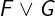
Arguments: Two or more Boolean expressions.
Apalache type: (Bool, Bool) => Bool
Effect:
The binary case F \/ G evaluates to:
-
FALSE, if bothFandGevaluate toFALSE. -
TRUE, ifFevaluates toTRUE, orFevaluates toFALSEandGevaluates toTRUE.
The general case F_1 \/ ... \/ F_n can be understood by evaluating
the expression F_1 \/ (F_2 \/ ... \/ (F_{n-1} \/ F_n)...).
Determinism: deterministic, if the arguments may not update primed variables. If the arguments may update primed variables, disjunctions may result in non-determinism, see Control Flow and Non-determinism.
Errors: In pure TLA+, the result is undefined, if a non-Boolean argument is involved in the evaluation (the evaluation is lazy). In this case, Apalache statically reports a type error, whereas TLC reports a runtime error.
Example in TLA+:
TRUE \/ TRUE \* TRUE
FALSE \/ TRUE \* TRUE
TRUE \/ FALSE \* TRUE
FALSE \/ FALSE \* FALSE
TRUE \/ 1 \* TRUE in TLC, type error in Apalache
1 \/ TRUE \* error in TLC, type error in Apalache
Example in Python:
>>> True or True
True
>>> False or True
True
>>> True or False
True
>>> False or False
False
Special syntax form: To minimize the number of parentheses, disjunction can be written in the indented form:
\/ F_1
\/ G_1
...
\/ G_k
\/ F_2
...
\/ F_n
Similar to scopes in Python, the TLA+ parser groups the expressions according
to the number of spaces in front of \/. The formula in the above example
is equivalent to:
F_1 \/ (G_1 \/ ... \/ G_k) \/ F_2 \/ ... \/ F_n
The indented form allows you to combine conjunctions and disjunctions:
\/ /\ F
/\ G
\/ \/ H
\/ J
The above formula is equivalent to:
(F /\ G) \/ (H \/ J)
Negation
Notation: ~F or \neg F or \lnot F
LaTeX notation: 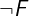
Arguments: One argument that should evaluate to a Boolean value.
Apalache type: Bool => Bool
Effect:
The value of ~F is computed as follows:
- if
Fis evaluated toFALSE, then~Fis evaluated toTRUE, - if
Fis evaluated toTRUE, then~Fis evaluated toFALSE.
Determinism: Deterministic.
Errors: In pure TLA+, the result is undefined, if the argument evaluates to a non-Boolean value. In this case, Apalache statically reports a type error, whereas TLC reports a runtime error.
Example in TLA+:
~TRUE \* FALSE
~FALSE \* TRUE
~(1) \* error in TLC, type error in Apalache
Example in Python:
>>> not True
False
>>> not False
True
Implication
Notation: F => G
LaTeX notation: 
Arguments: Two arguments. Although they can be arbitrary expressions, the result is only defined when both arguments are evaluated to Boolean values.
Apalache type: (Bool, Bool) => Bool. Note that the => operator at the type level expresses the relation of inputs types to output types for operators, and as opposed to the => expressing the implication relation at the value level.
Effect: F => G evaluates to:
-
TRUE, ifFevaluates toFALSE, orFevaluates toTRUEandGevaluates toTRUE. -
FALSE, ifFevaluates toTRUEandGevaluates toFALSE.
Determinism: Deterministic.
Errors: In pure TLA+, the result is undefined, if one of the arguments evaluates to a non-Boolean value. In this case, Apalache statically reports a type error, whereas TLC reports a runtime error.
Example in TLA+:
FALSE => TRUE \* TRUE
TRUE => TRUE \* TRUE
FALSE => FALSE \* TRUE
TRUE => FALSE \* FALSE
FALSE => 1 \* TRUE in TLC, type error in Apalache
TRUE => 1 \* runtime error in TLC, type error in Apalache
1 => TRUE \* runtime error in TLC, type error in Apalache
Example in Python:
Recall that A => B is equivalent to ~A \/ B.
>>> (not False) or True
True
>>> (not True) or True
True
>>> (not False) or False
True
>>> (not True) or False
False
Equivalence
Notation: F <=> G or F \equiv G
LaTeX notation:  or 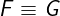
or 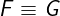
Arguments: Two arguments. Although they can be arbitrary expressions, the result is only defined when both arguments are evaluated to Boolean values.
Apalache type: (Bool, Bool) => Bool
Effect: F <=> G evaluates to:
-
TRUE, if bothFandGevaluate toTRUE, or bothFandGevaluate toFALSE. -
FALSE, if one of the arguments evaluates toTRUE, while the other argument evaluates toFALSE.
How is F <=> G different from F = G? Actually, F <=> G is equality
that is defined only for Boolean values. In other words, if F and G are
evaluated to Boolean values, then F <=> G and F = G are evaluated to the
same Boolean value. We prefer F <=> G to F = G, as F <=> G clearly
indicates the intended types of F and G and thus makes the logical
structure more obvious.
Determinism: Deterministic.
Errors: In pure TLA+, the result is undefined, if one of the arguments evaluates to a non-Boolean value. In this case, Apalache statically reports a type error, whereas TLC reports a runtime error.
Example in TLA+:
FALSE <=> TRUE \* FALSE
TRUE <=> TRUE \* TRUE
FALSE <=> FALSE \* TRUE
TRUE <=> FALSE \* TRUE
FALSE <=> 1 \* runtime error in TLC, type error in Apalache
1 <=> TRUE \* runtime error in TLC, type error in Apalache
Example in Python:
Assuming that both expressions are Boolean, F <=> G is equivalent to F = G.
>>> False == True
False
>>> True == True
True
>>> False == False
True
>>> True == False
False
Control Flow and Non-determinism in TLA+
Author: Igor Konnov
Peer review: Shon Feder, Jure Kukovec
Non-determinism is one of the TLA+ features that makes it different from
mainstream programming languages. However, it is very easy to overlook it: There is no
special syntax for expressing non-determinism. In pure TLA+, whether your
specification is deterministic or not depends on the evaluation of the initial
predicate and of the transition predicate. These are usually called Init and
Next, respectively. In the following, we first intuitively explain what non-determinism
means in the mathematical framework of TLA+, and then proceed with the
explanation that is friendly to computers and software engineers.
Explaining non-determinism to humans
States, transitions, actions, computations. Every TLA+ specification comes
with a set of state variables. For instance, the following specification
declares two state variables x and y:
-------- MODULE coord ----------
VARIABLES x, y
Init == x = 0 /\ y = 0
Next == x' = x + 1 /\ y' = y + 1
================================
A state is a mapping from state variables to TLA+ values. We do not go into the mathematical depths of precisely defining TLA+ values. Due to the background theory of ZFC, this set is well-defined and is not subject to logical paradoxes. Basically, the values are Booleans, integers, strings, sets, functions, etc.
In the above example, the operator Init evaluates to TRUE on exactly one
state, which we can conveniently write using the record constructor as follows:
[x |-> 0, y |-> 0].
The operator Next contains primes (') and thus represents pairs of states,
which we call transitions. An operator over unprimed and primed variables
is called an action in TLA+. Intuitively, the operator Next in our example
evaluates to TRUE on infinitely many pairs of states. For instance, Next
evaluates to TRUE on the following pairs:
<<[x |-> 0, y |-> 0], [x |-> 1, y |-> 1]>>
<<[x |-> 1, y |-> 1], [x |-> 2, y |-> 2]>>
<<[x |-> 2, y |-> 2], [x |-> 3, y |-> 3]>>
...
In our example, the second state of every transition matches the first state of the next transition in the list. This is because the above sequence of transitions describes the following sequence of states:
[x |-> 0, y |-> 0]
[x |-> 1, y |-> 1]
[x |-> 2, y |-> 2]
[x |-> 3, y |-> 3]
...
Actually, we have just written a computation of our specification.
A finite computation is a finite sequence of states s_0, s_1, ..., s_k
that satisfies the following properties:
- The operator
Initevaluates toTRUEon states_0, and - The operator
Nextevaluates toTRUEon every pair of states<<s_i, s_j>>for0 <= i < kandj = i + 1.
We can also define an infinite computation by considering an infinite
sequence of states that are connected via Init and Next as above, but
without stopping at any index k.
Below we plot the values of x and y in the first 16 states with red dots.
Not surprisingly, we just get a line.
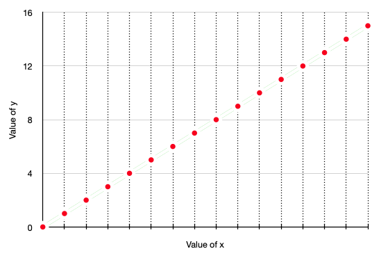
Note: In the above examples, we only showed transitions that could be
produced by computations, which (by our definition) originate from the initial
states. These transitions contain reachable states. In principle, Next may
also describe transitions that contain unreachable states. For instance, the
operator Next from our example evaluates to TRUE on the following pairs as
well:
<<[x |-> -100, y |-> -100], [x |-> -99, y |-> -99]>>
<<[x |-> -100, y |-> 100], [x |-> -99, y |-> 101]>>
<<[x |-> 100, y |-> -100], [x |-> 101, y |-> -99]>>
...
There is no reason to restrict transitions only to the reachable states (and it would be hard to do, technically). This feature is often used to reason about inductive invariants.
Determinism and non-determinism. Our specification is quite boring: It describes exactly one initial state, and there is no variation in computing the next states. We can make it a bit more interesting:
------------ MODULE coord2 ---------------
VARIABLES x, y
Init == x = 0 /\ (y = 0 \/ y = 1 \/ y = 2)
Next == x' = x + 1 /\ y' = y + 1
==========================================
Now our plot has a bit more variation. It presents three computations
that are starting in three different initial states: [x |-> 0, y |-> 0],
[x |-> 0, y |-> 1], and [x |-> 0, y |-> 2].
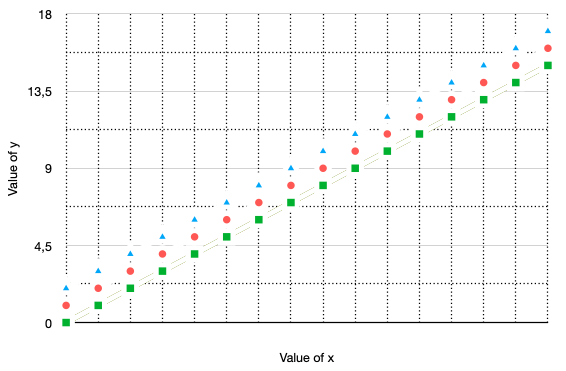
However, there is still not much variation in Next. For every state s,
we can precisely say which state follows s according to Next. We can
define Next as follows (note that Init is defined as in coord):
------------ MODULE coord3 -----------------
VARIABLES x, y
Init == x = 0 /\ y = 0
Next == x' = x + 1 /\ (y' = x \/ y' = x + 1)
============================================
The following plot shows the states that are visited by the computations
of the specification coord3:
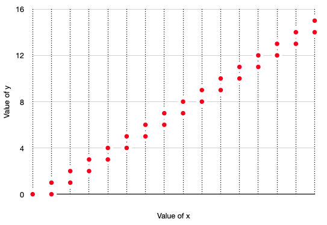
Notice that specification coord describes one infinite computation (and
infinitely many finite computations that are prefixes of the infinite
computation). Specification coord2 describes three infinite computations.
Specification coord3 describes infinitely many infinite computations: At
every step, Next may choose between y' = x or y' = x + 1.
Why are these specifications so different? The answer lies in non-determinism.
Specification coord is completely deterministic: There is just one state that
evaluates Init to TRUE, and every state is the first component of exactly
one transition, as specified by Next. Specification coord2 has
non-determinism in the operator Init. Specification coord3 has
non-determinism in the operator Next.
Discussion. So far we have been talking about the intuition. If you would like to know more about the logic behind TLA+ and the semantics of TLA+, check Chapter 16 of Specifying Systems and The Specification Language TLA+.
When we look at the operators like Init and Next in our examples, we can
guess the states and transitions. If we could ask our logician friend to guess
the states and transitions for us every time we read a TLA+ specification, that
would be great. But this approach does not scale well.
Can we explain non-determinism to a computer? It turns out that we can. In fact, many model checkers support non-determinism in their input languages. For instance, see Boogie and Spin. Of course, this comes with constraints on the structure of the specifications. After all, people are much better at solving certain logical puzzles than computers, though people get bored much faster than computers.
To understand how TLC enumerates states, check Chapter 14 of Specifying Systems. In the rest of this document, we focus on treatment of non-determinism that is close to the approach in Apalache.
Explaining non-determinism to computers
To see how a program could evaluate a TLA+ expression, we need two more ingredients: bindings and oracles.
Bindings. We generalize states to bindings: Given a set of names N, a
binding maps every name from N to a value. When N is the set of all
state variables, a binding describes a state. However, a binding does not have
to assign values to all state variables. Moreover, a binding may assign values
to names that are not the names of state variables. In the following, we are
using bindings over subsets of names that contain: (1) names of the state
variables, and (2) names of the primed state variables.
To graphically distinguish bindings from states, we use parentheses and arrows
to define bindings. For instance, (x -> 1, x' -> 3) is a binding that maps
x to 1 and x' to 3. (This is our notation, not a common TLA+ notation.)
Evaluating deterministic expressions. Consider the specification coord,
which was given above. By starting with the empty binding (), we can see how
to automatically evaluate the body of the operator Init:
x = 0 /\ y = 0
By following semantics of conjunction, we see that /\ is
evaluated from left-to-right. The left-hand side equality x = 0 is treated as
an assignment to x, since x is not assigned a value in the empty binding
(), which it is evaluated against. Hence, the expression x = 0 produces
the binding (x -> 0). When applied to this binding, the right-hand side
equality y = 0 is also treated as an assignment to y. Hence, the expression
y = 0 results in the binding (x -> 0, y -> 0). This binding is defined over
all state variables, so it gives us the only initial state [x |-> 0, y |-> 0].
Let's see how to evaluate the body of the operator Next:
x' = x + 1 /\ y' = y + 1
As we have seen, Next describes pairs of states. Thus, we will produce
bindings over non-primed and primed variables, that is, over x, x', y, y'.
Non-primed variables represent the state before a transition fires, whereas
primed variables represent the state after the transition has been fired.
Consider evaluation of Next in the state [x |-> 3, y |-> 3], that is, the
evaluation starts with the binding (x -> 3, y -> 3). Similar to the
conjunction in Init, the conjunction in Next first produces the binding (x -> 3, y -> 3, x' -> 4) and then the binding (x -> 3, y -> 3, x' -> 4, y' -> 4). Moreover, Next evaluates to TRUE when it is evaluated against the
binding (x -> 3, y -> 3). Hence, the state [x |-> 3, y |-> 3] has the only
successor [x |-> 4, y |-> 4], when following the transition predicate Next.
In contrast, if we evaluate Next when starting with the binding (x -> 3, y -> 3, x' -> 1, y' -> 1), the result will be FALSE, as the left-hand side of
the conjunction x' = x + 1 evaluates to FALSE. Indeed, x' has value 1,
whereas x has value 3, so x' = x + 1 is evaluated as 1 = 3 + 1 against
the binding (x -> 3, y -> 3, x' -> 1, y' -> 1), which gives us FALSE.
Hence, the pair of states [x |-> 3, y |-> 3] and [x |-> 1, y |-> 1] is not
a valid transition as represented by Next.
So far, we only considered unconditional operators. Let's have a look at the
operator A:
A ==
y > x /\ y' = x /\ x' = x
Evaluation of A against the binding (x -> 3, y -> 10) produces the binding
(x -> 3, y -> 10, x' -> 3, y' -> 3) and the result TRUE. However, in the
evaluation of A against the binding (x -> 10, y -> 3), the leftmost
condition y > x evaluates to FALSE, so A evaluates to FALSE against the
binding (x -> 10, y -> 3). Hence, no next state can be produced from the
the state [x |-> 3, y |-> 10] by using operator A.
Until this moment, we have been considering only deterministic examples, that is, there was no "branching" in our reasoning. Such examples can be easily put into a program. What about the operators, where we can choose from multiple options that are simultaneously enabled? We introduce an oracle to resolve this issue.
Oracles. For multiple choices, we introduce an external device that we call
an oracle. More formally, we assume that there is a device called GUESS that
has the following properties:
- For a non-empty set
S, a callGUESS Sreturns some valuev \in S. - A call
GUESS {}halts the evaluation. - There are no assumptions about fairness of
GUESS. It is free to return elements in any order, produce duplicates and ignore some elements.
Why do we call it a device? We cannot call it a function, as functions are
deterministic by definition. For the same reason, it is not a TLA+
operator. In logic, we would say that GUESS is simply a binary relation on
sets and their elements, which would be no different from the membership
relation \in.
Why do we need GUESS S and cannot use CHOOSE x \in S: TRUE instead?
Actually, CHOOSE x \in S: TRUE is deterministic. It is guaranteed to return
the same value, when it is called on two equals sets: if S = T, then
(CHOOSE x \in S: TRUE) = (CHOOSE x \in T: TRUE). Our GUESS S does not have
this guarantee. It is free to return an arbitrary element of S each time
we call it.
How to implement GUESS S? There is no general answer to this question.
However, we know of multiple sources of non-determinism in computer science. So
we can think of GUESS S as being one of the following implementations:
-
GUESS Scan be a remote procedure call in a distributed system. Unless, we have centralized control over the distributed system, the returned value of RPC may be non-deterministic. -
GUESS Scan be simply the user input. In this case, the user resolves non-determinism. -
GUESS Scan be controlled by an adversary, who is trying to break the system. -
GUESS Scan pick an element by calling a pseudo-random number generator. However, note that RNG is a very special way of resolving non-determinism: It assumes probabilistic distribution of elements (usually, it is close to the uniform distribution). Thus, the probability of producing an unfair choice of elements with RNG will be approaching 0.
As you see, there are multiple sources of non-determinism. With GUESS S we can
model all of them. As TLA+ does not introduce special primitives for different
kinds of non-determinism, neither do we fix any implementation of GUESS S.
Halting. Note that GUESS {} halts the evaluation. What does it mean? The
evaluation cannot continue. It does not imply that we have found a deadlock in
our TLA+ specification. It simply means that we made wrong choices on the way.
If we would like to enumerate all possible state successors, like TLC does, we
have to backtrack (though that needs fairness of GUESS). In general, the
course of action depends on the program analysis that you implement. For
instance, a random simulator could simply backtrack and randomly choose another
value.
Non-determinism in \E x \in S: P
We only have to consider the following case: \E x \in S: P is evaluated against
a binding s, and there is a primed state variable y' that satisfies two
conditions:
- The predicate
Prefers toy', that is,Phas to assign a value toy'. - The value of
y'is not defined yet, that is, bindingsdoes not have a value for the namey'.
If the above assumptions do not hold true, the expression \E x \in S: P does
not have non-determinism and it can be evaluated by following the standard
deterministic semantics of exists, see Logic.
Note: We do not consider action operators like UNCHANGED y. They can be
translated into an equivalent form, e.g., UNCHANGED x is equivalent to y' = y.
Now it is very easy to evaluate \E x \in S: P. We simply evaluate the
following expression:
LET x == GUESS S IN P
It is the job of GUESS S to tell us what value of x should be
evaluated. There are three possible outcomes:
- Predicate
Pevaluates toTRUEwhen using the provided value ofx. In this case,Passigns the value of an expressionetoy'as soon as the evaluator meets the expressiony' = e. The evaluation may continue. - Predicate
Pevaluates toFALSEwhen using the provided value ofx. Well, that was a wrong guess. According to our semantics, the evaluation halts. See the above discussion on "halting". - The set
Sis empty, andGUESS Shalts. See the above discussion on "halting".
Example. Consider the following specification:
VARIABLE x
Init == x = 0
Next ==
\E i \in Int:
i > x /\ x' = i
It is easy to evaluate Init: It does not contain non-determinism and it
produces the binding (x -> 0) and the state [x |-> 0], respectively. When
evaluating Next against the binding (x -> 0), we have plenty of choices.
Actually, we have infinitely many choices, as the set Int is infinite. TLC
would immediately fail here. But there is no reason for our evaluation to fail.
Simply ask the oracle. Below we give three examples of how the evaluation
works:
1. (GUESS Int) returns 10. (LET i == 10 IN i > x /\ x' = i) is TRUE, x' is assigned 10.
2. (GUESS Int) returns 0. (LET i == 0 IN i > x /\ x' = i) is FALSE. Halt.
3. (GUESS Int) returns -20. (LET i == -20 IN i > x /\ x' = i) is FALSE. Halt.
Non-determinism in disjunctions
Consider a disjunction that comprises n clauses:
\/ P_1
\/ P_2
...
\/ P_n
Assume that we evaluate the disjunction against a binding s. Further,
let us say that Unassigned(s) is the set of variables that are not
defined in s. For every P_i we construct the set of state variables
Use_i that contains every variable x' that is mentioned in P_i.
There are three cases to consider:
- All sets
Use_iagree on which variables are to be assigned. Formally,Use_i \intersect Unassigned(s) = Use_j \intersect Unassigned(s) /= {}fori, j \in 1..n. This is the case that we consider below. - Two clauses disagree on the set of variables to be assigned.
Formally, there is a pair
i, j \in 1..nthat satisfy the inequality:Use_i \intersect Unassigned(s) /= Use_j \intersect Unassigned(s). In this case, the specification is ill-structured. TLC would raise an error when it found a binding like this. Apalache would detect this problem when preprocessing the specification. - The clauses do not assign values to the primed variables.
Formally,
Use_i \intersect Unassigned(s) = {}fori \in 1..n. This is the deterministic case. It can be evaluated by using the deterministic semantics of Boolean operators.
We introduce a fresh variable to contain the choice of the clause. Here we
call it choice. In a real implementation of an evaluator, we would have to
give it a unique name. Now we evaluate the following conjunction:
LET choice == GUESS 1..n IN
/\ (choice = 1) => P_1
/\ (choice = 2) => P_2
...
/\ (choice = n) => P_n
Importantly, at most one clause in the conjunction will be actually evaluated. As a result, we cannot produce conflicting assignments to the primed variables.
Example: Consider the following specification:
VARIABLES x, y
Init == x == 0 /\ y == 0
Next ==
\/ x >= 0 /\ y' = x /\ x' = x + 1
\/ x <= 0 /\ y' = -x /\ x' = -(x + 1)
As you can see, the operator Next is non-deterministic since both clauses may
be activated when x = 0.
First, let's evaluate Next against the binding (x -> 3, y -> 3):
1. (GUESS 1..2) returns 1. (LET i == 1 IN Next) is TRUE, x' is assigned 4, y' is assigned 3.
2. (GUESS 1..2) returns 2. (LET i == 2 IN Next) is FALSE. Halt.
Second, evaluate Next against the binding (x -> -3, y -> 3):
1. (GUESS 1..2) returns 1. (LET i == 1 IN Next) is FALSE. Halt.
2. (GUESS 1..2) returns 2. (LET i == 2 IN Next) is TRUE, x' is assigned 4, y' is assigned -3.
Third, evaluate Next against the binding (x -> 0, y -> 0):
1. (GUESS 1..2) returns 1. (LET i == 1 IN Next) is TRUE. x' is assigned 1, y' is assigned 0.
2. (GUESS 1..2) returns 2. (LET i == 2 IN Next) is TRUE, x' is assigned -1, y' is assigned 0.
Important note. In contrast to short-circuiting of disjunction in the deterministic case, we have non-deterministic choice here. Hence, short-circuiting does not apply to non-deterministic disjunctions.
Non-determinism in Boolean IF-THEN-ELSE
For the deterministic use of IF-THEN-ELSE, see Deterministic
conditionals.
Consider an IF-THEN-ELSE expression to be evaluated in a partial state s:
IF A THEN B ELSE C
In Apalache, this operator has the polymorphic type (Bool, a, a) => a,
where a can be replaced with a concrete type. Here, we consider the case
(Bool, Bool, Bool) => Bool.
Here we assume that both B and C produce Boolean results and B and C
refer to at least one primed variable y' that is undefined in s. Otherwise, the
expression can be evaluated as a deterministic
conditional.
In this case, IF-THEN-ELSE can be evaluated as the equivalent expression:
\/ A /\ B
\/ ~A /\ C
We do not recommend you to use IF-THEN-ELSE with non-determinism. The structure of the disjunction provides a clear indication that the expression may assign to variables as a side effect. IF-THEN-ELSE has two thinking steps: what is the expected result, and what are the possible side effects.
Warning: While it is technically possible to write x' = e inside the
condition, the effect of x' = e is not obvious when x' is not assigned a
value.
Non-determinism in Boolean CASE
For the deterministic use of CASE,
see Deterministic conditionals.
CASE without OTHER.
Consider a CASE expression:
CASE P_1 -> e_1
[] P_2 -> e_2
...
[] P_n -> e_n
Here, we assume that e_1, ..., e_n produce Boolean results. Or, in terms of
Apalache types, this expression has the type: (Bool, Bool, ..., Bool, Bool) => Bool. Otherwise, see Deterministic conditionals.
This operator is equivalent to the following disjunction:
\/ P_1 /\ e_1
\/ P_2 /\ e_2
...
\/ P_n /\ e_n
Similar to IF-THEN-ELSE, we do not recommend using CASE for expressing non-determinism. When you are using disjunction, the Boolean result and possible side effects are expected.
CASE with OTHER. The more general form of CASE is like follows:
CASE P_1 -> e_1
[] P_2 -> e_2
...
[] P_n -> e_n
[] OTHER -> e_other
This operator is equivalent to the following disjunction:
\/ P_1 /\ e_1
\/ P_2 /\ e_2
...
\/ P_n /\ e_n
\/ ~P_1 /\ ... /\ ~P_n /\ e_other
The use of CASE with OTHER together with non-determinism is quite rare. It is not clear why would one need a fallback option in the Boolean formula. We recommend you to use the disjunctive form instead.
Deterministic conditionals
In this section, we consider the instances of IF-THEN-ELSE and CASE that
may not update primed variables. For the case, when the operators inside
IF-THEN-ELSE or CASE can be used to do non-deterministic assignments, see
Control Flow and Non-determinism.
Warning: Because frequent use of IF-THEN-ELSE is very common in most
programming languages, TLA+ specification authors with programming experience
often default to writing expressions such as IF A THEN B ELSE C. We
encourage those authors to use this construct more sparingly. In our
experience, the use of IF-THEN-ELSE is rarely required. Many things can be
done with Boolean operators, which provide more structure in
TLA+ code than in programming languages. We recommend using IF-THEN-ELSE to
compute predicate-dependent values, not to structure code.
Warning 2: CASE is considered deterministic in this
section, as it is defined with the CHOOSE operator in
Specifying Systems, Section 16.1.4.
For this reason, CASE should only be used when all of its guards are mutually exclusive.
Given all the intricacies of CASE,
we recommend using nested IF-THEN-ELSE instead.
Deterministic IF-THEN-ELSE
Use it when choosing between two values, not to structure your code.
Notation: IF A THEN B ELSE C
LaTeX notation: the same
Arguments: a Boolean expression A and two expressions B and C
Apalache type: (Bool, a, a) => a. Note that a can be replaced with
Bool. If a is Bool, and only in that case, the expression IF A THEN B ELSE C is equivalent to (A => B) /\ (~A => C).
Effect: IF A THEN B ELSE C evaluates to:
- The value of
B, ifAevaluates toTRUE. - The value of
C, ifAevaluates toFALSE.
Determinism: This is a deterministic version. For the non-deterministic version, see Control Flow and Non-determinism.
Errors: If A evaluates to a non-Boolean value, the result is undefined.
TLC raises an error during model checking. Apalache raises a type error when
preprocessing. Additionally, if B and C may evaluate to values of different
types, Apalache raises a type error.
Example in TLA+: Consider the following TLA+ expression:
IF x THEN 100 ELSE 0
As you most likely expected, this expression evaluates to 100, when x
evaluates to TRUE; and it evaluates to 0, when x evaluates to FALSE.
Example in Python:
100 if x else 0
Note that we are using the expression syntax for if-else in python.
This is because we write an expression, not a series of statements that assign
values to variables!
Deterministic CASE
Read the description and never use this operator
Notation:
CASE p_1 -> e_1
[] p_2 -> e_2
...
[] p_n -> e_n
LaTeX notation: 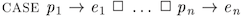
Arguments: Boolean expressions p_1, ..., p_n and expressions e_1, ..., e_n.
Apalache type: (Bool, a, Bool, a, ..., Bool, a) => a, for some type a.
If a is Bool, then the case operator can be a part of a Boolean formula.
Effect: Given a state s, define the set I \subseteq 1..n as follows:
The set I includes the index j \in 1..n if
and only if p_j evaluates to TRUE in the state s.
Then the above CASE expression evaluates to:
- the value of the expression
e_ifor somei \in I, ifIis not empty; or - an undefined value, if the set
Iis empty.
As you can see, when several predicates {p_i: i \in I} are evaluated
to TRUE in the state s, then the result of CASE is equal to one of the
elements in the set {e_i: i \in I}. Although the result should be stable,
the exact implementation is unknown.
Whenever I is a singleton set, the result is easy to define: Just take the
only element of I. Hence, when p_1, ..., p_n are mutually exclusive,
the result is deterministic and implementation-agnostic.
Owing to the flexible semantics of simultaneously enabled predicates,
TLC interprets the above CASE operator as a chain of IF-THEN-ELSE expressions:
IF p_1 THEN e_1
ELSE IF p_2 THEN e_2
...
ELSE IF p_n THEN e_n
ELSE TLC!Assert(FALSE)
As TLC fixes the evaluation order, TLC may miss a bug in an arm that is never activated in this order!
Note that the last arm of the ITE-series ends with Assert(FALSE), as the
result is undefined, when no predicate evaluates to TRUE. As the type
of this expression cannot be precisely defined, Apalache does not support CASE
expressions, but only supports CASE-OTHER expressions (see below), which
it treats as a chain of IF-THEN-ELSE expressions.
Determinism. The result of CASE is deterministic, if there are no primes
inside. For the non-deterministic version, see [Control Flow and
Non-determinism]. When the predicates are
mutually exclusive, the evaluation result is clearly specified. When the predicates are
not mutually exclusive, the operator is still deterministic, but only one of
the simultaneously enabled branches is evaluated.
Which branch is evaluated depends on the CHOOSE operator, see [Logic].
Errors: If one of p_1, ..., p_n evaluates to a non-Boolean value, the
result is undefined. TLC raises an error during model checking. Apalache
raises a type error when preprocessing. Additionally, if e_1, ..., e_n
may evaluate to values of different types, Apalache raises a type error.
Example in TLA+: The following expression classifies an integer variable
n with one of the three strings: "negative", "zero", or "positive".
CASE n < 0 -> "negative"
[] n = 0 -> "zero"
[] n > 0 -> "positive"
Importantly, the predicates n < 0, n = 0, and n > 0 are mutually
exclusive.
The following expression contains non-exclusive predicates:
CASE n % 2 = 0 -> "even"
[] (\A k \in 2..(1 + n \div 2): n % k /= 0) -> "prime"
[] n % 2 = 1 -> "odd"
Note that by looking at the specification, we cannot tell, whether this
expression returns "odd" or "prime", when n = 17. We only know that the
case expression should consistently return the same value, whenever it is
evaluated with n = 17.
Example in Python: Consider our first example in TLA+. Similar to TLC, we give executable semantics for the fixed evaluation order of the predicates.
def case_example(n):
if n < 0:
return "negative"
elif n == 0:
return "zero"
elif n > 0:
return "positive"
Deterministic CASE-OTHER
Better use IF-THEN-ELSE.
Notation:
CASE p_1 -> e_1
[] p_2 -> e_2
...
[] p_n -> e_n
[] OTHER -> e_0
LaTeX notation: 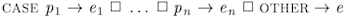
Arguments: Boolean expressions p_1, ..., p_n and expressions e_0, e_1, ..., e_n.
Apalache type: (Bool, a, Bool, a, ..., Bool, a, a) => a, for some type a.
If a is Bool, then the case operator can be a part of a Boolean formula.
Effect: This operator is equivalent to the following version of CASE:
CASE p_1 -> e_1
[] p_2 -> e_2
...
[] p_n -> e_n
[] ~(p_1 \/ p_2 \/ ... \/ p_n) -> e_0
Both TLC and Apalache interpret this CASE operator as a chain of
IF-THEN-ELSE expressions:
IF p_1 THEN e_1
ELSE IF p_2 THEN e_2
...
ELSE IF p_n THEN e_n
ELSE e_0
All the idiosyncrasies of CASE apply to CASE-OTHER. Hence, we recommend
using IF-THEN-ELSE instead of CASE-OTHER. Although IF-THEN-ELSE
is a bit more verbose, its semantics are precisely defined.
Determinism. The result of CASE-OTHER is deterministic, if e_0, e_1,
..., e_n may not update primed variables. For the non-deterministic version,
see [Control Flow and Non-determinism]. When
the predicates are mutually exclusive, the semantics is clearly specified. When
the predicates are not mutually exclusive, the operator is still deterministic,
but only one of the simultaneously enabled branches is evaluated. The choice of
the branch is implemented with the operator CHOOSE, see
[Logic].
Errors: If one of p_1, ..., p_n evaluates to a non-Boolean value, the
result is undefined. TLC raises an error during model checking. Apalache
raises a type error when preprocessing. Additionally, if e_0, e_1, ...,
e_n may evaluate to values of different types, Apalache raises a type error.
Integers
The integer literals belong to the core language. They are written by
using the standard syntax: 0, 1, -1, 2, -2, 3, -3, ... Importantly, TLA+
integers are unbounded. They do not have any fixed bit width, and they cannot
overflow. In Apalache, these literals have the type Int.
The integer operators are defined in the standard module Integers. To use
it, write the EXTENDS clause in the first lines of your module. Like this:
---- MODULE MyArithmetics ----
EXTENDS Integers
...
==============================
Integers in Apalache and SMT
Although you can write arbitrary expressions over integers in TLA+, Apalache
translates these expressions as constraints in
SMT. Some
expressions are easier to solve than the others. For instance, the expression
2 * x > 5 belongs to linear integer arithmetic, which can be solved more
efficiently than general arithmetic. For state variables x and y, the
expression x * y > 5 belongs to non-linear integer arithmetic, which is
harder to solve than linear arithmetic.
When your specification is using only integer literals, e.g., 1, 2, 42,
but none of the operators from the Integers module, the integers can
be avoided altogether. For instance, you can replace the integer constants
with string constants, e.g., "1", "2", "42". The string constants are
translated as constants in the SMT constraints. This simple trick may bring
your specification into a much simpler theory. Sometimes, this trick allows z3
to use parallel algorithms.
Constants
The module Integers defines two constant sets (technically, they are
operators without arguments):
- The set
Intthat consists of all integers. This set is infinite. In Apalache, the setInthas the typeSet(Int). A bit confusing, right? 😎 - The set
Natthat consists of all natural numbers, that is,Natcontains every integerxthat has the propertyx >= 0. This set is infinite. In Apalache, the setNathas the type...Set(Int).
Operators
Integer range
Notation: a..b
LaTeX notation: a..b
Arguments: Two arguments. The result is only defined when both arguments are evaluated to integer values.
Apalache type: (Int, Int) => Set(Int).
Effect: a..b evaluates to the finite set {i \in Int: a <= i /\ i <= b},
that is, the set of all integers in the range from a to b, including a
and b. If a > b, then a..b is the empty set {}.
Determinism: Deterministic.
Errors: In pure TLA+, the result is undefined, if one of the arguments evaluates to a non-integer value. In this case, Apalache statically reports a type error, whereas TLC reports a runtime error.
Example in TLA+:
0..10 \* { 0, 1, 2, 3, 4, 5, 6, 7, 8, 9, 10 }
-5..3 \* { -5, -4, -3, -2, -1, 0, 1, 2, 3 }
10..0 \* { }
"a".."z" \* runtime error in TLC, type error in Apalache
{1}..{3} \* runtime error in TLC, type error in Apalache
Example in Python: a..b can be written as set(range(a, b + 1)) in
python.
>>> set(range(0, 10 + 1))
{0, 1, 2, 3, 4, 5, 6, 7, 8, 9, 10}
>>> set(range(10, 2))
set()
Unary integer negation
Notation: -i
LaTeX notation: -i
Arguments: One argument. The result is only defined when the argument evaluates to an integer.
Apalache type: Int => Int.
Effect: -i evaluates to the negation of i.
Determinism: Deterministic.
Errors: In pure TLA+, the result is undefined, if the argument evaluates to a non-integer value. In this case, Apalache statically reports a type error, whereas TLC reports a runtime error.
Example in TLA+:
-(5) \* -5, note that '-5' is just a literal, not operator application
-(-5) \* 5
-x \* negated value of x
Example in Python:
>>> -(5)
-5
>>> -(-5)
5
Integer addition
Notation: a + b
LaTeX notation: a + b
Arguments: Two arguments. The result is only defined when both arguments are evaluated to integer values.
Apalache type: (Int, Int) => Int.
Effect: a + b evaluates to the sum of a and b.
Determinism: Deterministic.
Errors: No overflow is possible. In pure TLA+, the result is undefined, if one of the arguments evaluates to a non-integer value. In this case, Apalache statically reports a type error, whereas TLC reports a runtime error.
Example in TLA+:
5 + 3 \* 8
(-5) + 3 \* -2
Example in Python:
>>> 5 + 3
8
>>> (-5) + 3
-2
Integer subtraction
Notation: a - b
LaTeX notation: a - b
Arguments: Two arguments. The result is only defined when both arguments are evaluated to integer values.
Apalache type: (Int, Int) => Int.
Effect: a - b evaluates to the difference of a and b.
Determinism: Deterministic.
Errors: No overflow is possible. In pure TLA+, the result is undefined, if one of the arguments evaluates to a non-integer value. In this case, Apalache statically reports a type error, whereas TLC reports a runtime error.
Example in TLA+:
5 - 3 \* 2
(-5) - 3 \* -8
(-5) - (-3) \* -2
Example in Python:
>>> 5 - 3
2
>>> (-5) - 3
-8
>>> (-5) - (-3)
-2
Integer multiplication
Notation: a * b
LaTeX notation: a * b
Arguments: Two arguments. The result is only defined when both arguments are evaluated to integer values.
Apalache type: (Int, Int) => Int.
Effect: a * b evaluates to the product of a and b.
Determinism: Deterministic.
Errors: No overflow is possible. In pure TLA+, the result is undefined, if one of the arguments evaluates to a non-integer value. In this case, Apalache statically reports a type error, whereas TLC reports a runtime error.
Example in TLA+:
5 * 3 \* 15
(-5) * 3 \* -15
Example in Python:
>>> 5 * 3
15
>>> (-5) * 3
-15
Integer division
Notation: a \div b
LaTeX notation: 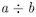
Arguments: Two arguments. The result is only defined when both arguments are evaluated to integer values, and the second argument is different from 0.
Apalache type: (Int, Int) => Int.
Effect: a \div b is defined as follows:
- When
a >= 0andb > 0, then the result ofa \div bis the integercthat has the property:a = b * c + dfor somedin0..(b-1). - When
a < 0andb > 0, then the result ofa \div bis the integercthat has the property:a = b * c + dfor somedin0..(b-1). - When
a >= 0andb < 0, then the result ofa \div bis the integercthat has the property:a = b * c + dfor somedin0..(-b-1). - When
a < 0andb < 0, then the result ofa \div bis the integercthat has the property:a = b * c + dfor somedin0..(-b-1).
When a < 0 or b < 0, the result of the integer division a \div b according to the TLA+ definition is different from the integer division a / b in the programming languages (C, Java, Scala, Rust). See the
table below.
| C (clang 12) | Scala 2.13 | Rust | Python 3.8.6 | TLA+ (TLC) | SMT (z3 4.8.8) |
|---|---|---|---|---|---|
| 100 / 3 == 33 | 100 / 3 == 33 | 100 / 3 == 33 | 100 // 3 == 33 | (100 \div 3) = 33 | (assert (= 33 (div 100 3))) |
| -100 / 3 == -33 | -100 / 3 == -33 | -100 / 3 == -33 | -100 // 3 == -34 | ((-100) \div 3) = -34 | (assert (= (- 0 34) (div (- 0 100) 3))) |
| 100 / (-3) == -33 | 100 / (-3) == -33 | 100 / (-3) == -33 | 100 // (-3) == -34 | (100 \div (-3)) = -34 | (assert (= (- 0 33) (div 100 (- 0 3)))) |
| -100 / (-3) == 33 | -100 / (-3) == 33 | -100 / (-3) == 33 | -100 // (-3) == 33 | ((-100) \div (-3)) = 33 | (assert (= 34 (div (- 0 100) (- 0 3)))) |
Unfortunately, Specifying Systems only gives us the definition for the case
b > 0 (that is, cases 1-2 in our description). The implementation in SMT and
TLC produce incompatible results for b < 0. See issue #331 in
Apalache.
Determinism: Deterministic.
Errors: No overflow is possible. In pure TLA+, the result is undefined, if
one of the arguments evaluates to a non-integer value. In this case, Apalache
statically reports a type error, whereas TLC reports a runtime error. The value
of a \div b is undefined for b = 0.
Example in TLA+: Here are the examples for the four combinations of signs (according to TLC):
100 \div 3 \* 33
(-100) \div 3 \* -34
100 \div (-3) \* -34 in TLC
(-100) \div (-3) \* 33 in TLC
Example in Python: Here are the examples for the four combinations of signs to produce the same results as in TLA+:
>>> 100 // 3
33
>>> -100 // 3
-34
>>> 100 // (-3)
-34
>>> (-100) // (-3)
33
Integer remainder
Notation: a % b
LaTeX notation: a % b
Arguments: Two arguments. The result is only defined when both arguments are evaluated to integer values, and the second argument is different from 0.
Apalache type: (Int, Int) => Int.
Effect: a % b is the number c that has the property:
a = b * (a \div b) + c.
Note that when a < 0 or b < 0, the result of the integer remainder a % b
according to the TLA+ definition is different from the integer remainder a % b in the programming languages (C, Python, Java, Scala, Rust). See the
examples below.
Determinism: Deterministic.
Errors: No overflow is possible. In pure TLA+, the result is undefined, if
one of the arguments evaluates to a non-integer value. In this case, Apalache
statically reports a type error, whereas TLC reports a runtime error. The value
of a % b is undefined for b = 0.
Example in TLA+: Here are the examples for the four combinations of signs:
100 % 3 \* 1
-100 % (-3) \* 2
100 % (-3) \* 1
-100 % 3 \* 2
Example in Python: Here are the examples for the four combinations of signs to produce the same results as in TLA+:
>>> 100 % 3
1
>>> -100 % (-3) + 3
2
>>> 100 % (-3) + 3
1
>>> -100 % 3
2
Integer exponentiation
Notation: a^b
LaTeX notation: 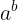
Arguments: Two arguments. The result is only defined when both arguments are evaluated to integer values, and these values fall into one of the several cases:
b > 0,b = 0anda /= 0.
Apalache type: (Int, Int) => Int.
Effect: a^b evaluates to a raised to the b-th power:
- If
b = 1, thena^bis defined asa. - If
a = 0andb > 0, thena^bis defined as0. - If
a /= 0andb > 1, thena^bis defined asa * a^(b-1). - In all other cases,
a^bis undefined.
In TLA+, a^b extends to reals, see Chapter 18 in Specifying Systems.
For instance, 3^(-5) is defined on reals. However, reals are supported
neither by TLC, nor by Apalache.
Determinism: Deterministic.
Errors: No overflow is possible. In pure TLA+, the result is undefined, if one of the arguments evaluates to a non-integer value. In this case, Apalache statically reports a type error, whereas TLC reports a runtime error.
Example in TLA+:
5^3 \* 125
(-5)^3 \* -125
0^3 \* 0
1^5 \* 1
(-1)^5 \* -1
0^0 \* undefined on integers, TLC reports a runtime error
5^(-3) \* undefined on integers, TLC reports a runtime error
Example in Python:
>>> 5 ** 3
125
>>> (-5) ** 3
-125
>>> 0 ** 3
0
>>> 1 ** 5
1
>>> (-1) ** 5
-1
>>> 0 ** 0
1
>>> 5 ** (-3)
0.008
Integer less-than
Notation: a < b
LaTeX notation: a < b
Arguments: Two arguments. The result is only defined when both arguments are evaluated to integer values.
Apalache type: (Int, Int) => Bool.
Effect: a < b evaluates to:
TRUE, ifais less thanb,FALSE, otherwise.
Determinism: Deterministic.
Errors: In pure TLA+, the result is undefined, if one of the arguments evaluates to a non-integer value. In this case, Apalache statically reports a type error, whereas TLC reports a runtime error.
Example in TLA+:
1 < 5 \* TRUE
5 < 5 \* FALSE
5 < 1 \* FALSE
Example in Python:
>>> 1 < 5
True
>>> 5 < 5
False
>>> 5 < 1
False
Integer less-than-or-equal
Notation: a <= b or a =< b or a \leq b
LaTeX notation: 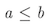
Arguments: Two arguments. The result is only defined when both arguments are evaluated to integer values.
Apalache type: (Int, Int) => Bool.
Effect: a <= b evaluates to:
TRUE, ifa < bora = b.FALSE, otherwise.
Determinism: Deterministic.
Errors: No overflow is possible. In pure TLA+, the result is undefined, if one of the arguments evaluates to a non-integer value. In this case, Apalache statically reports a type error, whereas TLC reports a runtime error.
Example in TLA+:
1 <= 5 \* TRUE
5 <= 5 \* TRUE
5 <= 1 \* FALSE
Example in Python:
>>> 1 <= 5
True
>>> 5 <= 5
True
>>> 5 <= 1
False
Integer greater-than
Notation: a > b
LaTeX notation: a > b
Arguments: Two arguments. The result is only defined when both arguments are evaluated to integer values.
Apalache type: (Int, Int) => Bool.
Effect: a > b evaluates to:
TRUE, ifais greater thanb,FALSE, otherwise.
Determinism: Deterministic.
Errors: No overflow is possible. In pure TLA+, the result is undefined, if one of the arguments evaluates to a non-integer value. In this case, Apalache statically reports a type error, whereas TLC reports a runtime error.
Example in TLA+:
1 > 5 \* FALSE
5 < 5 \* FALSE
5 > 1 \* TRUE
Example in Python:
>>> 1 > 5
False
>>> 5 > 5
False
>>> 5 > 1
True
Integer greater-than-or-equal
Notation: a >= b or a \geq b
LaTeX notation: 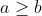
Arguments: Two arguments. The result is only defined when both arguments are evaluated to integer values.
Apalache type: (Int, Int) => Bool.
Effect: a >= b evaluates to:
TRUE, ifa > bora = b.FALSE, otherwise.
Determinism: Deterministic.
Errors: No overflow is possible. In pure TLA+, the result is undefined, if one of the arguments evaluates to a non-integer value. In this case, Apalache statically reports a type error, whereas TLC reports a runtime error.
Example in TLA+:
1 >= 5 \* FALSE
5 >= 5 \* TRUE
5 >= 1 \* TRUE
Example in Python:
>>> 1 >= 5
False
>>> 5 >= 5
True
>>> 5 >= 1
True
Equality and inequality
The operators a = b and a /= b are core operators of TLA+ and thus they are
not defined in the module Integers, see Logic.
Sets
Sets are the foundational data structure in TLA+. (Similar to what lists are in Lisp and Python). The other TLA+ data structures can be all expressed with sets: functions, records, tuples, sequences. In theory, even Booleans and integers can be expressed with sets. In practice, TLA+ tools treat Booleans and integers as special values that are different from sets. It is important to understand TLA+ sets well. In contrast to programming languages, there is no performance penalty for using sets instead of sequences: TLA+ does not have a compiler, the efficiency is measured in the time it takes the human brain to understand the specification.
Immutability. In TLA+, a set is an immutable data structure that stores its elements in no particular order. All elements of a set are unique. In fact, those two sentences do not make a lot of sense in TLA+. We have written them to build the bridge from a programming language to TLA+, as TLA+ does not have a memory model. 😉
Sets may be constructed by enumerating values in some order, allowing for duplicates:
{ 1, 2, 3, 2, 4, 3 }
Note that the above set is equal to the sets { 1, 2, 3, 4 } and { 4, 3, 2, 1 }. They are actually the same set, though they are constructed by passing
various number of arguments in different orders.
The most basic set operation is the set membership that checks, whether a set contains a value:
3 \in S
TLA+ sets are similar to
frozenset in
Python and immutable Set[Object] in Java. In contrast to programming
languages, set elements do not need hashes, as implementation efficiency is not
an issue in TLA+.
Types. In pure TLA+, sets may contain any kinds of elements. For instance, a set may mix integers, Booleans, and other sets:
{ 2020, { "is" }, TRUE, "fail" }
TLC restricts set elements to comparable values. See Section 14.7.2 of Specifying Systems. In a nutshell, if you do not mix the following five kinds of values in a single set, TLC would not complain about your sets:
- Booleans,
- integers,
- strings,
- sets,
- functions, tuples, records, sequences.
Apalache requires set elements to have the same type, that is, Set(a) for
some type a. This is enforced by the type checker. (Records are an exception
to this rule, as some records can be unified to a common type.)
Operators
Set constructor by enumeration
Notation: {e_1, ..., e_n}
LaTeX notation: {e_1, ..., e_n}
Arguments: Any number of arguments, n >= 0.
Apalache type: (a, ..., a) => Set(a), for some type a.
Effect: Produce the set that contains the values of the expressions e_1, ..., e_n, in no particular order, and only these values. If n = 0, the
empty set is constructed.
Determinism: Deterministic.
Errors: Pure TLA+ does not restrict the set elements. They can be any combination of TLA+ values: Booleans, integers, strings, sets, functions, etc.
TLC only allows a user to construct sets out of elements that are comparable. For instance, two integers are comparable, but an integer and a set are not comparable. See Section 14.7.2 of Specifying Systems.
Apalache goes further and requires that all set elements have the same type. If this is not the case, the type checker flags an error.
Example in TLA+:
{ 1, 2, 3 } \* a flat set of integers
{ { 1, 2 }, { 2, 3 } } \* a set of sets of integers
{ FALSE, 1 } \* a set of mixed elements.
\* Model checking error in TLC, type error in Apalache
Example in Python:
>>> {1, 2, 3}
{1, 2, 3}
>>> {frozenset({2, 3}), frozenset({1, 2})}
{frozenset({2, 3}), frozenset({1, 2})}
>>> {False, 1}
{False, 1}
Set membership
Notation: e \in S
LaTeX notation: 
Arguments: Two arguments. If the second argument is not a set, the result is undefined.
Apalache type: (a, Set(a)) => Bool, for some type a.
Effect: This operator evaluates to:
TRUE, ifSis a set that contains an element that is equal to the value ofe; andFALSE, ifSis a set and all of its elements are not equal to the value ofe.
Warning: If you are using the special form x' \in S, this operator may
assign a value to x' as a side effect. See Control Flow and Non-determinism.
Determinism: Deterministic, unless you are using the special form x' \in S to assign a value to x', see Control Flow and Non-determinism.
Errors: Pure TLA+ does not restrict the operator arguments. TLC flags a
model checking error, when it discovers that e cannot be compared to the
elements of S. Apalache produces a static type error, if the type of e is
incompatible with the type of elements of S, or if S is not a set.
Example in TLA+:
1 \in { 1, 2, 3 } \* TRUE
10 \in { 1, 2, 3 } \* FALSE
{} \in { {1}, {2} } \* FALSE
1 \in { "a", "b" } \* model checking error in TLC,
\* static type error in Apalache
Example in Python: Python conveniently offers us in:
>>> 1 in {1, 2, 3}
True
>>> 10 in {1, 2, 3}
False
>>> 1 in {"a", "b"}
False
Set non-membership
Notation: e \notin S
LaTeX notation: 
Arguments: Two arguments. If the second argument is not a set, the result is undefined.
Apalache type: (a, Set(a)) => Bool, for some type a.
Effect: This operator evaluates to:
FALSE, ifSis a set that contains an element that is equal to the value ofe; andTRUE, ifSis a set and all of its elements are not equal to the value ofe.
Warning: In contrast to x' \in S, the expression x' \notin T,
which is equivalent to ~(x' \in T) is never
treated as an assignment in Apalache and TLC.
Determinism: Deterministic.
Errors: Pure TLA+ does not restrict the operator arguments. TLC flags a
model checking error, when it discovers that e cannot be compared to the
elements of S. Apalache produces a static type error, if the type of e is
incompatible with the type of elements of S, or if S is not a set.
Example in TLA+:
1 \notin { 1, 2, 3 } \* FALSE
10 \notin { 1, 2, 3 } \* TRUE
{} \notin { {1}, {2} } \* TRUE
1 \notin { "a", "b" } \* model checking error in TLC,
\* static type error in Apalache
Example in Python: Python conveniently offers us not in:
>>> 1 not in {1, 2, 3}
False
>>> 10 not in {1, 2, 3}
True
>>> 1 not in {"a", "b"}
True
Equality and inequality
The operators a = b and a /= b are core operators of TLA+,
see Logic.
Set inclusion
Notation: S \subseteq T
LaTeX notation: 
Arguments: Two arguments. If both arguments are not sets, the result is undefined.
Apalache type: (Set(a), Set(a)) => Bool, for some type a.
Effect: This operator evaluates to:
TRUE, ifSandTare sets, and every element ofSis a member ofT;FALSE, ifSandTare sets, and there is an element ofSthat is not a member ofT.
Determinism: Deterministic.
Errors: Pure TLA+ does not restrict the operator arguments. TLC flags a
model checking error, when it discovers that elements of S cannot be compared
to the elements of T. Apalache produces a static type error, S and T are
either not sets, or sets of incompatible types.
Example in TLA+:
{ 1, 2 } \subseteq { 1, 2, 3 } \* TRUE
{ 1, 2, 3 } \subseteq { 1, 2, 3 } \* TRUE
{ 1, 2, 3 } \subseteq { 1, 2 } \* FALSE
{ {1} } \subseteq { 1, 2, 3 } \* FALSE, model checking error in TLC
\* static type error in Apalache
Example in Python: Python conveniently offers us <=:
>>> {1, 2} <= {1, 2, 3}
True
>>> {1, 2, 3} <= {1, 2, 3}
True
>>> {1, 2, 3} <= {1, 2}
False
>>> {frozenset({1})} <= {1, 2, 3}
False
Binary set union
Notation: S \union T or S \cup T
LaTeX notation: 
Arguments: Two arguments. If both arguments are not sets, the result is undefined.
Apalache type: (Set(a), Set(a)) => Set(a), for some type a.
Effect: This operator evaluates to the set that contains the elements
of S as well as the elements of T, and no other values.
Determinism: Deterministic.
Errors: Pure TLA+ does not restrict the operator arguments. TLC flags a
model checking error, when it discovers that elements of S cannot be compared
to the elements of T. Apalache produces a static type error, S and T are
either not sets, or sets of incompatible types.
Example in TLA+:
{ 0, 1, 2 } \union { 1, 2, 3 } \* { 0, 1, 2, 3 }
{ } \union { 1, 2, 3 } \* { 1, 2, 3 }
{ 1, 2, 3 } \union { } \* { 1, 2, 3 }
{ {1} } \union { 1, 2 } \* { {1}, 1, 2 }, model checking error in TLC
\* static type error in Apalache
Example in Python: Python conveniently offers us union
that can be written as |:
>>> {0, 1, 2} | {1, 2, 3}
{0, 1, 2, 3}
>>> set() | {1, 2, 3}
{1, 2, 3}
>>> {1, 2, 3} | set()
{1, 2, 3}
>>> {frozenset({1})} | {1, 2}
{1, frozenset({1}), 2}
Set intersection
Notation: S \intersect T or S \cap T
LaTeX notation: 
Arguments: Two arguments. If both arguments are not sets, the result is undefined.
Apalache type: (Set(a), Set(a)) => Set(a), for some type a.
Effect: This operator evaluates to the set that contains only those elements
of S that also belong to T, and no other values.
Determinism: Deterministic.
Errors: Pure TLA+ does not restrict the operator arguments. TLC flags a
model checking error, when it discovers that elements of S cannot be compared
to the elements of T. Apalache produces a static type error, S and T are
either not sets, or sets of incompatible types.
Example in TLA+:
{ 0, 1, 2 } \intersect { 1, 2, 3 } \* { 1, 2 }
{ } \intersect { 1, 2, 3 } \* { }
{ 1, 2, 3 } \intersect { } \* { }
{ {1} } \intersect { 1, 2 } \* { }, model checking error in TLC
\* static type error in Apalache
Example in Python: Python conveniently offers us intersection, which
can be also written as &:
>>> {0, 1, 2} & {1, 2, 3}
{1, 2}
>>> set() & {1, 2, 3}
set()
>>> {1, 2, 3} & set()
set()
>>> {frozenset({1})} & {1, 2}
set()
Set difference
Notation: S \ T
LaTeX notation: 
Arguments: Two arguments. If both arguments are not sets, the result is undefined.
Apalache type: (Set(a), Set(a)) => Set(a), for some type a.
Effect: This operator evaluates to the set that contains only those elements
of S that do not belong to T, and no other values.
Determinism: Deterministic.
Errors: Pure TLA+ does not restrict the operator arguments. TLC flags a
model checking error, when it discovers that elements of S cannot be compared
to the elements of T. Apalache produces a static type error, S and T are
either not sets, or sets of incompatible types.
Example in TLA+:
{ 0, 1, 2 } \ { 1, 2, 3 } \* { 0 }
{ } \ { 1, 2, 3 } \* { }
{ 1, 2, 3 } \ { } \* { 1, 2, 3 }
{ {1} } \ { 1, 2 } \* { {1} }, model checking error in TLC
\* static type error in Apalache
Example in Python: Python conveniently offers us difference, which
can be also written as -:
>>> {0, 1, 2} - {1, 2, 3}
{0}
>>> set() - {1, 2, 3}
set()
>>> {1, 2, 3} - set()
{1, 2, 3}
>>> {frozenset({1})} - {1, 2}
{frozenset({1})}
Set filter
Notation: { x \in S: P }
LaTeX notation: 
Arguments: Three arguments: a variable name (or a tuple of names, see Advanced syntax), a set, and an expression.
Apalache type: The formal type of this operator is a bit complex. Hence, we give an informal description:
xhas the typea, for some typea,Shas the typeSet(a),Phas the typeBool,- the expression
{ x \in S: P }has the typeSet(a).
Effect: This operator constructs a new set F as follows. For every
element e of S, do the following (we give a sequence of steps to ease
the understanding):
- Bind the element
eto variablex, - Evaluate the predicate
P, - If
Pevaluates toTRUEunder the binding[x |-> e], then insert the element ofeinto setF.
Determinism: Deterministic.
Errors: Pure TLA+ does not restrict the operator arguments. TLC flags a
model checking error, if S is infinite. Apalache produces a static type
error, if the type of elements of S is not compatible with the type of x
as expected in P.
Advanced syntax: Instead of a single variable x, one can use a tuple
syntax to unpack variables from a Cartesian product, see Tuples.
For instance, one can write { <<x, y>> \in S: P }. In this case, for every
element e of S, the variable x is bound to e[1] and y is bound to
e[2]. The filter expression constructs the set of elements (tuples) that make
P evaluate to TRUE.
Example in TLA+:
{ x \in {1, 2, 3, 4}: x > 2 } \* { 3, 4 }
{ x \in {1, 2, 3, 4}: x > 10 } \* { }
\* check the section on tuples to understand the following syntax
{ <<x, y>> \in (1..4) \X (1..4): y = 3 } \* {<<1, 3>>, <<2, 3>>, <<3, 3>>, <<4, 3>>}
Example in Python: Python conveniently offers us the set comprehension syntax:
>>> S = {1, 2, 3, 4}
>>> { x for x in S if x > 2 }
{3, 4}
>>> { x for x in S if x > 10 }
set()
>>> S2 = {(x, y) for x in S for y in S}
>>> {(x, y) for (x, y) in S2 if y == 3}
{(2, 3), (3, 3), (1, 3), (4, 3)}
Set map
Notation: { e: x \in S } or { e: x \in S, y \in T }, or more arguments
LaTeX notation: 
Arguments: At least three arguments: a mapping expression, a variable name (or a tuple of names, see Advanced syntax), a set. Additional arguments are variables names and sets, interleaved.
Apalache type: The formal type of this operator is a bit complex. Hence, we give an informal description for the one-argument case:
xhas the typea, for some typea,Shas the typeSet(a),ehas the typeb, for some typeb,- the expression
{ e: x \in S }has the typeSet(b).
Effect: We give the semantics for two arguments.
We write it as a sequence of steps to ease understanding.
This operator constructs a new set M as follows.
For every element e_1 of S and every element e_2 of T:
- Bind the element
e_1to variablex, - Bind the element
e_2to variabley, - Compute the value of
eunder the binding[x |-> e_1, y |-> e_2], - Insert the value
einto the setM.
Determinism: Deterministic.
Errors: Pure TLA+ does not restrict the operator arguments. TLC flags a
model checking error, if S is infinite. Apalache produces a static type
error, if the type of elements of S is not compatible in the context of e
when an element of S is bound to x.
Advanced syntax: Instead of a single variable x, one can use the tuple
syntax to unpack variables from a Cartesian product, see Tuples.
For instance, one can write { x + y: <<x, y>> \in S }. In this case, for every
element e of S, the variable x is bound to e[1] and y is bound to
e[2]. The map expression constructs the set of expressions that are computed
under this binding.
Example in TLA+:
{ 2 * x: x \in { 1, 2, 3, 4 } } \* { 2, 4, 6, 8 }
{ x + y: x \in 1..2, y \in 1..2 } \* { 2, 3, 4 }
\* check the section on tuples to understand the following syntax
{ x + y: <<x, y>> \in (1..2) \X (1..2) } \* { 2, 3, 4 }
Example in Python: Python conveniently offers us the set comprehension syntax:
>>> S = frozenset({1, 2, 3, 4})
>>> {2 * x for x in S}
{8, 2, 4, 6}
>>> T = {1, 2}
>>> {x + y for x in T for y in T}
{2, 3, 4}
>>> T2 = {(x, y) for x in T for y in T}
>>> T2
{(1, 1), (1, 2), (2, 1), (2, 2)}
>>> {x + y for (x, y) in T2}
{2, 3, 4}
Powerset
Notation: SUBSET S
LaTeX notation: SUBSET S
Arguments: One argument. If it is not a set, the result is undefined.
Apalache type: Set(a) => Set(Set(a)), for some type a.
Effect: This operator computes the set of all subsets of S.
That is, the set T the has the following properties:
- If
X \in T, thenX \subseteq S. - If
X \subseteq S, thenX \in T.
Determinism: Deterministic.
Errors: Pure TLA+ does not restrict the operator argument. TLC flags a
model checking error, when it discovers that S is not a set. Apalache
produces a static type error, if the type of S is not a set type.
Example in TLA+:
SUBSET { 0, 1, 2 }
\* { {}, {0}, {1}, {2}, {0, 1}, {1, 2}, {0, 2}, {0, 1, 2} }
Example in Python: An implementation of SUBSET S in Python is not trivial.
To appreciate the power of TLA+, see subset.py.
Set flattening
Notation: UNION S
LaTeX notation: UNION S
Warning: Do not confuse UNION S with S \union T. These are two
different operators, which unfortunately have similar-looking names.
Arguments: One argument. If it is not a set of sets, the result is undefined.
Apalache type: Set(Set(a)) => Set(a), for some type a.
Effect: Given that S is a set of sets, this operator computes the set
T that contains all elements of elements of S:
- If
X \in S, thenX \subseteq T. - If
y \in T, then there is a setY \in Sthat containsy, that is,y \in Y.
In particular, UNION flattens the powerset that is produced by SUBSET. That
is, (UNION (SUBSET S)) = S.
Determinism: Deterministic.
Errors: Pure TLA+ does not restrict the operator argument. TLC flags a
model checking error, when it discovers that S is not a set of sets.
Apalache produces a static type error, if the type of S is different from a
set of sets.
Example in TLA+:
UNION { {0, 1}, {1, 2}, {3} }
\* { 0, 1, 2, 3 }
Example in Python: In contrast to SUBSET S, an implementation of UNION S
in Python is quite simple:
>>> from functools import reduce
>>> s = { frozenset({0, 1}), frozenset({1, 2}), frozenset({3}) }
>>> reduce((lambda x, y: x | y), s, set())
{0, 1, 2, 3}
Set cardinality
Notation: Cardinality(S)
LaTeX notation: Cardinality(S)
Warning: Cardinality(S) is defined in the module FiniteSets.
Arguments: One argument. If S is not a set, or S is an infinite set,
the result is undefined.
Apalache type: Set(a) => Int, for some type a.
Effect: Cardinality(S) evaluates to the number of (unique) elements in
S.
Determinism: Deterministic.
Errors: Pure TLA+ does not restrict the operator argument. TLC flags a
model checking error, when it discovers that S is not a set, or when it is an
infinite set. Apalache produces a static type error, if the type of S is
different from a finite set.
Example in TLA+:
EXTENDS FiniteSets
...
Cardinality({ 1, 2, 3 })
\* 3
Example in Python: In Python, we just use the set size:
>>> S = { 1, 2, 3 }
>>> len(S)
3
Set finiteness
Notation: IsFinite(S)
LaTeX notation: IsFinite(S)
Warning: IsFinite(S) is defined in the module FiniteSets.
Arguments: One argument. If S is not a set, the result is undefined.
Apalache type: Set(a) => Bool, for some type a.
Effect: IsFinite(S) evaluates to:
TRUE, whenSis a finite set,FALSE, whenSis an infinite set.
Determinism: Deterministic.
Errors: Pure TLA+ does not restrict the operator argument. TLC flags a
model checking error, when it discovers that S is not a set. Apalache
produces a static type error, if the type of S is different from a set.
Example in TLA+:
EXTENDS FiniteSets
...
IsFiniteSet({ 1, 2, 3 }) \* TRUE
IsFiniteSet(BOOLEAN) \* TRUE
IsFiniteSet(Nat) \* FALSE
IsFiniteSet(Int) \* FALSE
IsFiniteSet(STRING) \* FALSE
Example in Python: We can construct only finite sets in Python.
Logic
In this section, you find the operators that, together with Sets form the foundation of TLA+. It is a bit strange that we call this section "Logic", as the whole language of TLA+ is a logic. However, the operators of this section are often seen in first-order logic, as opposed to propositional logic (see Booleans).
Note that the special form \E y \in S: x' = y is often used to express
non-determinism in TLA+. See Control Flow and Non-determinism. In this
section, we only consider the deterministic use of the existential quantifier.
Bounded universal quantifier
Notation: \A x \in S: P
LaTeX notation: 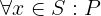
Arguments: At least three arguments: a variable name, a set, and an expression. As usual in TLA+, if the second argument is not a set, the result is undefined. You can also use multiple variables and tuples, see Advanced syntax.
Apalache type: The formal type of this operator is a bit complex. Hence, we give an informal description:
xhas the typea, for some typea,Shas the typeSet(a),Phas the typeBool,- the expression
\A x \in S: Phas the typeBool.
Effect: This operator evaluates to a Boolean value. We explain semantics only for a single variable:
\A x \in S: Pevaluates toTRUE, if for every elementeofS, the expressionPevaluates toTRUEagainst the binding[x |-> e].- Conversely,
\A x \in S: Pevaluates toFALSE, if there exists an elementeofSthat makes the expressionPevaluate toFALSEagainst the binding[x |-> e].
Importantly, when S = {}, the expression \A x \in S: P evaluates to
TRUE, independently of what is written in P. Likewise, when {x \in S: P} = {}, the expression \A x \in S: P evaluates to TRUE.
Determinism: Deterministic.
Errors: Pure TLA+ does not restrict the operator arguments. TLC flags a
model checking error, if S is infinite. Apalache produces a static type
error, if the type of elements of S is not compatible with the type
of x that is expected in the predicate P.
Advanced syntax: Instead of a single variable x, you can use the tuple
syntax to unpack variables from a Cartesian product, see Tuples.
For instance, one can write \A <<x, y>> \in S: P. In this case, for every
element e of S, the variable x is bound to e[1] and y is bound to
e[2]. The predicate P is evaluated against this binding.
Moreover, instead of introducing one variable, one can quantify over several
sets. For instance, you can write: \A x \in S, y \in T: P. This form is
simply syntax sugar for the form with nested quantifiers: \A x \in S: \A y \in T: P. Similarly, \A x, y \in S: P is syntax sugar for
\A x \in S: \A y \in S: P.
Example in TLA+:
\A x \in {1, 2, 3, 4}:
x > 0
\* TRUE
\A x \in {1, 2, 3, 4}:
x > 2
\* FALSE
\* check the section on tuples to understand the following syntax
\A <<x, y>> \in { 1, 2 } \X { 3, 4 }:
x < y
\* TRUE
Example in Python: Python conveniently offers us a concise syntax:
>>> S = {1, 2, 3, 4}
>>> all(x > 0 for x in S)
True
>>> all(x > 2 for x in S)
False
>>> T2 = {(x, y) for x in [1, 2] for y in [3, 4]}
>>> all(x < y for (x, y) in T2)
True
Bounded existential quantifier
Notation: \E x \in S: P
LaTeX notation: 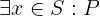
Arguments: At least three arguments: a variable name, a set, and an expression. As usual in TLA+, if the second argument is not a set, the result is undefined.You can also use multiple variables and tuples, see Advanced syntax.
Apalache type: The formal type of this operator is a bit complex. Hence, we give an informal description:
xhas the typea, for some typea,Shas the typeSet(a),Phas the typeBool,- the expression
\E x \in S: Phas the typeBool.
Effect: This operator evaluates to a Boolean value. We explain semantics only for a single variable:
\E x \in S: Pevaluates toTRUE, if there is an elementeofSthat makes the expressionPevaluate toTRUEagainst the binding[x |-> e].- Conversely,
\E x \in S: Pevaluates toFALSE, if for all elementseofS, the expressionPevaluate toFALSEagainst the binding[x |-> e].
Importantly, when S = {}, the expression \E x \ in S: P evaluates to
FALSE, independently of what is written in P. Likewise, when {x \in S: P} = {}, the expression \E x \ in S: P evaluates to FALSE.
As you probably have noticed, \E x \in S: P is equivalent to ~(\A x \in S: ~P), and \A x \in S: P is equivalent to ~(\E x \in S: ~P). This is called
duality in logic. But take care! If \E x \in S: P may act as a
non-deterministic assignment, duality does not work anymore! See Control
Flow and Non-determinism.
Determinism: Deterministic when P contains no action operators (including
the prime operator '). For the non-deterministic case, see Control Flow and
Non-determinism.
Errors: Pure TLA+ does not restrict the operator arguments. TLC flags a
model checking error, if S is infinite. Apalache produces a static type
error, if the type of elements of S is not compatible in the context of P
when an element of S is bound to x.
Advanced syntax: Instead of a single variable x, you can use the tuple
syntax to unpack variables from a Cartesian product, see Tuples.
For instance, one can write \E <<x, y>> \in S: P. In this case, for every
element e of S, the variable x is bound to e[1] and y is bound to
e[2]. The predicate P is evaluated against this binding.
Moreover, instead of introducing one variable, one can quantify over several
sets. For instance, you can write: \E x \in S, y \in T: P. This form is
simply syntax sugar for the form with nested quantifiers: \E x \in S: \E y \in T: P. Similarly, \E x, y \in S: P is syntax sugar for \E x \in S: \E y \in S: P.
Example in TLA+:
\E x \in {1, 2, 3, 4}:
x > 0
\* TRUE
\E x \in {1, 2, 3, 4}:
x > 2
\* TRUE
\* check the section on tuples to understand the following syntax
\E <<x, y>> \in { 1, 2 } \X { 3, 4 }:
x < y
\* TRUE
Example in Python: Python conveniently offers us a concise syntax:
>>> S = {1, 2, 3, 4}
>>> any(x > 0 for x in S)
True
>>> any(x > 2 for x in S)
True
>>> T2 = {(x, y) for x in [1, 2] for y in [3, 4]}
>>> any(x < y for (x, y) in T2)
True
Equality
A foundational operator in TLA+
Notation: e_1 = e_2
LaTeX notation: 
Arguments: Two arguments.
Apalache type: (a, a) => Bool, for some type a.
Effect: This operator evaluates to a Boolean value. It tests the values
of e_1 and e_2 for structural equality. The exact effect depends on the
values of e_1 and e_2. Let e_1 and e_2 evaluate to the values
v_1 and v_2. Then e_1 = e_2 evaluates to:
-
If
v_1andv_2are Booleans, thene_1 = e_2evaluates tov_1 <=> v_2. -
If
v_1andv_2are integers, thene_1 = e_2evaluates toTRUEif and only ifv_1andv_2are exactly the same integers. -
If
v_1andv_2are strings, thene_1 = e_2evaluates toTRUEif and only ifv_1andv_2are exactly the same strings. -
If
v_1andv_2are sets, thene_1 = e_2evaluates toTRUEif and only if the following expression evaluates toTRUE:v_1 \subseteq v_2 /\ v_2 \subseteq v_1 -
If
v_1andv_2are functions, tuples, records, or sequences, thene_1 = e_2evaluates toTRUEif and only if the following expression evaluates toTRUE:DOMAIN v_1 = DOMAIN v_2 /\ \A x \in DOMAIN v_1: v_1[x] = v_2[x] -
In other cases,
e_1 = e_2evaluates toFALSEif the values have comparable types. -
TLC and Apalache report an error, if the values have incomparable types.
Determinism: Deterministic, unless e_1 has the form x', which can be
interpreted as an assignment to the variable x'. For the non-deterministic
case, see Control Flow and Non-determinism.
Errors: Pure TLA+ does not restrict the operator arguments. TLC flags a
model checking error, if e_1 and e_2 evaluate to incomparable values.
Apalache produces a static type error, if the types of e_1 and e_2 do not
match.
Example in TLA+:
FALSE = FALSE \* TRUE
FALSE = TRUE \* FALSE
10 = 20 \* FALSE
15 = 15 \* TRUE
"Hello" = "world" \* FALSE
"Hello" = "hello" \* FALSE
"Bob" = "Bob" \* TRUE
{ 1, 2 } = { 2, 3} \* FALSE
{ 1, 2 } = { 2, 1} \* TRUE
{ 1 } \ { 1 } = { "a" } \ { "a" } \* TRUE in pure TLA+ and TLC,
\* type error in Apalache
{ { 1, 2 } } = { { 1, 2, 2, 2 } } \* TRUE
<<1, "a">> = <<1, "a">> \* TRUE
<<1, "a">> = <<1, "b">> \* FALSE
<<1, FALSE>> = <<2>> \* FALSE in pure TLA+ and TLC,
\* type error in Apalache
<<1, 2>> = <<1, 2, 3>> \* FALSE in pure TLA+ and TLC,
\* FALSE in Apalache, when both values
\* are treated as sequences
[ a |-> 1, b |-> 3 ] = [ a |-> 1, b |-> 3 ] \* TRUE
[ a |-> 1, b |-> 3 ] = [ a |-> 1 ] \* FALSE
[ x \in 2..2 |-> x + x ] = [ x \in {2} |-> 2 * x ] \* TRUE
[ x \in 2..3 |-> x + x ] = [ x \in {2, 3} |-> 2 * x ] \* TRUE
Example in Python: The standard data structures also implement
structural equality in Python, though we have to be careful to
use == instead of =:
>>> False == False
True
>>> False == True
False
>>> 10 == 20
False
>>> 15 == 15
True
>>> "Hello" == "world"
False
>>> "Hello" == "hello"
False
>>> "Bob" == "Bob"
True
>>> { 1, 2 } == { 2, 3 }
False
>>> { 1, 2 } == { 2, 1 }
True
>>> { 1 } - { 1 } == { "a" } - { "a" }
True
>>> { frozenset({ 1, 2 }) } == { frozenset({ 1, 2, 2, 2 }) }
True
>>> (1, "a") == (1, "a")
True
>>> (1, "a") == (1, "b")
False
>>> (1, False) == (2, )
False
>>> (1, 2) == (1, 2, 3)
False
>>> { "a": 1, "b": 3 } == { "a": 1, "b": 3 }
True
>>> { "a": 1, "b": 3 } == { "a": 1 }
False
>>> { x: (x + x) for x in { 2 } } == { x: (x * x) for x in { 2 } }
True
>>> { x: (x + x) for x in { 2, 3 } } == { x: 2 * x for x in { 2, 3 } }
True
Inequality
Notation: e_1 /= e_2 or e_1 # e_2
LaTeX notation: 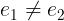
Arguments: Two arguments.
Apalache type: (a, a) => Bool, for some type a.
Effect: This operator is syntax sugar for ~(e_1 = e_2). Full stop.
Bounded Choice
This operator causes a lot of confusion. Read carefully!
Notation: CHOOSE x \in S: P
LaTeX notation: 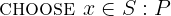
Arguments: Three arguments: a variable name, a set, and an expression.
Apalache type: The formal type of this operator is a bit complex. Hence, we give an informal description:
xhas the typea, for some typea,Shas the typeSet(a),Phas the typeBool,- the expression
CHOOSE x \in S: Phas the typea.
Effect: This operator implements a black-box algorithm that somehow picks
one element from the set {x \in S: P}. Is it an algorithm? Yes! CHOOSE x \in S: P is deterministic. When you give it two equal sets and two equivalent
predicates, CHOOSE produces the same value. Formally, the only known property
of CHOOSE is as follows (which is slightly more general than what we wrote
above):
{x \in S: P} = {y \in T: Q} =>
(CHOOSE x \in S: P) = (CHOOSE y \in T: Q)
Importantly, when {x \in S: P} = {}, the expression CHOOSE x \ in S: P
evaluates to an undefined value.
How does CHOOSE actually work? TLA+ does not fix an algorithm for CHOOSE by
design. Maybe it returns the first element of the set? Sets are not ordered, so
there is no first element.
Why should you use CHOOSE? Actually, you should not. Unless you have no other
choice 🎀
There are two common use cases, where the use of CHOOSE is well justified:
-
Use case 1: Retrieving the only element of a singleton set. If you know that
Cardinality({x \in S: P}) = 1, thenCHOOSE x \in S: Preturns the only element of{x \in S: P}. No magic. For instance, see: Min and Max in FiniteSetsExt. -
Use case 2: Enumerating set elements in a fixed but unknown order. For instance, see: ReduceSet in FiniteSetsExt.
In other cases, we believe that CHOOSE is bound to do Program synthesis.
So TLC does some form of synthesis by brute force when it has to evaluate
CHOOSE.
Determinism: Deterministic. Very much deterministic. Don't try to model
non-determinism with CHOOSE. For non-determinism, see:
Control Flow and Non-determinism.
Apalache picks a set element that satisfies the predicate P, but it does not
guarantee the repeatability property of CHOOSE. It does not guarantee
non-determinism either. Interestingly, this behavior does not really make a
difference for the use cases 1 and 2. If you believe that this causes a problem
in your specification, open an issue...
Errors: Pure TLA+ does not restrict the operator arguments. TLC flags a
model checking error, if S is infinite. Apalache produces a static type
error, if the type of elements of S is not compatible with the type of x
as expected in P.
Example in TLA+:
CHOOSE x \in 1..3: x >= 3
\* 3
CHOOSE x \in 1..3:
\A y \in 1..3: y >= x
\* 1, the minimum
CHOOSE f \in [ 1..10 -> BOOLEAN ]:
\E x, y \in DOMAIN f:
f[x] /\ ~f[y]
\* some Boolean function from 1..10 that covers FALSE and TRUE
Example in Python: Python does not have anything similar to CHOOSE.
The closest possible solution is to sort the filtered set by the string values
and pick the first one (or the last one). So we have introduced a particular
way of implementing CHOOSE, see choose.py:
# A fixed implementation of CHOOSE x \in S: TRUE
# that sorts the set by the string representation and picks the head
def choose(s):
lst = sorted([(str(e), e) for e in s], key=(lambda pair: pair[0]))
(_, e) = lst[0]
return e
if __name__ == "__main__":
s = { 1, 2, 3}
print("CHOOSE {} = {}".format(s, choose(s)))
s2 = { frozenset({1}), frozenset({2}), frozenset({3})}
print("CHOOSE {} = {}".format(s2, choose(s2)))
Unbounded universal quantifier
Notation: \A x: P
LaTeX notation: 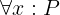
Arguments: At least two arguments: a variable name and an expression.
Effect: This operator evaluates to a Boolean value. It evaluates to TRUE,
when every element in the logical universe makes the expression P evaluate to
TRUE against the binding [x |-> e]. More precisely, we have to consider
only the elements that produced a defined result when evaluating P.
Neither TLC, nor Apalache support this operator. It is impossible to give operational semantics for this operator, unless we explicitly introduce the universe. It requires a first-order logic solver. This operator may be useful when writing proofs with TLAPS.
Unbounded existential quantifier
Notation: \E x: P
LaTeX notation: 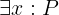
Arguments: At least two arguments: a variable name and an expression.
Effect: This operator evaluates to a Boolean value. It evaluates to TRUE,
when at least one element in the logical universe makes the expression P
evaluate to TRUE against the binding [x |-> e]. More precisely, we have to
consider only the elements that produced a defined result when evaluating P.
Neither TLC, nor Apalache support this operator. It is impossible to give operational semantics for this operator, unless we explicitly introduce the universe. It requires a first-order logic solver. This operator may be useful when writing proofs with TLAPS.
Unbounded CHOOSE
Notation: CHOOSE x: P
LaTeX notation: CHOOSE x: P
Arguments: At least two arguments: a variable name and an expression.
Effect: This operator evaluates to some value v in the logical universe
that evaluates P to TRUE against the binding [x |-> v].
Neither TLC, nor Apalache support this operator. It is impossible to give operational semantics for this operator, unless we explicitly introduce the universe and introduce a fixed rule for enumerating its elements.
Congratulations! You have reached the bottom of this page. If you want to learn
more about unbounded CHOOSE, read Section 16.1.2 of Specifying Systems.
Functions
Contributors: @konnov, @shonfeder, @Kukovec, @Alexander-N
Functions are probably the second most used TLA+ data structure after sets. TLA+
functions are not like functions in programming languages. In programming
languages, functions contain code that calls other functions. Although it is
technically possible to use functions when constructing a function in TLA+,
functions are more often used like tables or dictionaries: they are simple maps from a set of inputs to a set of outputs. For instance, in
Two-phase commit, the function rmState stores the transaction state for
each process:
| argument | rmState[argument] |
|---|---|
| "process1" | "working" |
| "process2" | "aborted" |
| "process3" | "prepared" |
In the above table, the first column is the value of the function argument, while the second column is the function result. An important property of this table is that no value appears in the first column more than once, so every argument value is assigned at most one result value.
Importantly, every function is defined in terms of the set of arguments over which it is
defined. This set is called the function's domain. There is even a special
operator DOMAIN f, which returns the domain of a function f.
In contrast to TLA+ operators, TLA+ functions are proper values, so they can be used as values in more complex data structures.
Construction. Typically, the predicate Init constructs a function that
maps all elements of its domain to a default value.
In the example below we map the set { "process1", "process2", "process3" }
to the value "working":
Init ==
rmState = [ p \in { "process1", "process2", "process3" } |-> "working" ]
In general, we can construct a function by giving an expression that shows us how to map every argument to the result:
[ fahrenheit \in Int |-> (fahrenheit - 32) * 5 \div 9 ]
Note that this function effectively defines an infinite table, as the set Int
is infinite. Both TLC and Apalache would give up on a function with an infinite
domain. (Though in the above example, it is obvious that we could treat the
function symbolically, without enumerating all of its elements.)
Another way to construct a function is to non-deterministically pick one
from a set of functions by using the function set constructor, ->. E.g.:
Init ==
\E f \in [ { "process1", "process2", "process3" } ->
{ "working", "prepared", "committed", "aborted" } ]:
rmState = f
In the above example we are not talking about one function that is somehow
initialized "by default". Rather, we say that rmState can be set to an
arbitrary function that receives arguments from the set { "process1", "process2", "process3" } and returns values that belong to the set { "working", "prepared", "committed", "aborted" }. As a result, TLC has to
enumerate all possible functions that match this constraint. On the contrary,
Apalache introduces one instance of a function and restricts it with the
symbolic constraints. So it efficiently considers all possible functions
without enumerating them. However, this trick only works with existential
quantifiers. If you use a universal quantifier over a set of functions,
both TLC and Apalache unfold this set.
Immutability. As you can see, TLA+ functions are similar to dictionaries in Python and maps in Java rather than to normal functions in programming languages. However, TLA+ functions are immutable. Hence, they are even closer to immutable maps in Scala. As in the case of sets, you do not need to define hash or equality, in order to use functions.
If you want to update a function, you have to produce another function and
describe how it is different from the original function. Luckily, TLA+ provides
you with operators for describing these updates in a compact way: By using the
function constructor (above) along with EXCEPT. For instance, to produce a
new function from rmState, we write the following:
[ rmState EXCEPT !["process3"] = "committed" ]
This new function is like rmState, except that it returns "committed"
on the argument "process3":
"process1", "working"
"process2", "aborted"
"process3", "committed"
Importantly, you cannot extend the function domain by using EXCEPT.
For instance, the following expression produces the function that is
equivalent to rmState:
[ rmState EXCEPT !["process10"] = "working" ]
Types. In pure TLA+, functions are free to mix values of different types in their domains. See the example below:
[ x \in { 0, "FALSE", FALSE, 1, "TRUE", TRUE } |->
IF x \in { 1, "TRUE", TRUE}
THEN TRUE
ELSE FALSE
]
TLA+ functions are also free to return any kinds of values:
[ x \in { 0, "FALSE", FALSE, 1, "TRUE", TRUE } |->
CASE x = 0 -> 1
[] x = 1 -> 0
[] x = "FALSE" -> "TRUE"
[] x = "TRUE" -> "FALSE"
[] x = FALSE -> TRUE
OTHER -> FALSE
]
As in the case of sets, TLC restricts function domains to comparable values. See Section 14.7.2 of Specifying Systems. So, TLC rejects the two examples that are given above.
However, functions in TLC are free to return different kinds of values:
[ x \in { 1, 2 } |->
IF x = 1 THEN FALSE ELSE 3 ]
This is why, in pure TLA+ and TLC, records, tuples, and sequences are just functions over particular domains (finite sets of strings and finite sets of integers).
Apalache enforces stricter types. It has designated types for all four
data structures: general functions, records, tuples, and sequences.
Moreover, all elements of the function domain must have the same type.
The same is true for the codomain. That is, general functions have the
type a -> b for some types a and b. This is enforced
by the type checker.
In this sense, the type restrictions of Apalache are similar to those for the generic collections of Java and Scala. As a result, the type checker in Apalache rejects the three above examples.
TLA+ functions and Python dictionaries. As we mentioned before, TLA+
functions are similar to maps and dictionaries in programming languages. To
demonstrate this similarity, let us compare TLA+ functions with Python
dictionaries. Consider a TLA+ function price that is defined as follows:
[ meal \in { "Schnitzel", "Gulash", "Cordon bleu" } |->
CASE meal = "Schnitzel" -> 18
[] meal = "Gulash" -> 11
[] meal = "Cordon bleu" -> 12
]
If we had to define a similar dictionary in Python, we would normally introduce a Python dictionary like follows:
py_price = { "Schnitzel": 18, "Gulash": 11, "Cordon bleu": 12 }
As long as we are using the variable py_price to access the dictionary, our
approach works. For instance, we can type the following in the python shell:
# similar to DOMAIN price in TLA+
py_price.keys()
In the above example, we used py_price.keys(), which produces a view of the
mutable dictionary's keys. In TLA+, DOMAIN returns a set. If we want to
faithfully model the effect of DOMAIN, then we have to produce an immutable
set. We use
frozenset,
which is a less famous cousin of the python set. A frozen set can be
inserted into another set, in contrast to the standard (mutable) set.
>>> py_price = { "Schnitzel": 18, "Gulash": 11, "Cordon bleu": 12 }
>>> frozenset(py_price.keys()) == frozenset({'Schnitzel', 'Gulash', 'Cordon bleu'})
True
We can also apply our python dictionary similar to the TLA+ function price:
>>> # similar to price["Schnitzel"] in TLA+
>>> py_price["Schnitzel"]
18
However, there is a catch! What if you like to put the function price in a
set? In TLA+, this is easy: Simply construct the singleton set that contains
the function price.
# TLA+: wrapping a function with a set
{ price }
Unfortunately, this does not work as easy in Python:
>>> py_price = { "Schnitzel": 18, "Gulash": 11, "Cordon bleu": 12 }
>>> # python expects hashable and immutable data structures inside sets
>>> frozenset({py_price})
Traceback (most recent call last):
File "<stdin>", line 1, in <module>
TypeError: unhashable type: 'dict'
Of course, this is an implementation detail of Python and it has nothing to do with TLA+. This example probably demonstrates that the built-in primitives of TLA+ are more powerful than the standard primitives of many programming languages (see this discussion).
Alternatively, we could represent a TLA+ function in Python as a set
of pairs (key, value) and implement TLA+ function operators over such a
set. Surely, this implementation would be inefficient, but this is not
an issue for a specification language such as TLA+. For instance:
>>> py_price = { "Schnitzel": 18, "Gulash": 11, "Cordon bleu": 12 }
>>> { tuple(py_price.items()) }
{(('Schnitzel', 18), ('Gulash', 11), ('Cordon bleu', 12))}
If we try to implement TLA+-like operators over this data structure, things will get complicated very quickly. For this reason, we are just using mutable dictionaries in the Python examples in the rest of this text.
Operators
Function constructor
Notation: [ x \in S |-> e ] or [ x \in S, y \in T |-> e ], or more
arguments
LaTeX notation: 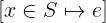
Arguments: At least three arguments: a variable name (or a tuple of names, see Advanced syntax), a set, and a mapping expression. Instead of one variable and one set, you can use multiple variables and multiple sets.
Apalache type: The formal type of this operator is a bit complex. Hence, we give an informal description:
xhas the typea, for some typea,Shas the typeSet(a),ehas the typeb, for some typeb,- the expression
[ x \in S |-> e ]has the typea -> b.
Effect: We give the semantics for one argument. We write a sequence of
steps to ease the understanding. This operator constructs a function f over
the domain S as follows. For every element elem of S, do the following:
- Bind the element
elemto variablex, - Compute the value of
eunder the binding[x |-> elem]and store it in a temporary variable calledresult. - Set
f[elem]toresult.
Of course, the semantics of the function constructor in Specifying Systems does not require us to compute the function at all. We believe that our description helps you to see that there is a way to compute this data structure, though in a very straightforward and inefficient way.
If the function constructor introduces multiple variables, then the constructed function maps a tuple to a value. See Example.
Determinism: Deterministic.
Errors: Pure TLA+ does not restrict the function domain and the mapping expression. They can be any combination of TLA+ values: Booleans, integers, strings, sets, functions, etc.
TLC accepts function domains of comparable values. For instance, two integers are comparable, but an integer and a set are not comparable. See Section 14.7.2 of Specifying Systems.
Apalache goes further: It requires the function domain to be well-typed (as a
set), and it requires the mapping expression e to be well-typed. If this
is not the case, the type checker flags an error.
Advanced syntax: Instead of a single variable x, one can use the tuple
syntax to unpack variables from a Cartesian product, see Tuples.
For instance, one can write [ <<x, y>> \in S |-> x + y ]. In this case, for
every element e of S, the variable x is bound to e[1] and y is bound
to e[2]. The function constructor maps the tuples from S to the values
that are computed under such a binding.
Example in TLA+:
[ x \in 1..3 |-> 2 * x ] \* a function that maps 1, 2, 3 to 2, 4, 6
[ x, y \in 1..3 |-> x * y ]
\* a function that maps <<1, 1>>, <<1, 2>>, <<1, 3>>, ..., <<2, 3>>, <<3, 3>>
\* to 1, 2, 3, ..., 6, 9
[ <<x, y>> \in (1..3) \X (4..6) |-> x + y ]
\* a function that maps <<1, 4>>, <<1, 5>>, <<1, 6>>, ..., <<2, 6>>, <<3, 6>>
\* to 5, 6, 7, ..., 8, 9
[ n \in 1..3 |->
[ i \in 1..n |-> n + i ]]
\* a function that maps a number n from 1 to 3
\* to a function from 1..n to n + i. Like an array of arrays.
Example in Python:
In the following code, we write range(m, n) instead of frozenset(range(m, n)) to simplify the presentation and produce idiomatic Python code. In the
general case, we have to iterate over a set, as the type and structure of the
function domain is not known in advance.
>>> # TLA: [ x \in 1..3 |-> 2 * x ]
>>> {x: 2 * x for x in range(1, 4)}
{1: 2, 2: 4, 3: 6}
>>> # TLA: [ x, y \in 1..3 |-> x * y ]
>>> {(x, y): x * y for x in range(1, 4) for y in range(1, 4)}
{(1, 1): 1, (1, 2): 2, (1, 3): 3, (2, 1): 2, (2, 2): 4, (2, 3): 6, (3, 1): 3, (3, 2): 6, (3, 3): 9}
>>> # TLA: [ <<x, y>> \in (1..3) \X (4..6) |-> x + y ]
>>> xy = {(x, y) for x in range(1, 4) for y in range(4, 7)}
>>> {(x, y): x + y for (x, y) in xy}
{(2, 4): 6, (3, 4): 7, (1, 5): 6, (1, 4): 5, (2, 6): 8, (3, 6): 9, (1, 6): 7, (2, 5): 7, (3, 5): 8}
>>> # TLA: [ n \in 1..3 |->
>>> # [ i \in 1..n |-> n + i ]]
>>> {
... n: {i: n + i for i in range(1, n + 1)}
... for n in range(1, 4)
... }
{1: {1: 2}, 2: {1: 3, 2: 4}, 3: {1: 4, 2: 5, 3: 6}}
Function set constructor
Notation: [ S -> T ]
LaTeX notation: 
Arguments: Two arguments. Both have to be sets. Otherwise, the result is undefined.
Apalache type: (Set(a), Set(b)) => Set(a -> b), for some types a and b.
Effect: This operator constructs the set of all possible functions that
have S as their domain, and for each argument x \in S return a value y \in T.
Note that if one of the sets is infinite, then the set [S -> T] is infinite
too. TLC flags an error, if S or T are infinite. Apalache flags an error,
if S is infinite, but when it does not have to explicitly construct [S -> T], it may accept infinite T. For instance:
\E f \in [ 1..3 -> 4..6]:
...
Determinism: Deterministic.
Errors: In pure TLA+, if S and T are not sets, then [S -> T]
is undefined. If either S or T is not a set, TLC flags a model checking error.
Apalache flags a static type error.
Example in TLA+:
[ 1..3 -> 1..100 ]
\* the set of functions that map 1, 2, 3 to values from 1 to 100
[ Int -> BOOLEAN ]
\* The infinite set of functions that map every integer to a Boolean.
\* Error in TLC.
Example in Python: We do not give here the code that enumerates all
functions. It should be similar in spirit to subset.py,
but it should enumerate strings over the alphabet of 0..(Cardinality(T) - 1)
values, rather than over the alphabet of 2 values.
Function application
Notation: f[e] or f[e_1, ..., e_n]
LaTeX notation: f[e] or f[e_1, ..., e_n]
Arguments: At least two arguments. The first one should be a function,
the other arguments are the arguments to the function. Several arguments
are treated as a tuple. For instance, f[e_1, ..., e_n] is shorthand for
f[<<e_1, ..., e_n>>].
Apalache type: In the single-index case, the type is
((a -> b), a) => b, for some types a and b. In the multi-index case,
the type is ((<<a_1, ..., a_n>> -> b), a_1, ..., a_n) => b.
Effect: This operator is evaluated as follows:
- If
e \in DOMAIN f, thenf[e]evaluates to the value that functionfassociates with the value ofe. - If
e \notin DOMAIN f, then the value is undefined.
Determinism: Deterministic.
Errors: When e \notin DOMAIN f, TLC flags a model checking error.
When e has a type incompatible with the type of DOMAIN f, Apalache flags
a type error. When e \notin DOMAIN f, Apalache assigns some type-compatible
value to f[e], but does not report any error. This is not a bug in Apalache,
but a feature of the SMT encoding. Usually, an illegal access surfaces
somewhere, when checking a specification. If you want to detect an access
outside of the function domain, instrument your code with an additional state
variable.
Example in TLA+:
[x \in 1..10 |-> x * x][5] \* 25
[x \in 1..3, y \in 1..3 |-> x * y][2, 2]
\* Result = 4. Accessing a two-dimensional matrix by a pair
[ n \in 1..3 |->
[ i \in 1..n |-> n + i ]][3][2]
\* The first access returns a function, the second access returns 5.
[x \in 1..10 |-> x * x][100] \* model checking error in TLC,
\* Apalache produces some value
Example in Python:
In the following code, we write range(m, n) instead of frozenset(range(m, n)) to simplify the presentation and produce idiomatic Python code. In the
general case, we have to iterate over a set, as the type and structure of the
function domain is not known in advance.
>>> # TLA: [x \in 1..10 |-> x * x][5]
>>> {x: x * x for x in range(1, 11)}[5]
25
>>> # TLA: [x, y \in 1..3 |-> x * y][2, 2]
>>> {(x, y): x * y for x in range(1, 4) for y in range(1, 4)}[(2, 2)]
4
>>> # TLA: [ n \in 1..3 |-> [ i \in 1..n |-> n + i ]][3][2]
>>> {n: {i: n + i for i in range(1, n + 1)} for n in range(1, 4)}[3][2]
5
Function replacement
Notation: [f EXCEPT ![a_1] = e_1, ..., ![a_n] = e_n]
LaTeX notation: [f EXCEPT ![a_1] = e_1, ..., ![a_n] = e_n]
Arguments: At least three arguments. The first one should be a function, the other arguments are interleaved pairs of argument expressions and value expressions.
Apalache type: In the case of a single-point update, the type is simple:
(a -> b, a, b) => (a -> b), for some types a and b. In the general case,
the type is: (a -> b, a, b, ..., a, b) => (a -> b).
Effect: This operator evaluates to a new function g that is constructed
as follows:
- Set the domain of
gtoDOMAIN f. - For every element
b \in DOMAIN f, do:- If
b = a_ifor somei \in 1..n, then setg[b]toe_i. - If
b \notin { a_1, ..., a_n }, then setg[b]tof[b].
- If
Importantly, g is a new function: the function f is not modified!
Determinism: Deterministic.
Errors: When a_i \notin DOMAIN f for some i \in 1..n,
TLC flags a model checking error.
When a_1, ..., a_n are not type-compatible with the type of DOMAIN f,
Apalache flags a type error. When a_i \notin DOMAIN f, Apalache ignores this
argument. This is consistent with the semantics of TLA+ in Specifying Systems.
Advanced syntax: There are three extensions to the basic syntax.
Extension 1. If the domain elements of a function f are tuples, then, similar to
function application, the expressions a_1, ..., a_n can be written without
the tuple braces <<...>>. For example:
[ f EXCEPT ![1, 2] = e ]
In the above example, the element f[<<1, 2>>] is replaced with e.
As you can see, this is just syntax sugar.
Extension 2. The operator EXCEPT introduces an implicit alias @
that refers to the element f[a_i] that is going to be replaced:
[ f EXCEPT ![1] = @ + 1, ![2] = @ + 3 ]
In the above example, the element f[1] is replaced with f[1] + 1, whereas
the element f[2] is replaced with f[2] + 3.
This is also syntax sugar.
Extension 3. The advanced syntax of EXCEPT allows for chained replacements.
For example:
[ f EXCEPT ![a_1][a_2]...[a_n] = e ]
This is syntax sugar for:
[ f EXCEPT ![a_1] =
[ @ EXCEPT ![a_2] =
...
[ @ EXCEPT ![a_n] = e ]]]
Example in TLA+:
LET f1 == [ p \in 1..3 |-> "working" ] IN
[ f1 EXCEPT ![2] = "aborted" ]
\* a new function that maps: 1 to "working", 2 to "aborted", 3 to "working"
LET f2 == [x \in 1..3, y \in 1..3 |-> x * y] IN
[ f2 EXCEPT ![1, 1] = 0 ]
\* a new function that maps:
\* <<1, 1>> to 0, and <<x, y>> to x * y when `x /= 0` or `y /= 0`
LET f3 == [ n \in 1..3 |-> [ i \in 1..n |-> n + i ]] IN
[ f3 EXCEPT ![2][2] = 100 ]
\* a new function that maps:
\* 1 to the function that maps: 1 to 2
\* 2 to the function that maps: 1 to 3, 2 to 100
\* 3 to the function that maps: 1 to 4, 2 to 5, 3 to 6
Example in Python:
In the following code, we write range(m, n) instead of frozenset(range(m, n)) to simplify the presentation and produce idiomatic Python code. In the
general case, we have to iterate over a set, as the type and structure of the
function domain is not known in advance. Additionally, given a Python
dictionary f, we write f.items() to quickly iterate over the pairs of keys
and values. Had we wanted to follow the TLA+ semantics more precisely, we would
have to enumerate over the keys in the function domain and apply the function to
each key, in order to obtain the value that is associated with the key. This
code would be less efficient than the idiomatic Python code.
>>> # TLA: LET f1 == [ p \in 1..3 |-> "working" ] IN
>>> f1 = {i: "working" for i in range(1, 4)}
>>> f1
{1: 'working', 2: 'working', 3: 'working'}
>>> # TLA: [ f1 EXCEPT ![2] = "aborted" ]
>>> g1 = {i: status if i != 2 else "aborted" for i, status in f1.items()}
>>> g1
{1: 'working', 2: 'aborted', 3: 'working'}
>>> # TLA: LET f2 == [x, y \in 1..3 |-> x * y] IN
>>> f2 = {(x, y): x * y for x in range(1, 4) for y in range(1, 4)}
>>> # TLA: [ f2 EXCEPT ![1, 1] = 0
>>> g2 = {k: v if k != (1, 1) else 0 for k, v in f2.items()}
>>> g2
{(1, 1): 0, (1, 2): 2, (1, 3): 3, (2, 1): 2, (2, 2): 4, (2, 3): 6, (3, 1): 3, (3, 2): 6, (3, 3): 9}
>>> # TLA: [ n \in 1..3 |-> [ i \in 1..n |-> n + i ]]
>>> f3 = {n: {i: n + i for i in range(1, n + 1)} for n in range(4)}
>>> # TLA: [ f3 EXCEPT ![2][2] = 100 ]
>>> g3 = f3.copy()
>>> g3[2][2] = 100
>>> g3
{0: {}, 1: {1: 2}, 2: {1: 3, 2: 100}, 3: {1: 4, 2: 5, 3: 6}}
Function domain
Notation: DOMAIN f
LaTeX notation: DOMAIN f
Arguments: One argument, which should be a function (respectively, a record, tuple, sequence).
Apalache type: (a -> b) => Set(a).
Effect: DOMAIN f returns the set of values, on which the function
has been defined, see: Function constructor and Function set constructor.
Determinism: Deterministic.
Errors: In pure TLA+, the result is undefined, if f is not a function
(respectively, a record, tuple, or sequence). TLC flags a model checking error
if f is a value that does not have a domain. Apalache flags a type checking
error.
Example in TLA+:
LET f == [ x \in 1..3 |-> 2 * x ] IN
DOMAIN f \* { 1, 2, 3 }
Example in Python:
In the following code, we write range(m, n) instead of frozenset(range(m, n)) to simplify the presentation and produce idiomatic Python code. In the
general case, we have to iterate over a set, as the type and structure of the
function domain is not known in advance.
>>> f = {x: 2 * x for x in range(1, 4)}
>>> f.keys()
dict_keys([1, 2, 3])
In the above code, we write f.keys() to obtain an iterable over the
dictionary keys, which can be used in a further python code. In a more
principled approach that follows the semantics of TLA+, we would have to
produce a set, that is to write:
frozenset(f.keys())
Records
Records in TLA+ are special kinds of functions that have the following properties:
- The domain of a record contains only strings.
- The domain of a record is finite.
That is it in pure TLA+. Essentially, TLA+ is following the duck-typing principle for records: Any function over strings can be also treated as a record, and vice versa, a record is also a function. So you can use all function operators on records too.
Construction. TLA+ provides you with a convenient syntax for constructing
records. For instance, the following example shows how to construct a record
that has two fields: Field "a" is assigned value 2, and field "b" is
assigned value TRUE.
[ a |-> 2, b |-> TRUE ]
Similar to the function set [S -> T], there is a record set constructor:
[ name: { "Alice", "Bob" }, year_of_birth: 1900..2000 ]
The expression in the above example constructs a set of records that have: the
name field set to either "Alice" or "Bob", and the year_of_birth field set
to an integer from 1900 to 2000.
Application. TLA+ provides you with a shorthand operator for accessing a record field by following C-style struct-member notation. For example:
r.myField
This is essentially syntax sugar for r["myField"].
Immutability. As records are special kinds of functions, records are immutable.
Types. In contrast to pure TLA+ and TLC, the Apalache model checker distinguishes between general functions and records. When Apalache processes a record constructor, it assigns the record type to the result. This record type carries the information about the names of the record fields and their types. Similarly, Apalache assigns the type of a set of records, when it processes a record set constructor. See the Apalache ADR002 on types.
Owing to the type information, records are translated into SMT more efficiently by Apalache than the general functions.
It is quite common to mix records of different shapes into sets. For instance,
see how the variable msgs is updated in Paxos. To address this pattern,
Apalache treats records that do not disagree on field types to be
type-compatible. For instance, the records [type |-> "A", a |-> 3]
and [type |-> "B", b |-> TRUE] have the joint type:
[type: Str, a: Int, b: Bool]
If your spec tries to access a field on a record without that field, Apalache will fail with the following error:
Access to non-existent record field ...
Operators
In the Python examples, we are using the package frozendict, to produce an immutable dictionary.
Record constructor
Notation: [ field_1 |-> e_1, ..., field_n |-> e_n]
LaTeX notation: 
Arguments: An even number of arguments: field names and field values, interleaved. At least one field is expected. Note that field names are TLA+ identifiers, not strings.
Apalache type: (a_1, ..., a_n) => [field_1: a_1, ..., field_n: a_n], for
some types a_1, ..., a_n.
Effect: The record constructor returns a function r that is constructed
as follows:
- set
DOMAIN rto{ field_1, ..., field_n }, - set
r[field_i]to the value ofe_ifori \in 1..n.
Determinism: Deterministic.
Errors: No errors.
Example in TLA+:
[ name |-> "Printer", port |-> 631 ]
\* A record that has two fields:
\* field "name" that is equal to "Printer", and field "port" that is equal to 631.
>>> { "name": "Printer", "port": 631 }
{'name': 'Printer', 'port': 631}
Record set constructor
Notation: [ field_1: S_1, ..., field_n: S_n]
LaTeX notation: 
Arguments: An even number of arguments: field names and field values, interleaved. At least one field is expected. Note that field names are TLA+ identifiers, not strings.
Apalache type: (Set(a_1), ..., Set(a_n)) => Set([field_1: a_1, ..., field_n: a_n]), for some types a_1, ..., a_n.
Effect: The record set constructor [ field_1: S_1, ..., field_n: S_n]
is syntax sugar for the set comprehension:
{ [ field_1 |-> e_1, ..., field_n |-> e_n]: e_1 \in S_1, ..., e_n \in S_n }
Determinism: Deterministic.
Errors: The arguments S_1, ..., S_n must be sets. If they are not sets,
the result is undefined in pure TLA+. TLC raises a model checking error. Apalache
flags a static type error.
TLC raises a model checking error, whenever one of the sets S_1, ..., S_n is
infinite. Apalache can handle infinite records sets in some cases, when one record
is picked with \E r \in [ field_1: S_1, ..., field_n: S_n].
Example in TLA+:
[ name: { "A", "B", "C" }, port: 1..65535 ]
\* A set of records. Each has two fields:
\* field "name" that has the value from the set { "A", "B", "C" }, and
\* field "port" that has the value from the set 1..65535.
Example in Python: TLA+ functions are immutable, so we are using frozendict:
frozenset({ frozendict({ "name": n, "port": p })
for n in { "A", "B", "C" } for p in range(1, 65535 + 1) })
Access by field name
Notation: r.field_i
LaTeX notation: r.field_i
Arguments: Two arguments: a record and a field name (as an identifier).
Apalache type: [field_1: a_1, ..., field_i: a_i, ..., field_n: a_n]) => a_i, for some types a_1, ..., a_n. Due to the record unification rule, we
usually write this type simply as: [field_i: a_i] => a_i.
Note that r.field_i is just a syntax sugar for r["field_i"] in TLA+.
Hence, if the type of r cannot be inferred, you can see an error message
about Apalache not knowing, whether r is a record, or a function.
Effect: As records are also functions, this operator works as r["field_i"].
Apalache treats records as values of a record type. In comparison to the
general function application r["field"], the operator r.field is handled
much more efficiently in Apalache. Due to the use of types, Apalache can
extract the respective field when translating the access expression into SMT.
Determinism: Deterministic.
Example in TLA+:
LET r == [ name |-> "Printer", port |-> 631 ] IN
r.name \* "Printer"
Example in Python:
>>> r = { "name": "Printer", "port": 631 }
>>> r["name"]
'Printer'
Tuples
Tuples in TLA+ are special kinds of functions that satisfy one of the following properties:
- The domain is either empty, that is,
{}, or - The domain is
1..nfor somen > 0.
That is right. You can construct the empty tuple <<>> in TLA+ as well as a
single-element tuple, e.g., <<1>>. You can also construct pairs, triples, an
so on, e.g., <<1, TRUE>>, <<"Hello", "world", 2020>>. If you think that
empty tuples do not make sense: In TLA+, there is no difference between tuples
and sequences. Again, it is duck typing: Any function with
the domain 1..n can be also treated as a tuple (or a sequence!), and vice
versa, tuples and sequences are also functions. So you can use all function
operators on tuples.
Importantly, the domain of a nonempty tuple is 1..n for some n > 0. So tuples never
have a 0th element. For instance, <<1, 2>>[1] gives us 1, whereas <<1, 2>>[2] gives us 2.
Construction. TLA+ provides you with a convenient syntax for constructing
tuples. For instance, the following example shows how to construct a tuple
that has two fields: Field 1 is assigned value 2, and field 2 is
assigned value TRUE.
<<2, TRUE>>
There is a tuple set constructor, which is well-known as Cartesian product:
{ "Alice", "Bob" } \X (1900..2000)
The expression in the above example constructs a set of tuples <<n, y>>: the
first field n is set to either "Alice" or "Bob", and the second field y is set
to an integer from 1900 to 2000.
Application. Simply use function application, e.g., t[2].
Immutability. As tuples are special kinds of functions, tuples are immutable.
Types. In contrast to pure TLA+ and TLC, the Apalache model checker
distinguishes between general functions, tuples, and sequences. They all have
different types. Essentially, a function has the type A -> B that
restricts the arguments and results as follows: the arguments have the type
A and the results have the type B. A sequence has the type
Seq(C), which restricts the sequence elements to have the same type C. In
contrast, tuples have more fine-grained types in Apalache: <<T_1>>, <<T_1, T_2>>, <<T_1, T_2, T_3>> and so on. As a result, different tuple fields are
allowed to carry elements of different types, whereas functions and sequences
are not allowed to do that. See the Apalache ADR002 on types for details.
As tuples are also sequences in TLA+, this poses a challenge for the Apalache
type checker. For instance, it can immediately figure out that <<1, "Foo">>
is a tuple, as Apalache does not allow sequences to carry elements of different
types. However, there is no way to say, whether <<1, 2, 3>> should be treated
as a tuple or a sequence. Usually, this problem is resolved by annotating the
type of a variable or the type of a user operator. See HOWTO write type
annotations.
Owing to the type information, tuples are translated into SMT much more efficiently by Apalache than the general functions and sequences!
Operators
In the Python examples, we are using the package frozendict, to produce an immutable dictionary.
Tuple/Sequence constructor
Notation: <<e_1, ..., e_n>>
LaTeX notation: 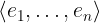
Arguments: An arbitrary number of arguments.
Apalache type: This operator is overloaded. There are two potential types:
- A tuple constructor:
(a_1, ..., a_n) => <<a_1, ..., a_n>>, for some typesa_1, ..., a_n. - A sequence constructor:
(a, ..., a) => Seq(a), for some typea.
That is why the Apalache type checker is sometimes asking you to add annotations, in order to resolve this ambiguity.
Effect: The tuple constructor returns a function t that is constructed
as follows:
- set
DOMAIN tto1..n, - set
r[i]to the value ofe_ifori \in 1..n.
In Apalache, this constructor may be used to construct either a tuple, or a sequence. To distinguish between them, you will sometimes need a [type annotation].
Determinism: Deterministic.
Errors: No errors.
Example in TLA+:
<<"Printer", 631>>
Example in Python: Python provides us with the syntax for constructing tuples, which are indexed with 0!. If we want to stick to the principle "tuples are functions", we have to use a dictionary.
>>> ("Printer", 631) # the pythonic way, introducing fields 0 and 1
('Printer', 631)
>>> { 1: "Printer", 2: 631 } # the "tuples-are-functions" way
{1: 'Printer', 2: 631}
Cartesian product
Notation: S_1 \X ... \X S_n (or S_1 \times ... \times S_n)
LaTeX notation: 
Arguments: At least two arguments. All of them should be sets.
Apalache type: (Set(a_1), ..., Set(a_n)) => Set(<<a_1, ..., a_n>>),
for some types a_1, ..., a_n.
Effect: The Cartesian product S_1 \X ... \X S_n
is syntax sugar for the set comprehension:
{ << e_1, ..., e_n >> : e_1 \in S_1, ..., e_n \in S_n }
Determinism: Deterministic.
Errors: The arguments S_1, ..., S_n must be sets. If they are not sets,
the result is undefined in pure TLA+. TLC raises a model checking error. Apalache
flags a static type error.
TLC raises a model checking error, whenever one of the sets S_1, ..., S_n is
infinite. Apalache can handle infinite sets in some cases, e.g., when one tuple
is picked with \E t \in S_1 \X S_2.
Example in TLA+:
{ "A", "B", "C" } \X (1..65535)
\* A set of tuples. Each tuple has two fields:
\* - field 1 has the value from the set { "A", "B", "C" }, and
\* - field 2 has the value from the set 1..65535.
Example in Python: TLA+ functions are immutable, so we are using frozendict:
# the pythonic way: a set of python tuples (indexed with 0, 1, ...)
frozenset({ (n, p)
for n in { "A", "B", "C" } for p in range(1, 65535 + 1) })
# the TLA+ way
frozenset({ frozendict({ 1: n, 2: p })
for n in { "A", "B", "C" } for p in range(1, 65535 + 1) })
Function application
As tuples are functions, you can access tuple elements by function
application, e.g., tup[2]. However, in the case of a
tuple, the type of the function application will be: (<<a_1, ..., a_i, ..., a_n>>, Int) => a_i, for some types a_1, ..., a_n.
Sequences
On the surface, TLA+ sequences are very much like lists in your programming language of choice. If you are writing code in Java, Python, Lisp, C++, Scala, you will be tempted to use sequences in TLA+ too. This is simply due to the fact that arrays, vectors, and lists are the most efficient collections in programming languages (for many tasks, but not all of them). But TLA+ is not about efficient compilation of your data structures! Many algorithms can be expressed in a much nicer way with sets and functions. In general, use sequences when you really need them.
In pure TLA+, sequences are just tuples. As a tuple, a sequence is
a function of the domain 1..n for some n >= 0 (the domain may be empty).
The duck-typing principle applies to sequences too: Any function with the domain 1..n can also be
treated as a sequence (or a tuple), and vice versa, tuples and sequences are
also functions. So you can use all function and tuple operators on sequences.
Importantly, the domain of a sequence is 1..n for some n >= 0. So the
indices in a sequence start with 1, not 0. For instance, <<1, 2>>[1] gives us
1, whereas <<1, 2>>[2] gives us 2.
The operators on sequences are defined in the standard module Sequences. To
use it, write the EXTENDS clause in the first lines of your module. Like
this:
------ MODULE MyLists ----====
EXTENDS Sequences
...
==============================
Construction. Sequences are constructed exactly as tuples in TLA+:
<<2, 4, 8>>
Sometimes, you have to talk about all possible sequences. The operator
Seq(S) constructs the set of all (finite) sequences that draw elements
from the set S. For instance, <<1, 2, 2, 1>> \in Seq({1, 2, 3}).
Note that Seq(S) is an infinite set. To use it with TLC, you often have
to override this operator, see Specifying Systems, page 237.
Application. Simply use function application, e.g., s[2].
Immutability. As sequences are special kinds of functions, sequences are immutable.
Sequence operators. The module Sequences provides you with convenient
operators on sequences:
- Add to end:
Append(s, e) - First and rest:
Head(s)andTail(s) - Length:
Len(s) - Concatenation:
s \o t - Subsequence:
SubSeq(s, i, k) - Sequence filter:
SelectSeq(s, Test)
See the detailed description in Operators.
Types. In contrast to pure TLA+ and TLC, the Apalache model checker
distinguishes between general functions, tuples, and sequences. They all have
different types. Essentially, a function has the type T_1 -> T_2 that
restricts the arguments and results as follows: the arguments have the type
T_1 and the results have the type T_2. A sequence has the type Seq(T_3),
which restricts the sequence elements to have the same type T_3.
As sequences are also tuples in TLA+, this poses a challenge for the Apalache
type checker. For instance, it can immediately figure out that <<1, "Foo">>
is a tuple, as Apalache does not allow sequences to carry elements of different
types. However, there is no way to say, whether <<1, 2, 3>> should be treated
as a tuple or a sequence. Usually, this problem is resolved by annotating the
type of a variable or the type of a user operator. See HOWTO write type
annotations.
The current SMT encoding of sequences in Apalache is not optimized, so operations on sequences are often significantly slower than operations on sets.
Operators
Tuple/Sequence constructor
Notation: <<e_1, ..., e_n>>
LaTeX notation:
Arguments: An arbitrary number of arguments.
Apalache type: This operator is overloaded. There are two potential types:
- A tuple constructor:
(a_1, ..., a_n) => <<a_1, ..., a_n>>, for some typesa_1, ..., a_n. - A sequence constructor:
(a, ..., a) => Seq(a), for some typea.
That is why the Apalache type checker is sometimes asking you to add annotations, in order to resolve this ambiguity.
Effect: The tuple/sequence constructor returns a function t that is
constructed as follows:
- set
DOMAIN tto1..n, - set
r[i]to the value ofe_ifori \in 1..n.
In Apalache, this constructor may be used to construct either a tuple, or a sequence. To distinguish between them, you will sometimes need a [type annotation].
Determinism: Deterministic.
Errors: No errors.
Example in TLA+:
<<"Printer", 631>>
Example in Python: Python provides us with the syntax for constructing lists, which are indexed with 0!. If we want to stick to the principle "sequences are functions", we have to use a dictionary.
>>> ["Printer", 631] # the pythonic way, a two-element list
['Printer', 631]
>>> { 1: "Printer", 2: 631 } # the "sequences-are-functions" way
{1: 'Printer', 2: 631}
Sequence append
Notation: Append(seq, e)
LaTeX notation: Append(seq, e)
Arguments: Two arguments. The first argument should be a sequence, the second one is an arbitrary expression.
Apalache type: (Seq(a), a) => Seq(a), for some type a.
Effect: The operator Append(seq, e)
constructs a new sequence newSeq as follows:
- set
DOMAIN newSeqto be(DOMAIN seq) \union { Len(seq) + 1 }. - set
newSeq[i]toseq[i]fori \in 1..Len(seq). - set
newSeq[Len(seq) + 1]toe.
Determinism: Deterministic.
Errors: The argument seq must be a sequence, that is, a function over
integers 1..n for some n. Otherwise, the result is undefined in pure TLA+.
TLC raises a model checking error. Apalache flags a static type error.
Apalache flags a static type error, when the type of e is not compatible with
the type of the sequence elements.
Example in TLA+:
Append(<<1, 2>>, 5)
\* The sequence <<1, 2, 5>>
Example in Python:
>>> # the pythonic way: a list (indexed with 0, 1, ...)
>>> l = [ 1, 2 ]
>>> l.append(5)
>>> l
[1, 2, 5]
>>> # the TLA+ way
>>> l = { 1: 1, 2: 2 }
>>> { i: l[i] if i <= len(l) else 5
... for i in range(1, len(l) + 2) }
{1: 1, 2: 2, 3: 5}
Function application
As sequences are functions, you can access sequence elements with function
application, e.g., seq[2]. However, in the case of a
sequence, the type of the function application is: (Seq(a), Int) => a, for
some type a.
Sequence head
Notation: Head(seq)
LaTeX notation: Head(seq)
Arguments: One argument. The argument should be a sequence (or a tuple).
Apalache type: Seq(a) => a, for some type a.
Effect: The operator Head(seq) evaluates to seq[1].
If seq is an empty sequence, the result is undefined.
Determinism: Deterministic.
Errors: The arguments seq must be a sequence (or a tuple), that is, a
function over integers 1..n for some n. Otherwise, the result is undefined
in pure TLA+. TLC raises a model checking error. Apalache flags a static type
error.
Example in TLA+:
Head(<<3, 4>>)
\* 3
Example in Python:
>>> # the pythonic way: using the list
>>> l = [ 3, 4 ]
>>> l[0]
3
>>> # the TLA+ way
>>> l = { 1: 3, 2: 4 }
>>> l[1]
3
Sequence tail
Notation: Tail(seq)
LaTeX notation: Tail(seq)
Arguments: One argument. The argument should be a sequence (or a tuple).
Apalache type: Seq(a) => Seq(a), for some type a.
Effect: The operator Tail(seq) constructs a new sequence newSeq as
follows:
- set
DOMAIN newSeqto be(DOMAIN seq) \ { Len(seq) }. - set
newSeq[i]toseq[i + 1]fori \in 1..(Len(seq) - 1).
If seq is an empty sequence, the result is undefined.
Apalache encodes a sequences as a triple <<fun, start, end>>, where
start and end define a slice of the function fun. As a result,
Tail is a very simple operation that just increments start.
Determinism: Deterministic.
Errors: The arguments seq must be a sequence (or a tuple), that is, a
function over integers 1..n for some n. Otherwise, the result is undefined
in pure TLA+. TLC raises a model checking error. Apalache flags a static type
error.
Example in TLA+:
Tail(<<3, 4, 5>>)
\* <<4, 5>>
Example in Python:
>>> # the pythonic way: using the list
>>> l = [ 3, 4, 5 ]
>>> l[1:]
[4, 5]
>>> # the TLA+ way
>>> l = { 1: 3, 2: 4, 3: 5 }
>>> { i: l[i + 1] for i in range(1, len(l)) }
{1: 4, 2: 5}
Sequence length
Notation: Len(seq)
LaTeX notation: Len(seq)
Arguments: One argument. The argument should be a sequence (or a tuple).
Apalache type: Seq(a) => Int, for some type a.
Effect: The operator Len(seq) is semantically equivalent to
Cardinality(DOMAIN seq).
Apalache encodes a sequences as a triple <<fun, start, end>>, where
start and end define a slice of the function fun. As a result,
Len is simply computed as end - start.
Determinism: Deterministic.
Errors: The argument seq must be a sequence (or a tuple), that is, a
function over integers 1..n for some n. Otherwise, the result is undefined
in pure TLA+. TLC raises a model checking error. Apalache flags a static type
error.
Example in TLA+:
Len(<<3, 4, 5>>)
\* 3
Example in Python:
>>> # the pythonic way: using the list
>>> l = [ 3, 4, 5 ]
>>> len(l)
3
>>> # the TLA+ way
>>> l = { 1: 3, 2: 4, 3: 5 }
>>> len(l.keys())
3
Sequence concatenation
Notation: s \o t (or s \circ t)
LaTeX notation: 
Arguments: Two arguments: both should be sequences (or tuples).
Apalache type: (Seq(a), Seq(a)) => Seq(a), for some type a.
Effect: The operator s \o t
constructs a new sequence newSeq as follows:
- set
DOMAIN newSeqto be1..(Len(s) + Len(t)). - set
newSeq[i]tos[i]fori \in 1..Len(s). - set
newSeq[Len(s) + i]tot[i]fori \in 1..Len(t).
Determinism: Deterministic.
Errors: The arguments s and t must be sequences, that is, functions
over integers 1..n and 1..k for some n and k. Otherwise, the result is
undefined in pure TLA+. TLC raises a model checking error. Apalache flags a
static type error.
Apalache flags a static type error, when the types of s and t are
incompatible.
Example in TLA+:
<<3, 5>> \o <<7, 9>>
\* The sequence <<3, 5, 7, 9>>
Example in Python:
>>> # the pythonic way: a list (indexed with 0, 1, ...)
>>> l1 = [ 3, 5 ]
>>> l2 = [ 7, 9 ]
>>> l1 + l2
[3, 5, 7, 9]
>>> # the TLA+ way
>>> l1 = { 1: 3, 2: 5 }
>>> l2 = { 1: 7, 2: 9 }
>>> { i: l1[i] if i <= len(l1) else l2[i - len(l1)]
... for i in range(1, len(l1) + len(l2) + 1) }
{1: 3, 2: 5, 3: 7, 4: 9}
Subsequence
Notation: SubSeq(seq, m, n)
LaTeX notation: SubSeq(seq, m, n)
Arguments: Three arguments: a sequence (tuple), and two integers.
Apalache type: (Seq(a), Int, Int) => Seq(a), for some type a.
Effect: The operator SubSeq(seq, m, n)
constructs a new sequence newSeq as follows:
- set
DOMAIN newSeqto be1..(n - m). - set
newSeq[i]tos[m + i - 1]fori \in 1..(n - m + 1).
If m > n, then newSeq is equal to the empty sequence << >>.
If m < 1 or n > Len(seq), then the result is undefined.
Determinism: Deterministic.
Errors: The argument seq must be a sequence, that is, a function over
integers 1..k for some k. The arguments m and n must be integers.
Otherwise, the result is undefined in pure TLA+. TLC raises a model checking
error. Apalache flags a static type error.
Example in TLA+:
SubSeq(<<3, 5, 9, 10>>, 2, 3)
\* The sequence <<5, 9>>
Example in Python:
>>> # the pythonic way: a list (indexed with 0, 1, ...)
>>> l = [ 3, 5, 9, 10 ]
>>> l[1:3]
[5, 9]
>>> # the TLA+ way
>>> l = { 1: 3, 2: 5, 3: 9, 4: 10 }
>>> m = 2
>>> n = 3
>>> { i: l[i + m - 1]
... for i in range(1, n - m + 2) }
{1: 5, 2: 9}
Sequence filter
Notation: SelectSeq(seq, Test)
LaTeX notation: SelectSeq(seq, Test)
Arguments: Two arguments: a sequence (a tuple) and a one-argument
operator that evaluates to TRUE or FALSE when called with
an element of seq as its argument.
Apalache type: (Seq(a), (a => Bool)) => Seq(a), for some type a.
Effect: The operator SelectSeq(seq, Test) constructs a new sequence
newSeq that contains every element e of seq on which Test(e) evaluates
to TRUE.
It is much easier to describe the effect of SelectSeq in words than to
give a precise sequence of steps. See Examples.
This operator is not supported by Apalache, as it inlines all operators,
before translating the specification in SMT. Hence, it cannot pass Test
into a built-in operator. To work around it, write a user-defined
recursive operator that is equivalent to SelectSeq.
Determinism: Deterministic.
Errors: If the arguments are not as described in Arguments, then the result is undefined in pure TLA+. TLC raises a model checking error.
Example in TLA+:
LET Test(x) ==
x % 2 = 0
IN
SelectSeq(<<3, 4, 9, 10, 11>>, Test)
\* The sequence <<4, 10>>
Example in Python:
>>> # the pythonic way: a list (indexed with 0, 1, ...)
>>> def test(x):
... return x % 2 == 0
>>>
>>> l = [ 3, 4, 9, 10, 11 ]
>>> [ x for x in l if test(x) ]
[4, 10]
>>> # the TLA+ way
>>> l = { 1: 3, 2: 4, 3: 9, 4: 10, 5: 11 }
>>> as_list = sorted(list(l.items()))
>>> filtered = [ x for (_, x) in as_list if test(x) ]
>>> { i: x
... for (i, x) in zip(range(1, len(filtered) + 1), filtered)
... }
{1: 4, 2: 10}
All sequences
Notation: Seq(S)
LaTeX notation: Seq(S)
Arguments: One argument that should be a set.
Apalache type: Set(a) => Set(Seq(a)), for some type a.
Effect: The operator Seq(S) constructs the set of all (finite) sequences
that contain elements from S. This set is infinite.
It is easy to give a recursive definition of all sequences whose length
is bounded by some n >= 0:
RECURSIVE BSeq(_, _)
BSeq(S, n) ==
IF n = 0
THEN {<< >>} \* the set that contains the empty sequence
ELSE LET Shorter == BSeq(S, n - 1) IN
Shorter \union { Append(seq, x): seq \in Shorter, x \in S }
Then we can define Seq(S) to be UNION { BSeq(S, n): n \in Nat }.
Determinism: Deterministic.
Errors: The argument S must be a set.
Apalache flags a static type error, if S is not a set.
TLC raises a model checking error, when it meets Seq(S), as Seq(S) is
infinite. You can override Seq(S) with its bounded version BSeq(S, n)
for some n. See: Overriding Seq in TLC.
Apalache does not support Seq(S) yet. As a workaround, you can manually
replace Seq(S) with BSeq(S, n) for some constant n. See the progress in
Issue 314.
Example in TLA+:
Seq({1, 2, 3})
\* The infinite set
{ <<>>,
<<1>>, <<2>>, <<3>>,
<<1, 1>>, <<1, 2>>, <<1, 3>>,
<<2, 1>>, <<2, 2>>, <<2, 3>>, <<3, 1>>, <<3, 2>>, <<3, 3>>
...
}
Example in Python: We cannot construct an infinite set in Python. However,
we could write an iterator that enumerates the sequences in Seq(S)
till the end of the universe.
User-defined operators and recursive functions
Like macros, to do a lot of things in one system step...
User-defined operators in TLA+ may be confusing. At first, they look like
functions in programming languages. (Recall that TLA+
functions are more like dictionaries or hash maps, not
functions in PL.) Then you realize that operators such as Init and Next are
used as logic predicates. However, large specifications often contain operators
that are not predicates, but in fact are similar to pure functions in
programming languages: They are computing values over the system state but pose
no constraints over the system states. On top of that, there are Recursive
functions that syntactically looks very similar to
operators.
Recently, Leslie Lamport has extended the syntax of TLA+ operators in TLA+ version 2, which supports recursive operators and lambda operators. The operator syntax that is described in Specifying Systems describes TLA+ version 1. This page summarizes the syntax of user-defined operators in versions 1 and 2.
Short digression. The most important thing to understand about user-defined
operators is that they are normally used inside Init and Next. While the
operator Init describes the initial states, the operator Next describes a
single step of the system. That is, these two operators are describing the
initial states and the possible transitions of the system, respectively. They
do not describe the whole system computation. Most of the time, we are writing
canonical specifications, which are written in temporal logic as Init /\ [][Next]_vars. Actually, you do not have to understand temporal logic, in
order to write canonical specifications. A canonical specification is saying:
(1) Initialize the system as Init prescribes, and (2) compute system
transitions as Next prescribes. It also allows for stuttering, but this
belongs to Advanced topics.
After the digression, you should now see that user-defined operators in TLA+ are (normally) describing a single step of the system. Hence, they should be terminating. That is why user operators are often understood as macros. The same applies to Recursive operator definitions. They have to terminate within a single system step.
Quirks of TLA+ operators. Below we summarize features of user-defined operators that you would probably find unexpected:
-
Some operators are used as predicates and some are used to compute values (à la pure).
-
Operators may accept other operators as parameters. Such operators are called Higher-order operator definitions.
-
Although operators may be passed as parameters, they are not first-class citizens in TLA+. For instance, an operator cannot be returned as a result of another operator. Nor can an operator be assigned to a variable (only the result of its application may be assigned to a variable).
-
Operators do not support Currying. That is, you can only apply an operator by providing values for all of its expected arguments.
-
Operators can be nested. However, nested operators require a slightly different syntax. They are defined with LET-IN definitions.
Details about operators. We go in detail about different kinds of operators and recursive functions below:
Top-level operator definitions
Quick example
Here is a quick example of a top-level user operator (which has to be defined in a module) and of its application:
----------------------- MODULE QuickTopOperator -------------------------------
...
Abs(i) == IF i >= 0 THEN i ELSE -i
...
B(k) == Abs(k)
===============================================================================
As you most probably guessed, the operator Abs expects one argument i.
Given an integer j, then the result of computing Abs(j) is the absolute
value of j. The same applies, when j is a natural number or a real number.
Syntax of operator definitions
In general, operators of n arguments are
defined as follows:
\* an operator without arguments (nullary)
Opa0 == body_0
\* an operator of one argument (unary)
Opa1(param1) == body_1
\* an operator of two arguments (binary)
Opa2(param1, param2) == body_2
...
In this form, the operator arguments are not allowed to be operators. If you want to receive an operator as an argument, see the syntax of Higher-order operators.
Here are concrete examples of operator definitions:
----------------------------- MODULE FandC ------------------------------------
EXTENDS Integers
...
ABSOLUTE_ZERO_IN_CELCIUS ==
-273
Fahrenheit2Celcius(t) ==
(t - 32) * 10 / 18
Max(s, t) ==
IF s >= t THEN s ELSE t
...
===============================================================================
What is their arity (number of arguments)?
If you are used to imperative languages such as Python or Java, then you are
probably surprised that operator definitions do not have any return
statement. The reason for that is simple: TLA+ is not executed on any hardware.
To understand how operators are evaluated, see the semantics below.
Syntax of operator applications
Having defined an operator, you can apply it inside another operator as follows (in a module):
----------------------------- MODULE FandC ------------------------------------
EXTENDS Integers
VARIABLE fahrenheit, celcius
\* skipping the definitions of
\* ABSOLUTE_ZERO_IN_CELCIUS, Fahrenheit2Celcius, and Max
...
UpdateCelcius(t) ==
celcius' = Max(ABSOLUTE_ZERO_IN_CELCIUS, Fahrenheit2Celcius(t))
Next ==
/\ fahrenheit' \in -1000..1000
/\ UpdateCelcius(fahrenheit')
...
===============================================================================
In the above example, you see examples of four operator applications:
-
The nullary operator
ABSOLUTE_ZERO_IN_CELCIUSis applied without any arguments, just by its name. Note how a nullary operator does not require parentheses(). Yet another quirk of TLA+. -
The one-argument operator Fahrenheit2Celcius is applied to
t, which is a parameter of the operatorUpdateCelcius. -
The two-argument operator
Maxis applied toABSOLUTE_ZERO_IN_CELCIUSandFahrenheit2Celcius(t). -
The one-argument operator
UpdateCelciusis applied tofahrenheit', which is the value of state variablefahrenheitin the next state of the state machine. TLA+ has no problem applying the operator tofahrenheit'or tofahrenheit.
Technically, there are more than four operator applications in our example. However, all other operators are the standard operators. We do not focus on them here.
Note on the operator order. As you can see, we are applying operators after they have been defined in a module. This is a general rule in TLA+: A name can be only referred to, if it has been defined in the code before. TLA+ is not the first language to impose that rule. For instance, Pascal had it too.
Note on shadowing. TLA+ does not allow you to use the same name as an operator parameter, if it has been defined in the context of the operator definition. For instance, the following is not allowed:
-------------------------- MODULE NoShadowing ---------------------------------
VARIABLE x
\* the following operator definition produces a semantic error:
\* the parameter x is shadowing the state variable x
IsZero(x) == x = 0
===============================================================================
There are a few tricky cases, where shadowing can actually happen, e.g., see
the operator dir in SlidingPuzzles. However, we recommend to keep things
simple and avoid shadowing at all.
Semantics of operator application
Precise treatment of operator application is given on page 320 of Specifying Systems. In a nutshell, operator application in TLA+ is a Call by macro expansion, though it is a bit smarter: It does not blindly mix names from the operator's body and its application context. For example, the following semantics by substitution is implemented in the Apalache model checker.
Here we give a simple explanation for non-recursive operators. Consider the
definition of an n-ary operator A and its application in the definition
of another operator B:
A(p_1, ..., p_n) == body_of_A
...
B(p_1, ..., p_k) ==
...
A(e_1, ..., e_n)
...
The following three steps allow us to replace application of the operator A
in B:
- Change the names in the definition of
Ain such a way such they do not clash with the names inB(as well as with other names that may be used inB). This is the well-known technique of Alpha conversion in programming languages. This may also require renaming of the parametersp_1, ..., p_n. Let the result of alpha conversion be the following operator:
uniq_A(uniq_p_1, ..., uniq_p_n) == body_of_uniq_A
-
Substitute the expression
A(e_1, ..., e_n)in the definition ofBwithbody_of_uniq_A. -
Substitute the names
uniq_p_1, ..., uniq_p_nwith the expressionse_1, ..., e_n, respectively.
The above transformation is usually called Beta reduction.
Example. Let's go back to the module FandC, which we considered above. By
applying the substitution approach several times, we transform Next in
several steps as follows:
First, by substituting the body of UpdateCelsius:
Next ==
/\ fahrenheit' \in -1000..1000
/\ celcius' = Max(ABSOLUTE_ZERO_IN_CELCIUS, Fahrenheit2Celcius(fahrenheit'))
Second, by substituting the body of Max:
Next ==
/\ fahrenheit' \in -1000..1000
/\ celcius' =
IF ABSOLUTE_ZERO_IN_CELCIUS >= Fahrenheit2Celcius(fahrenheit')
THEN ABSOLUTE_ZERO_IN_CELCIUS
ELSE Fahrenheit2Celcius(fahrenheit')
Third, by substituting the body of Fahrenheit2Celcius (twice):
Next ==
/\ fahrenheit' \in -1000..1000
/\ celcius' =
IF ABSOLUTE_ZERO_IN_CELCIUS >= (fahrenheit' - 32) * 10 / 18
THEN ABSOLUTE_ZERO_IN_CELCIUS
ELSE (fahrenheit' - 32) * 10 / 18
You could notice that we applied beta reduction syntactically from top to
bottom, like peeling an onion. We could do it in another direction: First
starting with the application of Fahrenheit2Celcius. This actually does not
matter, as long as our goal is to produce a TLA+ expression that is free of
user-defined operators. For instance, Apalache applies Alpha conversion and
Beta reduction to remove user-defined operator and then translates the TLA+
expression to SMT.
LET-IN operator definitions
work in progress...
Higher-order operator definitions
work in progress...
Anonymous operator definitions
work in progress...
Recursive operator definitions
work in progress...
Local operator definitions
work in progress...
Recursive functions
work in progress...
Apalache operators
In addition to the standard TLA+ operators described in the previous section, Apalache defines a number of operators, which do not belong to the core language of TLA+, but which Apalache uses to provide clarity, efficiency, or special functionality. These operators belong to the module Apalache, and can be used in any specification by declaring EXTENDS Apalache.
Assigmnent
Notation: v' := e
LaTeX notation: 
Arguments: Two arguments. The first is a primed variable name, the second is arbitrary.
Apalache type: (a, a) => Bool, for some type a
Effect: The expression v' := e evaluates to v' = e. At the level of Apalache static analysis, such expressions indicate parts of an action, where the value of a state-variable in a successor state is determined. See here for more details about assignments in Apalache.
Determinism: Deterministic.
Errors: If the first argument is not a primed variable name, or if the assignment operator is used where assignments are prohibited, Apalache statically reports an error.
Example in TLA+:
x' := 1 \* x' = 1
x' := (y = z) \* x' = (y = z)
x' := (y' := z) \* x' = (y' = z) in TLC, assignment error in Apalache
x' := 1 \/ x' := 2 \* x' = 1 \/ x' = 2
x' := 1 /\ x' := 2 \* FALSE in TLC, assignment error in Apalache
x' := 1 \/ x' := "a" \* Type error in Apalache
(x' + 1) := 1 \* (x' + 1) = 1 in TLC, assignment error in Apalache
IF x' := 1 THEN 1 ELSE 0 \* Assignment error in Apalache
Example in Python:
>> a = 1 # a' := 1
>> a == 1 # a' = 1
True
>> a = b = "c" # b' := "c" /\ a' := b'
>> a = (b == "c") # a' := (b = "c")
Sequence cast
Notation: FunAsSeq(fn, maxLen)
LaTeX notation: FunAsSeq(fn, maxLen)
Arguments: Two arguments. The first is a function, the second is an integer.
Apalache type: (Int -> a, Int) => Seq(a), for some type a
Effect: The expression FunAsSeq(fn, maxLen) evaluates to the sequence << fn[1], ..., fn[maxLen] >>.
At the level of Apalache static analysis, FunAsSeq indicates type-casting a function type Int -> a to a sequence type Seq(a), since one cannot use function constructors to define a sequence in Apalache otherwise.
Determinism: Deterministic.
Errors:
If fn is not a function of the type Int -> a or if maxLen is not an integer, Apalache statically reports a type error. Additionally, if it is not the case that 1..maxLen \subseteq DOMAIN fn, the result is undefined.
Example in TLA+:
Head( [ x \in 1..5 |-> x * x ] ) \* 1 in TLC, type error in Apalache
FunAsSeq( [ x \in 1..5 |-> x * x ], 3 ) \* <<1,4,9>>
Head( FunAsSeq( [ x \in 1..5 |-> x * x ], 3 ) ) \* 1
FunAsSeq( <<1,2,3>>, 3 ) \* <<1,2,3>> in TLC, type error in Apalache
FunAsSeq( [ x \in {0,42} |-> x * x ], 3 ) \* UNDEFINED
Example in Python:
def funAsSeq(f,imax):
# f === { x:f(x) | x \in Dom(f) }
return[f.get(i) for i in range(1,imax+1)]
def boundedFn(f, dom):
return { x:f(x) for x in dom }
f = boundedFn( lambda x: x*x, range(1,6) ) # [ x \in 1..5 |-> x * x ]
g = boundedFn( lambda x: x*x, {0,42} ) # [ x \in {0,42} |-> x * x ]
>>> f[1] # Head( [ x \in 1..5 |-> x * x ] )
1
>>> funAsSeq(f, 3) # FunAsSeq( [ x \in 1..5 |-> x * x ], 3 )
[1,4,9]
>>> funAsSeq(f, 3)[1] # Head( FunAsSeq( [ x \in 1..5 |-> x * x ], 3 ) )
1
>>> funAsSeq( g, 3 ) # FunAsSeq( [ x \in {0,42} |-> x * x ], 3 )
[None, None, None]
Skolemization Hint
Notation: Skolem(e)
LaTeX notation: Skolem(e)
Arguments: One argument. Must be an expression of the form \E x \in S: P.
Apalache type: (Bool) => Bool
Effect: The expression Skolem(\E x \in S: P) provides a hint to Apalache, that the existential quantification may be skolemized. It evaluates to the same value as \E x \in S: P.
Determinism: Deterministic.
Errors:
If e is not a Boolean expression, throws a type error. If it is Boolean, but not an existentially quantified expression, throws a StaticAnalysisException.
Note:
This is an operator produced internally by Apalache. You may see instances of this operator, when reading the .tla side-outputs of various passes. Manual use of this operator is discouraged and, in many cases, not supported.
Example in TLA+:
Skolem( \E x \in {1,2}: x = 1 ) \* TRUE
Skolem( 1 ) \* 1 in TLC, type error in Apalache
Skolem( TRUE ) \* TRUE in TLC, error in Apalache
Set expansion
Notation: Expand(S)
LaTeX notation: Expand(S)
Arguments: One argument. Must be either SUBSET SS or [T1 -> T2].
Apalache type: (Set(a)) => Set(a), for some a.
Effect: The expression Expand(S) provides instructions to Apalache, that the large set S (powerset or set of functions) should be explicitly constructed as a finite set, overriding Apalache's optimizations for dealing with such collections. It evaluates to the same value as S.
Determinism: Deterministic.
Errors:
If e is not a set, throws a type error. If the expression is a set, but is not of the form SUBSET SS or [T1 -> T2], throws a StaticAnalysisException.
Note:
This is an operator produced internally by Apalache. You may see instances of this operator, when reading the .tla side-outputs of various passes. Manual use of this operator is discouraged and, in many cases, not supported.
Example in TLA+:
Expand( SUBSET {1,2} ) \* {{},{1},{2},{1,2}}
Expand( {1,2} ) \* {1,2} in TLC, error in Apalache
Expand( 1 ) \* 1 in TLC, type error in Apalache
Cardinality Hint
Notation: ConstCardinality(e)
LaTeX notation: ConstCardinality(e)
Arguments: One argument. Must be an expression of the form Cardinality(S) >= k.
Apalache type: (Bool) => Bool
Effect: The expression ConstCardinality(Cardinality(S) >= k) provides a hint to Apalache, that Cardinality(S) is a constant, allowing Apalache to encode the constraint e without attempting to dynamically encode Cardinality(S). It evaluates to the same value as e`.
Determinism: Deterministic.
Errors:
If S is not a Boolean expression, throws a type error. If it is Boolean, but not an existentially quantified expression, throws a StaticAnalysisException.
Note:
This is an operator produced internally by Apalache. You may see instances of this operator, when reading the .tla side-outputs of various passes. Manual use of this operator is discouraged and, in many cases, not supported.
Example in TLA+:
Skolem( \E x \in {1,2}: x = 1 ) \* TRUE
Skolem( 1 ) \* 1 in TLC, type error in Apalache
Skolem( TRUE ) \* TRUE in TLC, error in Apalache
Folding
The operators FoldSet and FoldSeq are explained in more detail in a dedicated section here.
Idiomatic TLA+
Authors: Shon Feder, Igor Konnov + (who likes to contribute?)
This document is under construction. If you like to contribute, open a pull request.
Introduction
In this document, we collect specification idioms that aid us in writing TLA+ specifications that are:
- understood by distributed system engineers,
- understood by verification engineers, and
- understood by automatic analysis tools such as the Apalache model checker.
If you believe, that the above points are contradictory when put together, it is to some extent true. TLA+ is an extremely general specification language. As a result, it is easy to write a short specification that leaves a human reader puzzled . It is even easier to write a (syntactically correct) specification that turns any program trying to reason about TLA+ to dust.
Nevertheless, we find TLA+ quite useful when writing concise specifications of distributed protocols at Informal Systems. Other specification languages -- especially, those designed for software verification -- would require us to introduce unnecessary book-keeping details that would both obfuscate the protocols and make their verification harder. However, we do not always need "all the power of mathematics", so we find it useful to introduce additional structure in TLA+ specifications.
Below, we summarize the idioms that help us in maintaining that structure. As a bonus, these idioms usually aid the Apalache model checker in analyzing the specifications. Our idioms are quite likely different from the original ideas of Leslie Lamport (the author of TLA+). So it is useful to read Lamport's Specifying Systems. Importantly, these are idioms, not rules set in stone. If you believe that one of those idioms does not work for you in your specific setting, don't follow it.
If this is the first page where you encounter the word "TLA+", we do not recommend that you continue to read the material. It is better to start with The TLA+ Video Course by Leslie Lamport. Once you have understood the basics and tried the language, it makes sense to ask the question: "How do I write a specification that other people understand?". We believe that many TLA+ users reinvent rules that are similar to our idioms. By providing you with a bit of guidance, we hope to reduce your discomfort when learning more advanced TLA+.
The idioms
Idiom 0: Keep state variables to the minimum 🔋
Idiom 1: Update state variables with assignments 📅
Idiom 2: Apply primes only to state variables 📌
Idiom 3: Isolate updates to VARIABLES 👻
Idiom 4: Isolate non-determinism in actions 🔮
Idiom 5: Introduce pure operators 🙈
Idiom 6: Introduce a naming convention for operator parameters 🛂
Idiom 7: Use Boolean operators in actions, not IF-THEN-ELSE 🙅
Idiom 8: CHOOSE smart, prefer \E 💂♂
Idiom 9: Do not over-structure 🔬
Idiom 10: Do not over-modularize 🦆
Idiom 11: Separate normal paths from error paths. ⚡
Idiom 12: Do you really need those nice recursive operators? 🌀
Idiom 13: Do you really need set cardinalities? 🍕
Idiom 14: Do you really need integers? 🔢
Idiom 15: Replace sets of mixed records with disjoint unions 🛄
Idiom 0: Keep state variables to the minimum
In imperative programming, it is common to use mutable variable assignments liberally, but to exercise caution whenever mutable variables have a global scope. In TLA+, mutable variables are always global, so it is important to use them carefully and in a way that accurately reflects the global state of the system you are specifying.
Description
A good TLA+ specification minimizes the computation state and makes it visible.
TLA+ does not have special syntax for variable assignment. For a good reason. The power of TLA+ is in writing constraints on variables rather than in writing detailed commands. If you have been writing in languages such as C, C++, Java, Python, your first reflex would be to define a variable to store the intermediate result of a complex computation.
In programming languages, we introduce temporary variables for several reasons:
- To avoid repetitive computations of the same expression,
- To break down a large expression into a series of smaller expressions,
- To make the code concise.
Point 1 is a non-issue in TLA+, as it is mostly executed in the reader's brain, and people are probably less efficient in caching expressions than computers. Points 2 and 3 can be nicely addressed with LET-definitions in TLA+. Hence, there is no need for auxiliary variables.
Usually, we should minimize the specification state, that is, the scope of the data
structures that are declared with VARIABLES. It does not mean that one variable
is always better than two. It means that what is stored in VARIABLES should be
absolutely necessary to describe the computations or the observed properties.
Advantages
By avoiding auxiliary state variables, we localize the updates to the state. This improves specification readability. It also helps the tools, as large parts of the specification become deterministic.
Disadvantages
Sometimes, we have to expose the internals of the computation. For instance, if we want to closely monitor the values of the computed expressions, when using the specification for model-based testing.
Sometimes, we have to break this idiom to make the specification more readable. Here is an example by Markus Kuppe. The specification of BlockingQueue that has one more variable is easier to read than the original specification with a minimal number of variables.
Example
Consider the following implementation of Bubble sort in Python:
my_list = [5, 4, 3, 8, 1]
finished = False
my_list_len = len(my_list) # cache the length
while not finished:
finished = True
if my_list_len > 0:
prev = my_list[0] # save the first element to use in the loop
for i in range(1, my_list_len):
current = my_list[i]
if prev <= current:
# save current for the next iteration
prev = current
else:
# swap the elements
my_list[i - 1] = current
my_list[i] = prev
finished = False
Notice that we have introduced three local variables to optimize the code:
my_list_lento cache the length of the list,prevto cache the previously accessed element of the list, in order to minimize the number of list accesses,currentto cache the iterated element of the list.
In TLA+, one usually does not introduce local variables for the intermediate
results of the computation, but rather introduces variables to represent the
essential part of the algorithm state. (While we have spent some time on code
optimization, we might have missed the fact that our sorting algorithm is not
as good as Quicksort.) In the above example, the essential variables are
finished and my_list.
Compare the above code to (a slightly more abstract) bubble sort in TLA+:
EXTENDS Integers, Sequences
in_list == <<5, 4, 3, 8, 1>>
VARIABLES my_list, finished
Init ==
/\ my_list = in_list
/\ finished = FALSE
IsSorted(lst) ==
\A i \in DOMAIN lst \ {1}:
lst[i - 1] <= lst[i]
WhenSorted ==
/\ IsSorted(my_list)
/\ finished' = TRUE
/\ UNCHANGED my_list
WhenUnsorted ==
/\ \E i \in DOMAIN my_list \ {1}:
/\ my_list[i - 1] > my_list[i]
/\ my_list' = [my_list EXCEPT ![i - 1] = my_list[i],
![i] = my_list[i - 1]]
/\ finished' = FALSE
Next ==
IF finished
THEN UNCHANGED <<my_list, finished>>
ELSE WhenSorted \/ WhenUnsorted
Our TLA+ code contains only two state variables: my_list and finished.
Other variables are introduced by quantifiers (e.g., \E i \in ...).
The state variables are not updated in the sense of programming languages.
Rather, one writes constraints over unprimed and primed versions, e.g.:
...
/\ my_list' = [my_list EXCEPT ![i - 1] = my_list[i],
![i] = my_list[i - 1]]
Of course, one can introduce aliases for intermediate expressions, for instance, by using let-definitions:
...
LET prev == my_list[i - 1]
current == my_list[i]
IN
/\ prev > current
/\ my_list' = [my_list EXCEPT ![i - 1] = current, ![i] = prev]
However, the let-definitions are not variables, they are just aliases for more complex expressions. Importantly, one cannot update the value of an expression that is defined with a let-definition. In this sense, TLA+ is similar to functional languages, where side effects are carefully avoided and minimized.
In contrast to functional languages, the value of TLA+ is not in computing the result of a function application, but in producing sequences of states (called behaviors). Hence, some parts of a useful TLA+ specification should have side effects to record the states.
Idiom 1: Update state variables with assignments
Description
The idiom "Keep state variables to the minimum" tells us to store the minimum necessary state variables. By following this idiom, we develop the specification by writing constraints over the primed variables.
TLA+ comes with a great freedom of expressing constraints over variables.
While we love TLA+ for that freedom, we believe that constraints over primed
variables are sometimes confusing.
TLA+ uses the same glyph, = for three separate purposes: assignment, asserting equality, and binding variables. But these are very different operations and have different semantics.
Issue 1
tl;dr: Use := (supplied by the Apalache.tla module) instead of = for assignment.
Consider the expression:
x' = x + 1
It is all clear here. The value of x in the next states (there may be many)
is equal to val(x)+1, where val(x) is the value of x in the current
state.
Wait. Is it clear? What if that expression was just the first line of the following expression:
x' = x + 1
=> x' = 3
This says, "if x' is equal to x + 1, then assign the value of 3 to x' in the next state", which
implies that x' may receive a value from the set:
{ 3 } \union { y \in Int: y /= val(x) + 1 }
But maybe the author of that specification just made a typo and never
meant to put the implication => in the first place. Actually, the intended
specification looks like follows:
x' = x + 1
\/ x' = 3
We believe that it is helpful to label the expressions that intend to denote the
values of the state variables in the next state. Apalache introduces the infix
operator := in the module Apalache.tla for that purpose:
x' := x + 1
\/ x' := 3
Hence, it would be obvious in our motivating example that the author made a typo:
x' := x + 1
=> x' := 3
because the assignment x' := x + 1 does not express a boolean value
and so cannot be the antecedent of the conditional.
Issue 2
tl;dr: Use existential variables with the := operator for non-deterministic assignment.
Another common use of primed variables is to select the next value of a variable from a set:
x' \in { 1, 2, 3 }
This expression can be rewritten as an equivalent one:
\E y \in { 1, 2, 3 }:
x' = y
Which one to choose? The first one is more concise. The second one highlights
the important effect, namely, non-deterministic choice of the next value of x.
When combined with the operator :=, the effect of non-deterministic choice is
clearly visible:
\E y \in { 1, 2, 3 }:
x' := y
In fact, every constraint over primes can be translated into the existential form. For instance, consider the expression:
x' * x' = 4
It can be written as:
\E y \in Int:
/\ y * y = 4
/\ x' := y
Advantages
-
The reader clearly sees the writer's intention about the updates to the primed variables.
-
Non-determinism is clearly isolated in existential choice:
\E y \in S: x' := y. If there is no existential choice, the assignment is deterministic. -
When the existential form is used, the range of the values is clearly indicated. This is in contrast to the negated form such as:
~(x' = 10). -
TLC treats the expressions of the form
x' = eandx' \in Sas assignments, as long asx'is not bound to a value. -
Apalache uses assignments to decompose the specification into smaller pieces. Although Apalache tries to find assignments automatically, it often has to choose from several expressions, some of them may be more complex than the others. By using the
:=operator, Apalache gets unambiguous instructions about when assignment is taking place
Disadvantages
- Replacing
x' \in Swith\E y \in S: x' := ymakes the specification a bit larger.
Example
The following example deliver.tla demonstrates how
one can clearly mark assignments using the := operator.
------------------------------ MODULE deliver ----------------------------------
(*
* A simple specification of two processes in the network: sender and receiver.
* The sender sends messages in sequence. The receiver may receive the sent
* messages out of order, but delivers them to the client in order.
*
* Igor Konnov, 2020
*)
EXTENDS Integers, Apalache
VARIABLES
sentSeqNo, \* the sequence number of the next message to be sent
sent, \* the messages that are sent by the sender
received, \* the messages that are received by the receiver
deliveredSeqNo \* the sequence number of the last delivered message
(* We assign to the unprimed state variables to set their initial values. *)
Init ==
/\ sentSeqNo := 0
/\ sent := {}
/\ received := {}
/\ deliveredSeqNo := -1
(* Subsequent assignments are all to primed variables, designating changed values
after state transition. *)
Send ==
/\ sent' := sent \union {sentSeqNo}
/\ sentSeqNo' := sentSeqNo + 1
/\ UNCHANGED <<received, deliveredSeqNo>>
Receive ==
(* We make the nonderministic assignment explicit, by use of existential quantification *)
/\ \E msgs \in SUBSET (sent \ received):
received' := received \union msgs
/\ UNCHANGED <<sentSeqNo, sent, deliveredSeqNo>>
Deliver ==
/\ (deliveredSeqNo + 1) \in received
/\ deliveredSeqNo' := deliveredSeqNo + 1
\* deliver the message with the sequence number deliveredSeqNo'
/\ UNCHANGED <<sentSeqNo, sent, received>>
Next ==
\/ Send
\/ Receive
\/ Deliver
Inv ==
(deliveredSeqNo >= 0) => deliveredSeqNo \in sent
================================================================================
Idiom 2: Apply primes only to state variables
(Until you learn how prime actually works!)
Description
In many formal languages, the notation x' denotes the value that a variable
x has after the system has fired a transition. The reason for having both x
and x' is that the transitions are often described as relations over unprimed
and primed variables, e.g., x' = x+1. It is easy to extend this idea to
vectors of variables, but for simplicity we will use only one variable.
TLA+ goes further and declares prime (') as an operator! This operator distributes over
any state variables in the scope of its application. For example, assume that we
evaluate a TLA+ expression A over x and x', and v[i] and v[i+1] are
meant to be the values of x in the ith state and i+1-th state, respectively.
Then x is evaluated to v[i] and x' is evaluated to v[i+1]. Naturally,
x + 3 is evaluated to v[i] + 3, whereas x' + 4 is evaluated to v[i+1] + 4. We can go further and evaluate (x + 4)', which can be rewritten as x' + 4.
Intuitively, there is nothing wrong with the operator "prime". However, you have to understand this operator well, in order to use it right. For starters, check the warning by Leslie Lamport in Specifying Systems on page 82. The following example illustrates the warning:
--------------------------- MODULE clocks3 ------------------------------------
(* Model a system of three processes, each one equipped with a logical clock *)
EXTENDS Integers, Apalache
VARIABLES clocks, turn
\* a shortcut to refer to the clock of the process that is taking the step
MyClock == clocks[turn]
\* a shortcut to refer to the processes that are not taking the step
Others == DOMAIN clocks \ {turn}
Init ==
/\ clocks := [p \in 1..3 |-> 0] \* initialize the clocks with 0
/\ turn := 1 \* process 1 makes the first step
Next ==
\* update the clocks of the processes (the section Example shows a better way)
/\ \E f \in [1..3 -> Int]:
clocks' := f
\* increment the clock of the process that is taking the step
/\ MyClock' = MyClock + 1
\* all clocks of the other processes keep their clock values
/\ \A i \in Others:
clocks'[i] = clocks[i]
\* use round-robin to decide who makes the next step
/\ turn' := 1 + (turn + 1) % 3
===============================================================================
Did you spot a problem in the above example? If not, check these lines again:
\* increment the clock of the process that is taking the step
/\ MyClock' = MyClock + 1
The code does not match the comment. By writing MyClock', we get
(clocks[turn])' that is equivalent to clocks'[turn']. So our constraint
says: Increment the clock of the process that is taking the next step. By
looking at the next constraint, we can see that Next can never be evaluated
to true (a logician would say that Next is "unsatisfiable"):
\* all clocks of the other processes keep their clock values
/\ \A i \in Others:
clocks'[i] = clocks[i]
Our intention was to make the specification easier to read, but instead we have introduced a deadlock in the system. In a larger specification, this bug would be much harder to find.
We recommend to follow this simple rule: Apply primes only to state variables
Can we remove the "prime" operator altogether and agree to use x and x' as
names of the variables? Not really. More advanced features of TLA+ require this
operator. In a nutshell, TLA+ is built around the idea of refinement, that is,
replacing an abstract specification with a more detailed one. Concretely, this
idea is implemented by module instances in TLA+. It often happens that
refinement requires us to replace a state variable of the abstract
specification with an operator of the detailed specification. Voilà. You have
to apply prime to an expression. For the details,
see Chapter 5 and pages 312-313 of Specifying Systems.
Advantages
-
It is easy to see, whether the specification author intended to talk about the variables in the next state or about the variable in the current state.
-
It is harder to make an unexpected substitution mistake, as in the above example.
Disadvantages
- Sometimes, the operator "prime" helps us in avoiding code duplication.
For instance, you can write a state invariant
Invand later evaluate it against a next state by simply writingInv'. However, you have to be careful about propagation of primes inInv.
Example
A better version of the clocks example applies prime only to state variables.
By doing so, we notice that the specification can be further simplified:
--------------------------- MODULE clocks3_2 ----------------------------------
(* Model a system of three processes, each one equipped with a digital clock *)
EXTENDS Integers, Apalache
VARIABLES clocks, turn
Init ==
/\ clocks := [p \in 1..3 |-> 0] \* initialize the clocks with 0
/\ turn := 1 \* process 1 makes the first step
Next ==
\* update the clocks of the processes
/\ clocks' :=
[p \in 1..3 |->
IF p = turn THEN clocks[turn] + 1 ELSE clocks[p]]
\* use round-robin to decide who makes the next step
/\ turn' := 1 + (turn + 1) % 3
===============================================================================
Idiom 15: Replace sets of mixed records with disjoint unions
Message sets are canonically modeled as sets of records with mixed types. While the current type system supports this, in the future, Apalache is likely going to change support for these kinds of sets and implement stricter type-checking. See this issue for a discussion. This document aims to provide instructions for users to migrate their specs to maintain type compatibility in the future (and improve the performance and robustness of current specs in the present).
The common approach
Apalache allows mixed sets of records, by defining the type of the set to be Set(r), where r is the record type which contains all of the fields, which are held by at least one set member. For example:
{ [x: Int], [y: Str] }
would have the type Set([x:Int,y:Str]). The only constraints Apalache imposes are that, if two set elements declared the same field name, the types of the fields have to match. Consequently, given
A == { [x: Int, z: Bool], [y: Str, z: Bool] }
B == { [x: Int, z: Bool], [y: Str, z: Int] }
A is considered well typed, and is assigned the type Set([x:Int, y:Str, z:Bool]), whereas B is rejected by the type checker.
The treatment of record types was implemented in this fashion, to maintain backward-compatibility with specifications of message-based algorithms, which typically encoded different message types as records of the shape [ type: Str, ... ], where all messages shared a disambiguation filed (commonly named type), the value of which described the category of the message. Additional fields depended on the value of type.
The bellow snippet from Paxos.tla demonstrates this convention:
\* The set of all possible messages
Message == [type : {"1a"}, bal : Ballot]
\union [type : {"1b"}, acc : Acceptor, bal : Ballot,
mbal : Ballot \union {-1}, mval : Value \union {None}]
\union [type : {"2a"}, bal : Ballot, val : Value]
\union [type : {"2b"}, acc : Acceptor, bal : Ballot, val : Value]
Ultimately, this approach both disagrees with our interpretation of the purpose of a type-system for TLA+, as well as introduces unsoundness, in the sense that it makes it impossible, at the type-checking level, to detect record-field access violations. Consider the following:
\E m \in Message: m.type = "1a" /\ m.mbal = -1
As defined above, messages for which m.type = "1a" do not define a field named mbal, however, the type of Message is Set([type: Str, ..., mbal: Int, ...]), which means, that m is assumed to have an mbal field, typed Int. Thus, this access error can only be caught much later in the model-checking process, instead of at the level of static analysis provided by the type-checker.
The proposed changes
This section outlines a proposed migration strategy, to replace such sets in older specifications. The convention presented in this section works with both the current version of Apalache, as well as the next iteration of the type-checker, currently in development.
Suppose we use messages with types t1,...,tn in the specification and a message set variable msgs, like in the snippet below:
VARIABLE
\* @type: Set( [ type: Str, x1: a1, ..., xn: an, ... ] );
msgs
...
\* Assuming S1: Set(a1), ..., Sn: Set(an)
\* @type: Set( [ type: Str, x1: a1, ..., xn: an, ... ] );
Message == [type : {"t1"}, x1: S1, ...]
\union ...
\union [type : {"tn"}, xn: Sn, ...]
...
TypeOk: msgs \subseteq Message
We propose the following substitution: Instead of modeling the union of all messages as a single set, we model their disjoint union explicitly, with a record, in the following way:
\* @type: [ int: Set([x: Int]), str: Set([y: Str]) ];
Messages == [
t1: [x1: S1, ...],
...,
tn: [xn: Sn, ...]
]
This way, Messages.t1 represents the set of all messages m, for which m.type would have been equal to "t1" in the original implementation, that is, [type: {"t1"}, x1: S1, ...].
For example, assume the original specification included
Messages == [type: {"t1"}, x: {1,2,3}] \union [type: {"t2"}, y:{"a","b","c"}]
that is, defined two types of messages: "t1", with an integer-valued field "x" and "t2" with a string-valued field "y". The type of any m \in Messages would have been [type: Str, x: Int, y: Str] in the old approach.
The rewritten version would be:
Messages == [ t1: [x:{1,2,3}], t2: [y:{"a","b", "c"}] ]
If we took m: [ t1: Set([x: Int]), t2: Set([y: Str]) ], m would be a record pointing to two disjoint sets of messages (of categories "t1" and "t2" respectively). Values in m.t1 would be records with the type [x: Int] and values in m.t2 would be records with the type [y: Str].
Note, however, that this approach also requires a change in the way messages are added to, or read from, the "set" of all messages (m is a record representing a set, but not a set itself, in the new approach).
Previously, a message m would be added by writing:
msgs' = msgs \union {m}
regardless of whether m.type = "t1" or m.type = "t2". In the new approach, one must always specify which type of message is being added. However, the type no longer needs to be a property of the message itself, i.e. the type field is made redundant.
To add a message m of the category ti one should write
msgs' = [ msgs EXCEPT !.ti = msgs.ti \union {m} ]
Similarly, reading/processing a message, which used to be done in the following way:
\E m \in msgs:
/\ m.type = "ti"
/\ A(m)
is replaced by
\E m \in msgs.ti: A(m)
Example
Below, we demonstrate this process on a concrete specification: The old approach:
------------------------------- MODULE MsgSetOld ------------------------------
VARIABLE
\* @type: Set( [ type: Str, x: Int, y: Str ] );
msgs,
\* @type: Bool;
found3,
\* @type: Bool;
foundC
Ints == {1,2,3}
Strs == {"a","b","c"}
\* @type: () => Set([ type: Str, x: Int, y: Str ] );
Messages == [ type: {"int"}, x: Ints ] \union [ type: {"str"}, y: Strs ]
Init ==
/\ msgs = {}
/\ found3 = FALSE
/\ foundC = FALSE
Send(m) == msgs' = msgs \union {m}
Rm(m) == msgs' = msgs \ {m}
AddIntMsg ==
/\ \E v \in Ints:
/\ Send( [type |-> "int", x |-> v] )
/\ UNCHANGED <<found3, foundC>>
CheckIntMsg ==
/\ \E m \in msgs:
/\ m.type = "int"
/\ found3' = ( m.x = 3 )
/\ Rm(m)
/\ UNCHANGED foundC
AddStrMsg ==
/\ \E v \in Strs:
/\ Send( [type |-> "str", y |-> v] )
/\ UNCHANGED <<found3, foundC>>
CheckStrMsg ==
/\ \E m \in msgs:
/\ m.type = "str"
/\ foundC' = ( m.y = "c" )
/\ Rm(m)
/\ UNCHANGED found3
Next ==
\/ AddIntMsg
\/ CheckIntMsg
\/ AddStrMsg
\/ CheckStrMsg
TypeOk == msgs \subseteq Messages
===============================================================================
The new approach:
------------------------------- MODULE MsgSetNew ------------------------------
VARIABLE
\* @type: [ int: Set([x: Int]), str: Set([y: Str]) ];
msgs,
\* @type: Bool;
found3,
\* @type: Bool;
foundC
Ints == {1,2,3}
Strs == {"a","b","c"}
\* no annotation required
Messages == [
int |-> [x: Ints],
str |-> [y: Strs]
]
Init ==
/\ msgs = [ int |-> {}, str |-> {} ]
/\ found3 = FALSE
/\ foundC = FALSE
\* @type: ([x: Int]) => Bool;
SendInt(m) ==
msgs' = [msgs EXCEPT !.int = msgs.int \union {m}]
\* @type: ([x: Int]) => Bool;
RmInt(m) ==
msgs' = [msgs EXCEPT !.int = msgs.int \ {m}]
\* @type: ([y: Str]) => Bool;
SendStr(m) ==
msgs' = [msgs EXCEPT !.str = msgs.str \union {m}]
\* @type: ([x: Int]) => Bool;
RmStr(m) ==
msgs' = [msgs EXCEPT !.str = msgs.str \ {m}]
AddIntMsg ==
/\ \E v \in Ints:
/\ SendInt( [x |-> v] )
/\ UNCHANGED <<found3, foundC>>
CheckIntMsg ==
/\ \E m \in msgs.int:
/\ found3' = ( m.x = 3 )
/\ RmInt(m)
/\ UNCHANGED foundC
AddStrMsg ==
/\ \E v \in Strs:
/\ SendStr( [y |-> v] )
/\ UNCHANGED <<found3, foundC>>
CheckStrMsg ==
/\ \E m \in msgs.str:
/\ foundC' = ( m.y = "c" )
/\ RmStr(m)
/\ UNCHANGED found3
Next ==
\/ AddIntMsg
\/ CheckIntMsg
\/ AddStrMsg
\/ CheckStrMsg
TypeOk ==
/\ msgs.int \subseteq Messages.int
/\ msgs.str \subseteq Messages.str
===============================================================================
Note that the new approach, in addition to being sound w.r.t. record types, also typically results in a performance improvement, since type-unification for record sets is generally expensive for the solver.
ADR-002: types and type annotations
| authors | revision |
|---|---|
| Shon Feder, Igor Konnov, Jure Kukovec | 4 |
This is a request for comments. For user documentation, check the [Snowcat tutorial][] and [Snowcat HOWTO][].
This is a follow up of RFC-001, which discusses plenty of alternative solutions. In this ADR-002, we fix one solution that seems to be most suitable. The interchange format for the type inference tools will be discussed in a separate ADR.
- How to write types in TLA+ (Type System 1).
- How to write type annotations (as a user).
This document assumes that one can write a simple type checker that computes the types of all expressions based on the annotations provided by the user. Such an implementation is provided by the type checker Snowcat. See the manual chapter on Snowcat.
In contrast, the type inference algorithm by @Kukovec is fully automatic and thus it eliminates the need for type annotations. Jure's algorithm is using Type System 1 too. The type inference algorithm is still in the prototype phase.
System engineers often want to write type annotations and quickly check types when writing TLA+ specifications. This document is filling this gap.
1. How to write types in TLA+
1.1. Type grammar (Type System 1, or TS1)
We simply write types as strings that follow the type grammar:
T ::= Bool | Int | Str
| T -> T
| Set(T)
| Seq(T)
| <<T, ..., T>>
| [field: T, ..., field: T]
| (T, ..., T) => T
| typeConst
| typeVar
| (T)
field ::= <an identifier that matches [a-zA-Z_][a-zA-Z0-9_]*>
typeConst ::= <an identifier that matches [A-Z_][A-Z0-9_]*>
typeVar ::= <a single letter from [a-z]>
The type rules have the following meaning:
- The rules
Bool,Int,Strproduce primitive types: the Boolean type, the integer type, and the string type, respectively. - The rule
T -> Tproduces a function. - The rule
Set(T)produces a set type over elements of typeT. - The rule
Seq(T)produces a sequence type over elements of typeT. - The rule
<<T, ..., T>>produces a tuple type over types that are produced byT. Types at different positions may differ. - The rule
[field: T, ..., field: T]produces a record type over types that are produced byT. Types at different positions may differ. - The rule
(T, ..., T) => Tdefines an operator whose result type and parameter types are produced byT. - The rule
typeConstdefines an uninterpreted type (or a reference to a type alias), look for an explanation below. - The rule
typeVardefines a type variable, look for an explanation below.
Importantly, a multi-argument function always receives a tuple, e.g., <<Int, Bool>> -> Int, whereas a single-argument function receives the type of its
argument, e.g., Int -> Int. The arrow -> is right-associative, e.g., A -> B -> C is understood as A -> (B -> C), which is consistent with programming
languages. If you like to change the priority of ->, use parentheses, as
usual. For example, you may write (A -> B) -> C.
An operator always has the types of its arguments inside (...), e.g., (Int, Bool) => Int and () => Bool. If a
type T contains a type variable, e.g.,
a, then T is a polymorphic type, in which a can be instantiated with a monotype (a variable-free term). Type
variables are useful for describing the types of polymorphic operators. Although the grammar accepts an operator type
that returns an operator, e.g., Int => (Int => Int), such a type does not have a meaningful interpretation in TLA+.
Indeed, TLA+ does not allow operators to return other operators.
A type constant should be understood as a type we don't know and we don't want to know, that is, an uninterpreted type. Type constants are useful for fixing the types of CONSTANTS and using them later in a specification. Two different type constants correspond to two different -- yet uninterpreted -- types. If you know Microsoft Z3, a type constant can be understood as an uninterpreted sort in SMT. Essentially, values of an uninterpreted type can be only checked for equality.
Another use for a type constant is referring to a type alias, see Section 1.2. This is purely a convenience feature to make type annotations more concise and easier to maintain. We expect that only users will write type aliases: tools should always exchange data with types in the alias-free form.
Examples.
xis an integer. Its type isInt.fis a function from an integer to an integer. Its type isInt -> Int.fis a function from a set of integers to a set of integers. Its type isSet(Int) -> Set(Int).ris a record that has the fieldsaandb, whereais an integer andbis a string. Its type is[a: Int, b: Str].Fis a set of functions from a pair of integers to an integer. Its type isSet(<<Int, Int>> -> Int).Foois an operator of an integer and of a string that returns an integer. Its type is(Int, Str) => Int.Baris a higher-order operator that takes an operator that takes an integer and a string and returns an integer, and returns a Boolean. Its type is((Int, Str) => Int) => Bool.Bazis a polymorphic operator that takes two arguments of the same type and returns a value of the type equal to the types of its arguments. Its type is(a, a) => a.ProcandFaultyare sets of the same type. Their type isSet(PID).
1.2. Type aliases
The grammar of T includes one more rule for defining a type alias:
A ::= typeConst "=" T
This rule binds a type (produced by T) to a name (produced by typeConst). As you can see from the definition
of typeConst, the name should be an identifier in the upper case. The type checker should use the bound type instead
of the constant type. For examples, see Section 2.4.
1.3. Comments inside types
When you introduce records that have dozens of fields, it is useful to explain those fields right in the type annotations. For that reason, the type lexer supports one-line comments right in the type definitions. The following text presents a type definition that contains comments:
// packets are stored in a set
Set([
// unique sequence number
seqno: Int,
// payload hash
payloadHash: Str
])
The parser only supports one-line comments that starts with //. Since type
annotations are currently written inside TLA+ comments, we feel that more
complex comments would complicate the matters.
1.4. Discussion
Our type grammar presents a minimal type system that, in our understanding,
captures all interesting cases that occur in practice. Obviously, this type
system considers ill-typed some perfectly legal TLA+ values. For instance, we
cannot assign a reasonable type to {1, TRUE}. However, we can assign a
reasonable type to {[type |-> "1a", bal |-> 1], [type |-> "2a", bal |-> 2, val |-> 3]}, a pattern that often occurs in practice, e.g., see
Paxos.
The type of that set will be Set([type: Str, bal: Int, val: Int]), which is
probably not what you expected, but it is the best type we can actually compute
without having algebraic datatypes in TLA+. It also reminds the user that one
better tests the field type carefully.
Type System 1 is also very much in line with the type system by Stephan Merz and Hernan Vanzetto , which is used internally by TLAPS when translating proof obligations in SMT. We introduce types for user-defined operators, on top of their types for TLA+ expressions that do not contain user-defined operators.
We expect that this type system will evolve in the future. That is why we call it Type System 1. Feel free to suggest Type System 2 :-)
Note: For the above example of a set of records, we are considering to introduce union types. So the type of the set
{[type |-> "1a", bal |-> 1],
[type |-> "2a", bal |-> 2, val |-> 3]}
would be something like:
Set([type |-> "1a"], bal |-> 1]
+ [type |-> "2a", bal |-> 2, val |-> 3])
The value of the field type would serve as a type tag. However, we would have to fix a set of patterns that turn a
union type into a precise record type. One such pattern is a set comprehension, e.g., { r \in S: r.type = "1a" }. If
you have suggestions on this line of thought, please let us know.
2. How to write type annotations (as a user)
In the following, we discuss how to annotate different TLA+ declarations.
In the previous version of this document, we defined two operators:
AssumeType(_, _) and _ ## _. They are no longer needed as we have introduced Code annotations.
2.1. Annotating CONSTANTS and VARIABLES
Simply write an annotation @type: <your type>; in a comment that precedes the declaration of a constant declaration or
a variable. See the following example:
CONSTANT
\* @type: Int;
N,
\* @type: Set(ID);
Base
VARIABLE
\* @type: ID;
x,
\* @type: Set(ID);
S
Why don't we use THEOREMs? It is tempting to declare the types of variables as theorems. For example:
THEOREM N <: "Int"
However, this theorem must be proven. A type inference engine would be able
to infer the type of N and thus state such a theorem. However, with type
assumptions, the user merely states the variable types and the type checker
has a simple job of checking type consistency and finding the types of the
expressions.
2.2. Annotating operators
Again, write a type annotation @type: <your type>; in a comment that precedes the operator declaration. For example:
\* @type: (a, Seq(a)) => Bool;
Mem(e, es) ==
(e \in {es[i]: i \in DOMAIN es})
Higher-order operators are also easy to annotate:
\* @type: ((a) => Bool, Seq(a)) => Int;
Find(Pred(_), es) ==
IF \E i \in DOMAIN es: Pred(es[i])
THEN CHOOSE i \in DOMAIN es: Pred(es[i])
ELSE -1
The following definition declares a (global) recursive function, not an
operator. However, the annotation syntax is quite similar to that of the
operators (note though that we are using -> instead of =>):
\* @type: Set(a) -> Int;
Card[S \in T] ==
IF S = {}
THEN 0
ELSE LET \* @type: a;
\* we could also write: "() => a" instead of just "a"
one_elem == (CHOOSE x \in S: TRUE)
IN
1 + Card[S \ {one_elem}]
In the definition of Card, we annotated the let-definition one_elem with its type, though any type checker should be
able to compute the type of
one_elem from its context. So the type of one_elem is there for clarification. According to our type grammar, the
type of one_elem should be
() => a, as one_elem is an operator. It is not obvious from the syntax:
TLA+ blends in nullary operators with other names. We have found that LET-definitions without arguments are so common,
so it is more convenient to write the shorter type annotation, that is, just a.
2.3. Dealing with bound variables
A number of TLA+ operators are defining bound variables. Following TLA+ Summary, we list these operators here (we omit the unbounded quantifiers and temporal quantifiers):
\A x \in S: P\E x \in S: PCHOOSE x: P{x \in S: P}{e: x \in S}[x \in S |-> e}
We do not introduce any special annotation to support these operators. Indeed, they are all introducing bound variables that range over sets. In most cases, the type checker should be able to extract the element type from a set expression.
However, there are a few pathological cases arising from empty collections. For example:
/\ \E x \in {}: x > 1
/\ f = [x \in {} |-> 2]
/\ z \in DOMAIN << >>
Similar typing issues occur in programming languages, e.g., Scala and Java. In these rare cases, you can write an auxiliary LET-definition to specify the type of the empty collection:
/\ LET \* @type: Set(Int);
EmptyInts == {}
IN
\E x \in EmptyInts: x > 1
/\ LET \* @type: Set(Str);
EmptyStrings == {}
IN
f = [x \in EmptyStrings |-> 2]
/\ LET \* @type: Seq(Int);
EmptyIntSeq == {}
IN
z \in DOMAIN EmptyIntSeq
The type checker uses the type annotation to refine the type of an empty set (or, of an empty sequence).
2.4. Introducing and using type aliases
A type alias is introduced with the annotation @typeAlias: <ALIAS> = <Type>;
on a dummy operator called <PREFIX>TypeAliases. For example:
\* @typeAlias: ENTRY = [a: Int, b: Bool];
EXTypeAliases = TRUE
VARIABLE
\* @type: Set(ENTRY);
msgs
\* @type: (Set(ENTRY), ENTRY) => ENTRY;
Foo(ms, m) ==
msgs' = ms \union {m}
The use of the dummy operator is a convention followed to simplify reasoning
about where type aliases belong, and to ensure all aliases are located in one
place. The <PREFIX> convention protects against name clashes when the module
is extended or instantiated.
The actual rules around the placement of the @typeAlias annotation allows more
flexibility:
-
You can define a type alias with
@typeAliasanywhere you can define a@type. -
The names of type aliases must be unique in a module.
-
There is no scoping for aliases within a module. Even if an alias is defined deep in a tree of LET-IN definitions, it can be references at any level in the module.
3. Example
As an example that contains non-trivial type information, we chose the specification of Cigarette Smokers by @mryndzionek from TLA+ Examples. In this document, we focus on the type information and give a shorter version of the specification. For detailed comments, check the original specification.
---------------------- MODULE CigaretteSmokersTyped --------------------------
(***************************************************************************)
(* A specification of the cigarette smokers problem, originally *)
(* described in 1971 by Suhas Patil. *)
(* https://en.wikipedia.org/wiki/Cigarette_smokers_problem *)
(* *)
(* This specification has been extended with type annotations for the *)
(* demonstration purposes. Some parts of the original specification are *)
(* omitted for brevity. *)
(* *)
(* The original specification by @mryndzionek can be found here: *)
(* https://github.com/tlaplus/Examples/blob/master/specifications/CigaretteSmokers/CigaretteSmokers.tla *)
(***************************************************************************)
EXTENDS Integers, FiniteSets
CONSTANT
\* @type: Set(INGREDIENT);
Ingredients,
\* @type: Set(Set(INGREDIENT));
Offers
VARIABLE
\* @type: INGREDIENT -> [smoking: Bool];
smokers,
\* @type: Set(INGREDIENT);
dealer
(* try to guess the types in the code below *)
ASSUME /\ Offers \subseteq (SUBSET Ingredients)
/\ \A n \in Offers : Cardinality(n) = Cardinality(Ingredients) - 1
vars == <<smokers, dealer>>
(***************************************************************************)
(* 'smokers' is a function from the ingredient the smoker has *)
(* infinite supply of, to a BOOLEAN flag signifying smoker's state *)
(* (smoking/not smoking) *)
(* 'dealer' is an element of 'Offers', or an empty set *)
(***************************************************************************)
TypeOK == /\ smokers \in [Ingredients -> [smoking: BOOLEAN]]
/\ dealer \in Offers \/ dealer = {}
\* @type: (Set(INGREDIENT), (INGREDIENT) => Bool) => INGREDIENT;
ChooseOne(S, P(_)) ==
(CHOOSE x \in S : P(x) /\ \A y \in S : P(y) => y = x)
Init ==
/\ smokers = [r \in Ingredients |-> [smoking |-> FALSE]]
/\ dealer \in Offers
startSmoking ==
/\ dealer /= {}
/\ smokers' = [r \in Ingredients |->
[smoking |-> {r} \union dealer = Ingredients]]
/\ dealer' = {}
stopSmoking ==
/\ dealer = {}
(* the type of LAMBDA should be inferred from the types
of ChooseOne and Ingredients *)
/\ LET r == ChooseOne(Ingredients, LAMBDA x : smokers[x].smoking)
IN smokers' = [smokers EXCEPT ![r].smoking = FALSE]
/\ dealer' \in Offers
Next ==
startSmoking \/ stopSmoking
Spec ==
Init /\ [][Next]_vars
FairSpec ==
Spec /\ WF_vars(Next)
AtMostOne ==
Cardinality({r \in Ingredients : smokers[r].smoking}) <= 1
=============================================================================```
[Snowcat tutorial]: https://apalache.informal.systems/docs/tutorials/snowcat-tutorial.html
[Snowcat HOWTO]: https://apalache.informal.systems/docs/HOWTOs/howto-write-type-annotations.html
ADR-003: transition executor (TRex)
| author | revision |
|---|---|
| Igor Konnov | 1 |
Transition executor is a new abstraction layer between the model checker and the translator of TLA+ expressions to SMT. The goal of this layer is to do the following:
- encapsulate the interaction with:
- the translator to SMT (called
SymbStateRewriter) - the SMT solver (accessed via
Z3SolverContext) - the type checker (accessed via
TypeFinder)
- the translator to SMT (called
- provide the model checker with an API for symbolic execution:
- independent of the assumptions about how satisfiability of TLA+ formulas is checked
- constraints can be added and removed incrementally, even if the background SMT solver is non-incremental (this is important as some constraints are better solved by incremental solvers and some constraints are better solved by offline solvers)
- the state of the symbolic execution (context) can be saved and restored on another machine (essential for a multicore or distributed model checker)
TRex can be thought of as an API for a satisfiability solver on top of TLA+ (in the fragment of KerA+). We can even say that TRex is a solver for TLA+, in contrast to an SMT solver, which is a solver for theories in first-order logic. As TLA+ is built around the concepts of a state and a transition, the TRex API abstracts symbolic execution in terms of symbolic states and symbolic transitions.
Classes
The figure below shows the class diagram of the essential classes
in TRex. TransitionExecutor provides the higher level (a model checker) with
an API for symbolic execution. TransitionExecutorImpl is the implementation
of TransitionExecutor. It maintains ExecutionContext that interacts with
the lower layer: the translator to SMT, the SMT solver, and the type checker.
Importantly, there are two implementations of ExecutionContext: an
incremental one (IncrementalExecutionContext) and an offline one
(OfflineExecutionContext). In contrast to the standard stack API of SMT
solvers (push/pop), ExecutionContext operates in terms of differential
snapshots. The implementation decides on how to translate differential
snapshots into interactions with the SMT solver.
IncrementalExecutionContext simply maintains the SMT context stack by calling
push and pop. When a snapshot must be taken, it simply returns the depth of
the context stack. Recovery from a snapshot is done by a sequence of calls to
pop. (IncrementalExecutionContext is not able to recover to an arbitrary
snapshot that is not subsumed by its current stack.) Thus,
IncrementalExecutionContext can be used for efficient interaction with an
incremental SMT solver on a single machine (even in a single thread, as Z3
contexts are not multithreaded).
OfflineExecutionContext records calls to SMT with the wrapper
RecordingZ3SolverContext. A snapshot produces an hierarchical log of calls to
SMT that can be replayed in another OfflineExecutionContext, even on another
machine.

Interaction with TransitionExecutor
We demonstrate a typical interaction with TransitionExecutor for the
following TLA+ specification, which has been preprocessed by the passes
preceding the model checker pass:
------------- MODULE Test -------------
EXTENDS Integers
CONSTANT N
VARIABLES x
ConstInit ==
N > 0
Init$0 ==
x = 10
Next$0 ==
x < 0 /\ x' = x + N
Next$1 ==
x >= 0 /\ x' = x - N
Inv ==
x >= 0
=======================================
The sequence diagram below shows how the sequential model checker translates
ConstInit to SMT and then translates Init$0.

The sequence diagram below shows how the sequential model checker translates
Next$0 and Next$1 to SMT. It first finds that Next$0 is disabled and
then it finds that Next$1 is enabled. The enabled transition is picked.

The sequence diagram below shows how the sequential model checker translates
~Inv to SMT and checks, whether there is a concrete state that witnesses
the negation of the invariant.

As you can see, TransitionExecutor is still offering a lot flexibility to the
model checker layer, while it is completely hiding the lower layer. We do not
explain how the parallel checker is working. This is a subject to another ADR.
To sum up, this layer is offering you a nice abstraction to write different model checking strategies.
ADR-004: Syntax for Java-like annotations in TLA+ comments
| author | revision |
|---|---|
| Igor Konnov | 2 |
This ADR documents our decision on using Java-like annotations in comments. Our main motivation to have annotations is to simplify type annotations, as presented in ADR-002. Hence, in the following text, we are using examples for type annotations. However, the annotations framework is not restricted to types. Similar to Java and Scala, we can use annotations to decorate operators with hints, which may aid the model checker.
1. What can be annotated
Annotations should be written in comments that are written in front of a declaration. The following declarations are supported:
- Constant declarations, e.g.,
CONSTANT N. - Variable declarations, e.g.,
VARIABLE x. - Operator declarations, including:
- Top-level operator declarations, e.g.,
Foo(x) == e. - Operators defined via LET-IN, e.g.,
Foo(x) == LET Inner(y) == e IN f. - Recursive operators, e.g.,
RECURSIVE Fact(_) Fact(n) == ... - Recursive and non-recursive functions including:
- Top-level functions, e.g.,
foo[i \in Int] == e. - Functions defined via LET-IN, e.g.,
Foo == LET foo[i \in Int] == e IN f
For an example, see Section 3.
2. Annotations syntax
An annotation is a string that follows the grammar (question mark denotes optional rules):
Annotation ::= '@' tlaIdentifier ( '(' ArgList? ')' | ':' inlineArg ';' )?
ArgList ::= (Arg) ( ',' Arg )*
Arg ::= (string | integer | boolean | tlaIdentifier)
string ::= '"' <char sequence> '"'
integer ::= '-'? [0-9]+
boolean ::= ('false' | 'true')
inlineArg ::= <char sequence excluding ';' and '@'>
The sequence <char sequence> is a sequence of characters admitted by the TLA+ parser:
- Any ASCII character except double quotes, control characters or backslash
\ - A backslash followed by another backslash, a single or double quote,
or one of the letters
f,n,rort.
Examples. The following strings are examples of syntactically correct annotations:
@tailrec@type("(Int, Int) => Int")@require(Init)@type: (Int, Int) => Int ;@random(true)@deprecated("Use operator Foo instead")@range(0, 100)
The above examples are just syntactically correct. Their meaning, if there is any, is defined by the tool that is reading these annotations. Note that the example 3 is not following the syntax of Java annotations. We have introduced this format for one-argument annotations, especially, for type annotations. Its purpose is to reduce the visual clutter in annotations that accept a string as their only argument.
Currently, annotations are written in comments that precede a definition (see the explanation below). String arguments can span over multiple lines. For instance, the following examples demonstrate valid annotations inside TLA+ comments:
(*
@type: Int
=> Int
;
*)
\* @type: Int
\* => Int
\* ;
\* @hal_msg("Sorry,
\* I
\* CAN
\* do that,
\* Dave")
3. An annotated specification
The following specification shows how to write annotations, so they can be correctly parsed by the SANY parser and Apalache. Note the location of comments in front of: local operators, LET-definitions, and recursive operators. Although these locations may seem to be suboptimal, this is how the SANY parser locates comments that precede declarations.
-------------------------- MODULE Annotations ---------------------------------
EXTENDS Integers
CONSTANT
\* @type: Int;
N
VARIABLE
\* the single-argument annotation
\* @type: Set(Int);
set
\* @pure
\* using the Java annotations, a bit verbose:
\* @type(" Int => Int ")
Inc(n) == n + 1
\* @type: Int => Int;
LOCAL LocalInc(x) == x + 1
A(n) ==
LET \* @pure
\* @type: Int => Int;
Dec(x) == x + 1
IN
Dec(n)
RECURSIVE Fact(_)
\* @tailrec
\* @type: Int => Int;
Fact(n) ==
IF n <= 1 THEN 1 ELSE n * Fact(n - 1)
\* @tailrec
\* @type: Int -> Int;
FactFun[n \in Int] ==
IF n <= 1 THEN 1 ELSE n * FactFun[n - 1]
===============================================================================
4. Implementation
The implementation of the annotation parser can be found in the class
at.forsyte.apalache.io.annotations.AnnotationParser of the module
tla-import, see AnnotationParser.
5. Discussion
Most likely, this topic does not deserve much discussion, as we are using the pretty standard syntax of Java annotations. So we are following the principle of the least surprise.
We also support the concise syntax for the annotations that accept a string as
a simple argument. For these annotations, we had to add the end marker ';'.
This is done because the SANY parser is pruning the linefeed character \n,
so it would be otherwise impossible to find the end of an annotation.
ADR-005: JSON Serialization Format
| author | revision |
|---|---|
| Jure Kukovec | 1.1 |
This ADR documents our decision on serializing the Apalache internal representation (IR) as JSON. The purpose of introducing such a serialization is to expose the internal representation in a standardized format, which can be used for persistent storage, or for analysis by third-party tools in the future.
1. Serializable classes
The following classes are serializable:
-
TLA+ expressions (see TlaEx) and subclasses thereof:
- Named expressions
NameEx - Literal values
ValExfor the following literals:- Integers
TlaInt - Strings
TlaStr - Booleans
TlaBool - Decimals
TlaDecimal
- Integers
- Operator expressions
OperEx - LET-IN expressions
LetInEx
- Named expressions
-
TLA+ declarations (see TlaDecl) and subclasses thereof:
- Variable declarations
TlaVarDecl - Constant declarations
TlaConstDecl - Operator declarations
TlaOperDecl - Assumption declarations
TlaAssumeDecl - Theorem declarations
TlaTheoremDecl
- Variable declarations
-
TLA+ modules, see TlaModule
2. Disambiguation field
Every serialization will contain a disambiguation field, named kind. This field holds the name of the class being serialized. For example, the serialization of a NameEx will have the shape
{
"kind": "NameEx"
...
}
3. Serializing tagged entities
Serializations of entities annotated with a TypeTag will have an additional field named type, containing the type of the expression (see ADR-002, ADR-004 for a description of our type system and the syntax for types-as-string-annotations respectively), if the tag is Typed, or Untyped otherwise. For example, the integer literal 1 is represented by a ValEx, which has type Int and is serialized as follows:
{
"kind": "ValEx",
"type": "Int"
...
}
in the typed encoding, or
{
"kind": "ValEx",
"type": "Untyped"
...
}
in the untyped encoding.
4. Source information
Entities in the internal representation are usually annotated with source information, of the form {filename}:{startLine}:{startColumn}-{endLine}:{endColumn}, relating them to a file range in the provided specification (from which they may have been transformed as part of preprocessing).
JSON encodings may, but are not required to, contain a source providing this information, of the following shape:
{
"source": {
"filename" : <FILENAME>,
"from" : {
"line" : <STARTLINE>,
"column" : <STARTCOLUMN>
},
"to" : {
"line" : <ENDLINE>,
"column" : <ENDCOLUMN>
}
}
}
or
{
"source": "UNKNOWN"
}
if no source information is available (e.g. for expressions generated purely by Apalache).
Serializations generated by Apalache are always guaranteed to contain a source field entry.
Example:
{
"kind" : "NameEx",
"type" : "Int",
"name" : "myName",
"source": {
"filename" : "MyModule.tla",
"from" : {
"line" : 3,
"column" : 5
},
"to" : {
"line" : 3,
"column" : 10
}
}
}
5. Root wrapper
JSON serializations of one or more TlaModule objects are wrapped in a root object with two required fields:
version, the value of which is a string representation of the current JSON encoding version, shaped{major}.{minor}, andmodules, the value of which is an array containing the JSON encodings of zero or moreTlaModuleobjects
It may optionally contain a field "name" : "ApalacheIR".
This document defines JSON Version 1.0. If and when a different JSON version is defined, this document will be updated accordingly.
Apalache may refuse to import, or trigger warnings for, JSON objects with obsolete versions of the encoding in the future.
Example:
{
"name": "ApalacheIR",
"version": "1.0",
"modules" = [
{
"kind": "TlaModule",
"name": "MyModule"
...
},
...]
}
6. General serialization rules
The goal of the serialization is for the JSON structure to mimic the internal representation as closely as possible, for ease of deserialization.
Concretely, whenever a class declares a field fld: T, its serialization also contains a field named fld, containing the serialization of the field value.
For example, if TlaConstDecl declares a name: String field, its JSON serialization will have a name field as well, containing the name string.
If a class field has the type Traversable[T], for some T, the corresponding JSON entry is a list containing serializations of the individual arguments. For example, OperEx is variadic and declares args: TlaEx*, so its serialization has an args field containing a (possibly empty) list.
As a running example, take the expression 1 + 1, represented with the correct type annotations as
OperEx(
oper = TlaArithOper.plus,
args = Seq(
ValEx( TlaInt( 1 ) )( typeTag = Typed( IntT1() ) ),
ValEx( TlaInt( 1 ) )( typeTag = Typed( IntT1() ) )
)
)( typeTag = Typed( IntT1() ) )
Since both sub-expressions, the literals 1, are identical, their serializations are equal as well:
{
"kind": "ValEx",
"type": "Int",
"value": {
"kind": "TlaInt",
"value": 1
}
}
Observe that we choose to serialize TlaValue as a JSON object, which is more verbose, but trivial to deserialize. It has the following shape
{
"kind": <KIND> ,
"value": <VALUE>
}
The value field depends on the kind of TlaValue:
- For
TlaStr: a JSON string - For
TlaBool: a JSON Boolean - For
TlaInt(bigIntValue):- If
bigIntValue.isValidInt: a JSON number - Otherwise:
{ "bigInt": bigIntValue.toString() }
- If
- For
TlaDecimal(decValue): a JSON stringdecValue.toString
The reason for the non-uniform treatment of integers is that Apalache encodes its TLA+ integers as BigInt, which means that it permits values for which .isValidInt does not hold.
While it might seem more natural to encode the entire TlaValue as a JSON primitive, without the added object layer we would have a much tougher time deserializing.
We would need a) a sensible encoding of BigInt values, which are not valid integers, and b) a way to distinguish both variants of BigInt, as well as decimals, when deserializing (since JSON is not typed).
We could encode all values as strings, but they would be similarly indistinguishable when deserializing. Importantly, the type field of the ValEx expression is not guaranteed to contain a hint, as it could be Untyped
Take jsonOf1 to be the serialization of ValEx( TlaInt( 1 ) )( typeTag = Typed( IntT1() ) ) shown above. The serialization of 1 + 1 is then equal to
{
"kind": "OperEx",
"type": "Int",
"oper": "PLUS",
"args": [jsonOf1, jsonOf1]
}
In general, for any given oper: TlaOper of OperEx, the value of the oper field in the serialization equals oper.name.
7. Implementation
The implementation of the serialization can be found in the class
at.forsyte.apalache.io.json.TlaToJson of the module tla-import, see TlaToJson.
RFC-006: Unit testing and property-based testing of TLA+ specifications
| authors | revision |
|---|---|
| Igor Konnov, Vitor Enes, Shon Feder, Andrey Kuprianov, ... | 2 |
Abstract. This document discusses a framework for testing TLA+ specifications. Our first goal is to give the writers of TLA+ specifications an interactive approach to quickly test their specifications in the design phase, similar to unit-testing in programming languages. Our second goal is to give the readers of TLA+ specifications a clear framework for dissecting TLA+ specifications, in order to understand them in smaller pieces. These ideas have not been implemented yet. We believe that the testing framework will enable the users of Apalache and TLC to write and read TLA+ specifications in a much more efficient manner than they do it today.
1. Long rationale
TLA+ is a specification language that was designed to be executable inside a human brain. Moreover, it was intended to run in the brains that underwent a specific software upgrade, called mathematical training. Many years have passed since then. We now have automatic tools that can run TLA+ in a computer (to some extent). Even more, these tools can prove or disprove certain properties of TLA+ specs.
Nowadays, we have two tools that aid us in writing a TLA+ spec: our brain and a model checker. Both these tools have the same problem. They are slow. Software engineers are facing a similar problem when they are trying to test their system against different inputs. Interestingly, software engineers have found a way around this problem. They first test the individual parts of the system and then they test the system as a whole. The former is done with unit tests, whereas the latter is done with integration tests. (Software engineers probably borrowed this approach from industrial engineers.) Unit tests are used almost interactively, to debug a small part of the system, while integration tests are run in a continuous integration environment, which is not interactive at all.
Actually, our brains also have a built-in ability of abstracting away from one part of a problem while thinking about the other part. That is why some of us can still win against automatic tools. Model checkers do not have this built-in ability. So it looks like when we are using TLC or Apalache, we are doing integration testing all the time. Unfortunately, when we are checking a specification as a whole, we rarely get a quick response, except for very small specs. This is hardly surprising, as we are interested in specifying complex systems, not the trivial ones.
Surprisingly, when we are writing large TLA+ specs, our interaction with the model checker looks more like an interaction with a Mainframe computer from the early days of computing than a modern interactive development cycle. We feed the model checker our specification and wait for hours in the hope that it gives us a useful response. If it does not, we have to make the specification parameters small enough for the model checker to do anything useful. If our parameters are already ridiculously small, we have to throw more computing power at the problem and wait for days. In contrast, verification tools for programs are meant to be much more interactive, e.g., see Dafny and Ivy.
Why cannot we do something like Unit testing in Apalache? We believe that we actually can do that. We can probably do it even better by implementing Property-based testing, that is, test parts of our specifications against a large set of inputs instead of testing it against a few carefully crafted inputs.
2. A motivating example
Let's consider a relatively simple distributed algorithm as an example. The repository of TLA+ examples contains the well-known leader election algorithm called LCR (specified in TLA+ by Stephan Merz). The algorithm is over 40 years old, but it is tricky enough to be still interesting. To understand the algorithm, check Distributed Algorithms by Nancy Lynch.
As the description suggests, when we fix N to 6 and Id to
<<27, 4, 42, 15, 63, 9>>, TLC checks that the spec satisfies the invariant
Correctness in just 11 seconds, after having explored 40K states.
Of course, had we wanted to check the property for all possible combinations
of six unique identifiers in the range of 1..6, we would had to run TLC
6! = 720 times, which would take over 2 hours.
In Apalache, we can setup a TLA+ module instance, to check all instances of the algorithm that have from 2 to 6 processes:
--------------------- MODULE ChangRobertsTyped_Test -------------------------
(*
* A test setup for ChangRobertsTyped.
*)
EXTENDS Integers, Apalache
\* a copy of constants from ChangRobertsTyped
CONSTANTS
\* @type: Int;
N,
\* @type: Int -> Int;
Id
\* a copy of state variables from ChangRobertsTyped
VARIABLES
\* @type: Int -> Set(Int);
msgs,
\* @type: Int -> Str;
pc,
\* @type: Int -> Bool;
initiator,
\* @type: Int -> Str;
state
INSTANCE ChangRobertsTyped
\* We bound N in the test
MAX_N == 6
\* we override Node, as N is not known in advance
OVERRIDE_Node == { i \in 1..MAX_N: i <= N }
\* initialize constants
ConstInit ==
/\ N \in 2..MAX_N
/\ Id \in [ 1..MAX_N -> Int ]
\* The below constraints are copied from ASSUME.
\* They are not enforced automatically, see issue #69.
Assumptions ==
/\ Node = DOMAIN Id
/\ \A n \in Node: Id[n] >= 0
/\ \A m,n \in Node : m # n => Id[m] # Id[n] \* IDs are unique
InitAndAssumptions ==
Init /\ Assumptions
By running Apalache as follows, we can check Correctness for all
configurations of 2 to 6 processes and all combinations of Id:
apalache check --cinit=ConstInit \
--init=InitAndAssumptions --inv=Correctness ChangRobertsTyped_Test.tla
Actually, we do not restrict Id to be a function from 1..N to 1..N, but
rather allow Id to be a function from 1..N to Int. So Apalache should
be able to check an infinite number of configurations!
Unfortunately, Apalache starts to dramatically slow down after having explored 6 steps of the algorithm. Indeed, it does symbolic execution for a non-deterministic algorithm and infinitely many inputs. We could try to improve the SMT encoding, but that would only win us several steps more. A more realistic approach would be to find an inductive invariant and let Apalache check it.
It looks like we are trapped: Either we have to invest some time in verification, or we can check the algorithm for a few data points. In case of LCR, the choice of process identifiers is important, so it is not clear at all, whether a few data points are giving us a good confidence.
This situation can be frustrating, especially when you are designing a large protocol. For instance, both Apalache and TLC can run for hours on Raft without finishing. We should be able to quickly debug our specs like software engineers do!
3. An approach to writing tests
What we describe below has not been implemented yet. Apalache has all the necessary ingredients for implementing this approach. We are asking for your input to find an ergonomic approach to testing TLA+ specifications. Many of the following ideas apply to TLC as well. We are gradually introducing Apalache-specific features.
A complete specification can be found in ChangRobertsTyped_Test.tla.
Our idea is to quickly check operators in isolation, without analyzing the whole specification and without analyzing temporal behavior of the specification. There are three principally different kinds of operators in TLA+:
-
Stateless operators that take input parameters and return the result. These operators are similar to functions in functional languages.
-
Action operators that act on a specification state. These operators are similar to procedures in imperative languages.
-
Temporal operators that act on executions, which are called behaviors in TLA+. These operators are somewhat similar to regular expressions, but they are more powerful, as they reason about infinite executions.
3.1. Testing stateless operators
Consider the following auxiliary operator in the specification:
succ(n) == IF n=N THEN 1 ELSE n+1 \* successor along the ring
While this operator is defined in the specification, it is clear that it is
well isolated from the rest of the specification: We only have to know the
value of the constant N and the value of the operator parameter n.
\* Note that succ(n) is not referring to state variables,
\* so we can test it in isolation.
\*
\* @require(ConstInit)
\* @testStateless
Test_succ ==
\* This is like a property-based test.
\* Note that it is exhaustive (for the range of N).
\A n \in Node:
succ(n) \in Node
This test is very simple. It requires succ(n) to be in the set Node, for
all values n \in Node. The body of the operator Test_succ is pure TLA+.
We annotate the operator with @testStateless, to indicate that it should
be checked in a stateless context.
We should be able to run this test via:
apalache test ChangRobertsTyped_Test.tla Test_succ
We pass the test name Test_succ, as we expect the test command to run all
tests by default, if no test name is specified. Also, we have to initialize the
constants with ConstInit, which we specify with the annotation
@require(ConstInit).
3.2. Testing actions
Testing stateless operators is nice. However, TLA+ is built around the concept
of a state machine. Hence, we believe that most of the testing activity will be
centered around TLA+ actions. For instance, the LCR specification has two
actions: n0 and n1. Let's have a look at n0:
n0(self) == /\ pc[self] = "n0"
/\ IF initiator[self]
THEN /\ msgs' = [msgs EXCEPT ![succ(self)] = @ \union {Id[self]}]
ELSE /\ TRUE
/\ msgs' = msgs
/\ pc' = [pc EXCEPT ![self] = "n1"]
/\ UNCHANGED << initiator, state >>
Assume we like to test it without looking at the rest of the system, namely,
the predicates Init and n1. First of all, we have to describe the states
that could be passed to the action n0. In this section, we will just use
TypeOK (see Section 5 for a more fine-grained control over the
inputs):
TypeOK ==
/\ pc \in [Node -> {"n0", "n1", "n2", "Done"}]
/\ msgs \in [Node -> SUBSET {Id[n] : n \in Node}]
/\ initiator \in [Node -> BOOLEAN]
/\ state \in [Node -> {"cand", "lost", "won"}]
Further, we specify what kind of outcome we expect:
\* Assertion that we expect to hold true after firing Action_n0.
Assert_n0 ==
\E n, m \in Node:
msgs'[n] = msgs[n] \union {m}
(Do you think this condition actually holds true after firing n0?)
Finally, we have to specify, how to run the action n0. In fact, if you look
at Next, this requires us to write a bit of code, instead of just calling
n0:
\* Execute the action under test.
\* Note that we decouple Assert_n0 from TestAction_n0.
\* The reason is that we always assume that TestAction_n0 always holds,
\* whereas we may want to see Assert_n0 violated.
\*
\* @require(ConstInit)
\* @require(TypeOK)
\* @ensure(Assert_n0)
\* @testAction
TestAction_n0 ==
\E self \in Node:
n0(self)
The operator TestAction_n0 carries several annotations:
- The annotation
@require(TypeOK)tells the framework thatTypeOKshould act as an initialization predicate for testingTestAction_n0. - The annotation
@testActionindicates thatTestAction_n0should be tested as an action that is an operator over unprimed and primed variable. - The annotation
@ensure(Assert_n0)tells the framework thatAssert_n0should hold afterTestAction_n0has been fired.
We should be able to run this test via:
apalache test ChangRobertsTyped_Test.tla TestAction_n0
Importantly, we decompose the test in three parts:
- preparing the states by evaluating predicates
ConstInitandTypeOK(similar toInit), - executing the action by evaluating the action predicate
TestAction_n0(like a single instance ofNext), - testing the next states against the previous states by evaluating
the predicate
Assert_n0(like an action invariant).
3.3. Testing executions
Engineers often like to test a particular set of executions to support their intuition, or to communicate an example to their peers. Sometimes, it is useful to isolate a set of executions to make continuous integration break, until the protocol is fixed. Needless to say, TLA+ tools have no support for this standard technique, though they have all capabilities to produce such tests.
Similar to testing an action in isolation, we propose an interface for testing a restricted set of executions as follows:
\* Execute a sequence of 5 actions, similar to TestAction_n0.
\* We test a final state with Assert_n0.
\*
\* @require(ConstInit)
\* @require(TypeOK)
\* @ensure(Assert_noWinner)
\* @testExecution(5)
TestExec_n0_n1 ==
\* in this test, we only execute actions by processes 1 and 2
\E self \in { 1, 2 }:
n0(self) \/ n1(self)
In this case, we are using a different assertion in the @ensure annotation:
\* We expect no winner in the final state.
\* Note that Assert_noWinner is a predicate over a trace of states.
\*
\* @typeAlias: STATE = [ msgs: Int -> Set(Int), pc: Int -> Str,
\* initiator: Int -> Bool, state: Int -> Str ];
\* @type: Seq(STATE) => Bool;
Assert_noWinner(trace) ==
LET last == trace[Len(trace)] IN
\A n \in Node:
last.state[n] /= "won"
Similar to TestAction_n0, the test TestExec_n0_n1 initialized the state
with the predicate Prepare_n0. In contrast to TestAction_n0, the
test TestExec_n0_n1 does two other steps differently:
-
Instead of firing just one action, it fires up to 5 actions in a sequence (the order and action are chosen non-deterministically).
-
Instead of testing a pair of states, the predicate
Assert_noWinnertests the whole trace. In our example, we check the final state of the trace. In general, we could test every single state of the trace.
We should be able to run this test via:
apalache test ChangRobertsTyped_Test.tla TestExec_n0_n1
If the test is violated, a counterexample should be produced in the file
counterexample_TestExec_n0_n1.tla.
3.4. Test executions with temporal properties
We see this feature to have the least priority, as you can do a lot by writing trace invariants. Actually, you can check bounded lassos as trace invariants. So for bounded model checking, you can always write a trace invariant instead of a temporal formula.
When we wrote the test TestExec_n0_n1, we did not think about the
intermediate states of an execution. This test was a functional test: It is
matching the output against the input. When reasoning about state machines,
we often like to restrict the executions and check the properties of those
executions.
Fortunately, we have all necessary ingredients in TLA+ to do
exactly this. Test TestExec_correctness_under_liveness.
\* @type: Seq(STATE) => Bool;
Assert_noWinner(trace) ==
LET last == trace[Len(trace)] IN
\A n \in Node:
last.state[n] /= "won"
\* Execute a sequence of 5 actions, while using temporal properties.
\*
\* @require(ConstInit)
\* @require(TypeOK)
\* @require(Liveness)
Predicates Correctness and Liveness are defined in the spec as follows:
(***************************************************************************)
(* Safety property: when node n wins the election, it is the initiator *)
(* with the smallest ID, and all other nodes know that they lost. *)
(***************************************************************************)
Correctness ==
\A n \in Node : state[n] = "won" =>
/\ initiator[n]
/\ \A m \in Node \ {n} :
/\ state[m] = "lost"
/\ initiator[m] => Id[m] > Id[n]
Liveness == (\E n \in Node : state[n] = "cand") => <>(\E n \in Node : state[n] = "won")
Since Correctness is a state predicate, we wrap it with a temporal operator
to check it against all states of an execution:
\* @ensure(GlobalCorrectness)
\* @testExecution(5)
3.5. Discussion
As you can see, we clearly decompose a test in three parts:
- Preparing the states (like a small version of
Init), - Executing the action (like a small version of
Next), - Testing the next states against the previous states (like an action invariant). Alternatively, you can write an assertion over a trace.
In the rest of this section, we comment on the alternative approaches.
3.5.1. But I can do all of that in TLA+
True. TLA+ is an extremely expressive language.
Let's go back to the test TestAction_n0 that was explained in Section
3.2:
\* Execute the action under test.
\* Note that we decouple Assert_n0 from TestAction_n0.
\* The reason is that we always assume that TestAction_n0 always holds,
\* whereas we may want to see Assert_n0 violated.
\*
\* @require(ConstInit)
\* @require(TypeOK)
\* @ensure(Assert_n0)
\* @testAction
TestAction_n0 ==
\E self \in Node:
n0(self)
Can we rewrite this test in pure TLA+? Yes, but it is an error-prone approach. Let's do it step-by-step.
First of all, there is no simple way to initialize constants in TLA+, as we did
with ConstInit (this is an Apalache-specific feature). Of course, one can
restrict constants with ASSUME(...). However, assumptions about constants
are global, so we cannot easily isolate constant initialization in one test.
The canonical way of initializing constants is to define them in a TLC
configuration file. If we forget about all these idiosyncrasies of TLC, we
could just use implication (=>), as we normally do in logic. So our test
TestAction_n0_TLA in pure TLA+ would look like follows:
TestAction_n0_TLA ==
ConstInit => (* ... *)
Second, we want to restrict the states with TypeOK. That should be easy:
TestAction_n0_TLA ==
ConstInit =>
TypeOK (* ... *)
Third, we want to execute the action n0, as we did in TestAction_n0.
The intuitive way is to write it like follows:
TestAction_n0_TLA ==
ConstInit =>
/\ TypeOK
/\ \E self \in Node:
n0(self)
(* ... *)
Although the above code looks reasonable, we cheated. It combines two steps in
one: It initializes states with TypeOK and it simultaneously executes the
action n0. If we tried that in TLC (forgetting about ConstInit), that would
not work. Though there is nothing wrong about this constraint from the
perspective of logic, it just restricts the unprimed variables and primed
variables. There is probably a way to split this code in two steps by applying
the operator \cdot, which is implemented neither in TLC, nor in Apalache:
TestAction_n0_TLA ==
ConstInit =>
TypeOK
\cdot
(
\E self \in Node:
n0(self)
(* ... *)
)
In these circumstances, a more reasonable way would be to introduce a new file
like MCTestAction_n0.tla and clearly specify TypeOK as the initial
predicate and the action as the next predicate. But we do not want
state-of-the-art dictate us our behavior.
Finally, we have to place the assertion Assert_n0. Let's try it this way:
TestAction_n0_TLA ==
ConstInit =>
TypeOK
\cdot
(
/\ \E self \in Node:
n0(self)
/\ Assert_n0
)
Unfortunately, this is not the right solution. Instead of executing n0
and checking that the result satisfies Assert_n0, we have restricted
the next states to always satisfy Assert_n0!
Again, we would like to write something like the implication Action => Assertion, but we are not allowed do that with the model checkers for TLA+.
We can use the operator Assert that is supported by TLC:
TestAction_n0_TLA ==
ConstInit =>
TypeOK
\cdot
(
/\ \E self \in Node:
n0(self)
/\ Assert(Assert_n0, "assertion violation")
)
This time it should conceptually work. Once n0 has been executed, TLC could
start evaluating Assert(...) and find a violation of Assert_n0. There is
another problem. The operator Assert is a purely imperative operator, which
relies on the order in which the formula is evaluated. Hence, Apalache does not
support this operator and, most likely, it never will. The imperative semantics
of the operator Assert is simply incompatible with logical constraints.
Period.
Phew. It was not easy to write TestAction_n0_TLA. In principle, we could
fix this pattern and extract the test in a dedicated file MC.tla to run
it with TLC or Apalache.
Let's compare it with TestAction_n0. Which one would you choose?
\* Execute the action under test.
\* Note that we decouple Assert_n0 from TestAction_n0.
\* The reason is that we always assume that TestAction_n0 always holds,
\* whereas we may want to see Assert_n0 violated.
\*
\* @require(ConstInit)
\* @require(TypeOK)
\* @ensure(Assert_n0)
\* @testAction
TestAction_n0 ==
\E self \in Node:
n0(self)
Another problem of TestAction_n0_TLA is that it has a very brittle structure.
What happens if one writes ~ConstInit \/ TypeOK ... instead of ConstInit => TypeOK ...? In our experience, when one sees a logical formula, they expect
that an equivalent logical formula should be also allowed.
In the defense of TLA+, the issues that we have seen above are not the issues
of TLA+ as a language, but these are the problems of the TLA+ tooling. There
is a very simple and aesthetically pleasing way of writing TestAction_n0 in
the logic of TLA+:
TestAction_n0_pure_TLA ==
(ConstInit /\ TypeOK) =>
(\E self \in Node: n0(self)) => Assert_n0
The operator TestAction_n0_pure_TLA could be probably reasoned about in TLA+
Proof System. From the automation perspective, it would require a
completely automatic constraint-based solver for TLA+, which we do not have.
In practice, this would mean either rewriting TLC and Apalache from scratch, or
hacking them to enforce the right semantics of the above formula.
3.5.2. Why annotations instead of special operators
The annotations @require and @ensure are not our invention. You can find
them in Design-by-contract languages. In particular, they are used as pre-
and post-conditions in code verification tools, e.g., JML, Dafny, QUIC
testing with Ivy.
You could ask a reasonable question: Why cannot we introduce operators such
as Require and Ensure instead of writing annotations? For instance,
we could rewrite TestAction_n0 as follows:
TestAction_n0_no_annotations ==
/\ Require(ConstInit)
/\ Require(TypeOK)
/\ \E self \in Node:
n0(self)
/\ Ensure(Assert_n0)
The above test looks self-contained, no annotations. Moreover, we have probably
given more power to the users: They could pass expressions to Require and
Ensure, or they could combine Require and Ensure in other ways and do
something great... Well, we have actually introduced more problems to the users
than solutions. Since logical formulas can be composed in a lot of ways, we
could start writing interesting things:
Can_I_do_that ==
/\ ~Require(ConstInit)
/\ Require(TypeOK) => Ensure(ConstInit)
/\ \E self \in Node:
n0(self) /\ Require(self \in { 1, 2 })
/\ Ensure(Assert_n0) \/ Ensure(Assert_noWinner)
It is not clear to us how the test Can_I_do_that should be understood.
But what is written is kind of legal, so it should work, right?
The annotations gives us a clear structure instead of obfuscating the requirements in logical formulas.
For the moment, we are using Apalache annotations in code comments. However, TLA+ could be extended with ensure/require one day, if they prove to be useful.
4. Using tests for producing quick examples
It is often nice to see examples of test inputs that pass the test. Apalache has all the ingredients to do that that. We should be able to run a command like that:
apalache example ChangRobertsTyped_Test.tla TestAction_n0
The above call would produce example_TestAction_n0.tla, a TLA+ description of
two states that satisfy the test. This is similar to counterexample.tla,
which is produced when an error is found.
In a similar way we should be able to produce an example of an execution:
apalache example ChangRobertsTyped_Test.tla TestExec_n0_n1
5. Bounding the inputs
The following ideas clearly stem from Property-based testing, e.g., we use generators similar to Scalacheck. In contrast to property-based testing, we want to run the test not only on some random inputs, but to run it exhaustively on all inputs within a predefined bounded scope.
5.1. Using Apalache generators
Let's go back to the example in Section 3.2.
In TestAction_n0 we used TypeOK to describe the states that can be used as
the input to the test. While this conceptually works, it often happens that
TypeOK describes a large set of states. Sometimes, this set is even infinite,
e.g., when TypeOK refers to the infinite set of sequences Seq(S).
In Apalache, we can use the operator Gen that produces bounded data structures,
similar to Property-based testing. Here is how we could describe the set
of input states, by bounding the size of the data structures:
\* Preparing the inputs for the second test. Note that this is a step of its own.
\* This is similar to an initialization predicate.
Prepare_n0 ==
\* the following constraint should be added automatically in the future
/\ Assumptions
\* let the solver pick some data structures within the bounds
\* up to 15 messages
/\ msgs = Gen(3 * MAX_N)
/\ pc = Gen(MAX_N)
/\ initiator = Gen(MAX_N)
/\ state = Gen(MAX_N)
\* restrict the contents with TypeOK,
\* so we don't generate useless data structures
/\ TypeOK
In Prepare_n0, we let the solver to produce bounded data structures with
Gen, by providing bounds on the size of every set, function, sequence, etc.
Since we don't want to have completely arbitrary values for the data
structures, we further restrict them with TypeOK, which we conveniently have
in the specification.
The more scoped version of TestAction_n0 looks like following:
\* Another version of the test where we further restrict the inputs.
\*
\* @require(ConstInit)
\* @require(Prepare_n0)
\* @ensure(Assert_n0)
\* @testAction
TestAction2_n0 ==
\E self \in Node:
n0(self)
5.2. Using TLC Random
Leslie Lamport has recently introduced a solution that allows one to run TLC
in the spirit of Property-based testing. This is done by initializing
states with the operators that are defined in the module Randomization. For
details, see Leslie's paper on Inductive invariants with TLC.
6. Test options
To integrate unit tests in the standard TLA+ development cycle, the tools
should remember how every individual test was run. To avoid additional
scripting on top of the command-line interface, we can simply pass the tool
options with the annotation @testOption. The following example demonstrates
how it could be done:
TestExec_correctness_under_liveness ==
\E self \in Node:
n0(self) \/ n1(self)
GlobalCorrectness == []Correctness
\* A copy of TestExec_n0_n1 that passes additional flags to the model checker.
\*
\* @require(ConstInit)
\* @require(TypeOK)
\* @ensure(Assert_noWinner)
\* @testExecution(5)
\* @testOption("tool", "apalache")
The test options in the above example have the following meaning:
-
The annotation
testOption("tool", "apalache")runs the test only if it is executed in Apalache. For example, if we run this test in TLC, it should be ignored. -
The annotation
testOption("search.smt.timeout", 10)sets the tool-specific optionsearch.smt.timeoutto 10, meaning that the SMT solver should time out if it cannot solve a problem in 10 seconds. -
The annotation
testOption("checker.algo", "offline")sets the tool-specific optionchecker.algotooffline, meaning that the model checker should use the offline solver instead of the incremental one. -
The annotation
testOption("checker.nworkers", 2)sets the tool-specific optionchecker.nworkersto2, meaning that the model checker should use two cores.
By having all test options specified directly in tests, we reach two goals:
- We let the users to save their experimental setup, to enable reproducibility of the experiments and later re-design of specifications.
- We let the engineers integrate TLA+ tests in continuous integration, to make sure that updates in a specification do not break the tests. This would allow us to integrate TLA+ model checkers in a CI/CD loop, e.g., at GitHub.
7. What do you think?
Let us know:
-
email: igor at informal.systems.
ADR-007: Apalache Package Structure Guidelines
| author | revision |
|---|---|
| Jure Kukovec | 1 |
This ADR documents the design policies guiding the package and dependency structure of Apalache. When introducing new classes, use the guidelines defined below to determine which package to place them in.
1. Level Structure
We define Apalache architecture in terms of enumerated levels (L0, L1, L2, etc.). Each level may only hold dependencies belonging to a lower level.
Levels are split into two strata:
- Interface core: Classes within the interface core relate to general TLA+ concepts, and are intended to be usable by 3rd party developers.
- Apalalache core: Classes in the Apalache core relate to specific Apalache- or model-checking- functionality
Staking the "core" strata together gives us the complete stack implementing Apalache.
2. Interface core
Together, L0-L6 make up the interface core. Notably, these levels are Apalache-agnostic. The concepts of these levels are packaged as follows:
tla-ir: L0-L3tla-types: L4tla-aux: L5-L6
L0: TLA+ IR
In L0, we have implementations of the following concepts:
- The internal representation of TLA+, with the exception of:
- Apalache-specific operators (
ApalacheOper)
- Apalache-specific operators (
- Any utility required to define the IR, such as:
UIDsTypeTags & TT1
L1: Auxiliary structures
In L1, we have implementations of the following concepts:
- Meta-information about the IR, such as:
- Annotations
- Source information
- Generic utilities, such as:
- Unique name generators
L2: IR IO
In L2, we have implementations of the following concepts:
- String printers for TLA-IR
- Reading from or writing to files (
.tla,.json, TLC-formats)
L3: Basic IR manipulation
In L3, we have implementations of the following concepts:
- TLA+ transformations that:
- do not introduce operators excluded from L0
- have type-correctness asserted by manual inspection
Any implementation of a L3 transformation must be explicitly annotated and special care should be made during PR review to ascertain type-correctness. Whenever possible, unit tests should test for type correctness.
L4: Type analysis
In L4, we have implementations of the following concepts:
- Any calculus in a TLA+ type system, including:
- Unification
- Sub/supertype relations
- Any type-related static analysis, such as:
- Type checking
- Type inference
L5: Self-typing Builder:
In L5, we have implementations of the following concepts:
- The TLA-IR builder
L6: Type-guaranteed IR manipulation
In L6, we have implementations of the following concepts:
- TLA+ transformations that:
- do not introduce operators excluded from L0
- do not manually introduce IR constructors and type-tags, but use the self-typing builder instead
3. Apalache core
L7+ make up the Apalache core. The concepts of these levels are packaged as follows:
apa-base: L7-L9apa-pass: L10apa-tool: L11+
If individual passes in L10 are deemed complex enough, they may be placed in their own package (e.g. apa-bmc)
L7: Extensions of TLA+
In L7, we have implementations of the following concepts:
- Any Apalache-specific operators, introduced into the IR (e.g.
ApalacheOper) - Extensions of any printer/reader/writer classes with support for the above specific operators
L8: Apalache-specific transformations
In L8, we have implementations of the following concepts:
- TLA+ transformations that introduce operators from L7
Like L3 transformations, if the builder is not used, the transformation should be explicitly marked and inspected for type-correctness.
L9: Glue
In L9, we have implementations of the following concepts:
- Classes and traits used to define Apalache workflow or auxiliary functions, but not core functionality, such as:
- Exception handling
- Logging
- Classes and traits related to 3rd party technologies, such as:
- SMT
- TLC config
L10: Pass implementations
In L10, we have implementations of the following concepts:
- Apalache passes and related infrastructure
L11: Module implementations
In L11, we have implementations of the following concepts:
- Apalache modules
L12: Tool wrapper:
In L12, we have implementations of the following concepts:
- Apalache CMD interface
L13: GUI
In L13, we have implementations of the following concepts:
- Graphical interface, if/when one exists
4. Aliases, factories and exceptions
Any global alias (e.g type TlaExTransformation = TlaEx => TlaEx) or factory belongs to the lowest possible level required to define it. For example, type uidToExMap = Map[UID, TlaEx] belongs to L0, since UID and TlaEx are both L0 concepts, so it should be defined in an L0 alias package, even if it is only being used in a package of a higher level. Local aliases may be used wherever convenient.
Any exception belongs to the lowest possible level, at which it can be thrown. For example, AssignmentException belongs to L10, as it is thrown in the TransitionPass.
5. Visualization
A visualization of the architecture and the dependencies can be found below. Black arrows denote dependencies between components within a package, while red arrows denote dependencies on packages. Dotted arrows denote conditional dependencies, subject to the concrete implementation of components that have not yet been implemented (marked TBD). Classes within the level boxes are examples, but are not exhaustive.

ADR-008: Apalache Exceptions
| author | revision |
|---|---|
| Jure Kukovec | 1 |
This ADR documents the various exception thrown in Apalache, and the circumstances that trigger them.
1. User input exceptions
Exceptions in this family are caused by incorrect input from the user. All of these exceptions should exit cleanly and should NOT report a stack trace. We should be able to statically enforce that none of these exceptions can be left unhandled.
1.1. Parser-level
Since we depend on Sany for parsing, Apalache rejects any syntax which Sany cannot parse. If Sany produces an exception Apalache catches it and re-throws a class extending
ParserException
The exception should report the following details:
- Location of at least one parser issue
1.2. Apalache-specific input exceptions
This category of exceptions deals with problems triggered by incorrect or incomplete information regarding Apalache inputs. Examples include:
- Malformed config files
- Incorrect or missing
OVERRIDE_ - Incorrect or missing
UNROLL_ - Problems with
--init/next/cinit/...
Exceptions thrown in response to these issues should extend
ApalacheInputException
The exceptions should report the following details:
- If an input is missing: the name of the expected input
- If an input is incorrect: the way in which it is incorrect
1.3. Type-related exceptions
This category of exceptions deals with problems arising from the type-system used by Apalache. Examples include:
- Missing or incorrect type annotations
- Incompatibility of argument types and operator types
Exceptions thrown in response to these issues should extend
TypeingException
The exceptions should report the following details:
- If an annotation is missing: the declaration with the missing annotation and its location
- If the types of the arguments at a built-in operator application site are incompatible with the operator type: Both the computed and expected types, and the location of the application site
- If the types of the arguments at a user-defined operator application site are incompatible with the operator annotation: Both the computed and expected types, the operator declaration, and the location of the application site
1.4. Static-analysis exceptions
This category of exceptions deals with problems arising from the various static analysis passes performed by Apalache. Examples include:
- Missing or incorrect variable assignments
- Other analyses we might run in the future
Exceptions thrown in response to these issues should extend
StaticAnalysisException
The exceptions should report the following details:
- The location in the specification where the analysis failed and the expected result
1.5. Unsupported language exceptions
This category of exceptions deals with user input, which falls outside of the TLA+ fragment supported by Apalache. Examples include:
- Unbounded quantification
- (Unbounded)
CHOOSE SelectSeq- Fragments of community modules
Exceptions thrown in response to these issues should extend
UnsupportedFeatureException
The exceptions should report the following details:
- The location of the unsupported expression(s)
2. Tool failures
These exceptions are caused by bugs in Apalache. They are fatal and should throw with a stack trace.
2.1. Assumption violations
Whenever possible, it's recommended to test against the assumptions of a given pass/transformation. If the assumptions are violated, an
AssumptionViolationException
should be thrown. It should report the following details:
- The assumption being violated
- The pass/class/method in which the assumption is made
2.2. Pass/Transformation-specific exceptions
Depending on the pass/transformation, specialized exceptions may be thrown, to indicate some problem in either the pipeline, malformed input, missing or incomplete metadata or any other issue that cannot be circumvented. The exceptions should include a reasonable (concise) explanation and, whenever possible, source information for relevant expressions.
3. Exception explanations
On their own, exceptions should include concise messages with all the relevant information components, outlined above. In addition to that, we should implement an advanced variant of ExceptionAdapter, called ExceptionExplainer, that is enabled by default, but can be quieted if Apalache is invoked with the flag --quiet-exceptions .
The purpose of this class is to offer users a comprehensive explanation of the exceptions defined in Section 1. Whenever an exception is thrown, ExceptionExplainer should offer:
- Inlined TLA+ code, in place of source location references
- Examples of similar malformed inputs, if relevant
- Suggestions on how to fix the exception
- A link to the manual, explaining the cause of the exception
ADR-008: Apalache Outputs
| author | revision |
|---|---|
| Jure Kukovec | 1 |
This ADR documents the various files produced by Apalache, and where they get written to.
1. Categories of outputs
Files produced by Apalache belong to one of the following categories:
- Counterexamples
- Log files
- Intermediate state outputs
- Run analysis files
Counterexamples (if there are any) and basic logs should always be produced, but the remaining outputs are considered optional.
Each optional category is associated with a flag: --write-intermediate for intermediate state outputs and an individual flag for each kind of analysis. At the time of writing, the only analysis is governed by --profiling, for profiling results.
All such optional flags should default to false.
2. Output directory and run directories
Apalache should define an output-dir parameter, which defines the location of all outputs produced by Apalache. If unspecified, this value should default to the working directory, during each run, but it should be possible to designate a fixed location, e.g. <HOME>/apalache-out/.
Each run should produce a subdirectory in output-dir, with the following name:
<SPECNAME>_<DATE>T<TIME>_<UNIQUEID>
based on the ISO 8601 standard.
Here, <DATE> is the date in YYYY-MM-DD format, <TIME> is the local time in HH-MM-SS format.
Example:
test.tla_2021-05-02T21-31-59_6117100059876044377
for a run executed with test.tla on May 2, 2021 at 9:31:59pm (local time).
3. Structure of a run directory
Each run directory, outlined in the previous section, should contain the following:
- A file
run.txt, containing the command issued for this run, with all implicit parameters filled in, so it can be replicated exactly - 0 or more counterexample files
- if
--write-intermediateis set, a subdirectoryintermediate, containing outputs associated with each of the passes in Apalache - an Apalache log file
detailed.log. - an SMT log file
log0.smt - Files associated with enabled analyses, e.g.
profile-rules.txt
4. Global Configuration File
Apalache should define a global configuration file apalache-global-config, e.g. in the <HOME>/.tlaplus directory, in which users can define the default values of all parameters, including all flags listed in section 1, as well as output-dir. The format of the configuration file is an implementation detail and will not be specified here.
If a parameter is specified in the configuration file, it replaces the default value, but specifying a parameter manually always overrides config defaults.
In other words, parameter values are determined in the following way, by order of priority:
- If
--<flag>=<value>is given, use<value>, otherwise - If
apalache-global-configspecifies<flag>=<CFGvalue>use<CFGvalue>, otherwise - Use Apalache defaults.
ADR-011: alternative SMT encoding using arrays
| author | revision |
|---|---|
| Rodrigo Otoni | 1 |
This ADR describes an alternative encoding of the KerA+ fragment of TLA+ into SMT. Compound data structures, e.g. sets, are currently encoded using the core theory of SMT, with the goal being to encode them using arrays with extensionality instead. The hypothesis is that this will lead to increased solver performance and more compact SMT instances. We target the Z3 solver and will use the SMT-LIB Standard (Version 2.6) in conjunction with Z3-specific operators, e.g. constant arrays.
For an overview of the current encoding check the TLA+ Model Checking Made Symbolic paper, presented at OOPSLA'19. In the remainder of the document the use of the new encoding and the treatment of different TLA+ operators are described.
1. CLI encoding option
The encoding using arrays is to be an alternative, not a replacement, to the already existing encoding.
Given this, a new option is to be added to the check command of the CLI. The default encoding will be
the existing one. The option description is shown below.
--smt-encoding=STRING : the SMT encoding: oopsla19, arrays (experimental), default: oopsla19
Code changes
The following changes will be made to implement the new CLI option:
- Add new string variable to class
CheckCmdto enable the new option. - Add new class
SymbStateRewriterImplWithArrays, which extends classSymbStateRewriterImpl. - Use the new option to select between different
SymbStateRewriterimplementations in classesBoundedCheckerPassImplandSymbStateRewriterAuto.
2. Testing the new encoding
The new encoding should provide the same results as the existing one, the available test suit
will thus be used to test the new encoding. To achieve this, the test suit needs to be made parametric
w.r.t. the implementations of SymbStateRewriter.
Code changes
The following changes will be made to implement the tests for the new encoding:
- Refactor the classes in
tla-bmcmt/src/testto enable unit testing with different implementations ofSymbStateRewriter. - Add unit tests for the new encoding, which should be similar to existing tests, but use
SymbStateRewriterImplWithArraysinstead ofSymbStateRewriterImpl. - Add integration tests for the new encoding, which should be similar to existing tests, but
have the
smt-encodingflag set toarrays.
3. Encoding sets
Sets are currently encoded in an indirect way. Consider a sort some_sort and distinct elements elem1,
elem2, and elem3 of type someSort, as defined below.
(declare-sort some_sort 0)
(declare-const elem1 some_sort)
(declare-const elem2 some_sort)
(declare-const elem3 some_sort)
(assert (distinct elem1 elem2 elem3))
A set set1 containing elem1, elem2, and elem3 is currently represented by a constant of type
set_of_some_Sort and three membership predicates, as shown below.
(declare-sort set_of_some_Sort 0)
(declare-const set1 set_of_some_Sort)
(declare-const elem1_in_set1 Bool)
(declare-const elem2_in_set1 Bool)
(declare-const elem3_in_set1 Bool)
(assert elem1_in_set1)
(assert elem3_in_set1)
(assert elem2_in_set1)
The new encoding has each set encoded directly as an array whose domain and range equal the set's sort
and the Boolean sort, respectively. SMT arrays can be thought of as a functions, as this is exactly how
they are represented internally in Z3. Set membership of an element elem is thus attained by simply
setting the array at index elem to true.
One important point in the new encoding is the handling of set declarations, since declaring an empty set requires the setting of all array indexes to false. This can be easily achieved for finite sets by explicitly setting each index, but falls outside the quantifier-free fragment of first-order logic in the case of infinite sets, e.g. the set of integers. To handle declarations of infinite sets we rely on Z3's constant arrays, which map all indexes to a fixed value. Below is an example using the new encoding.
(declare-const set2_0 (Array some_sort Bool))
(declare-const set2_1 (Array some_sort Bool))
(declare-const set2_2 (Array some_sort Bool))
(declare-const set2_3 (Array some_sort Bool))
(assert (= set2_0 ((as const (Array some_sort Bool)) false)))
(assert (= set2_1 (store set2_0 elem1 true)))
(assert (= set2_2 (store set2_1 elem2 true)))
(assert (= set2_3 (store set2_2 elem3 true)))
The store operator handles array updates and receives the array to be updated, the index, and the new
value, returning the updated array. For array access, the select operator can be used, which receives
an array and an index and returns the value at the given index, as shown below.
(assert (= (select set2_2 elem1) true)) ; SAT
(assert (= (select set2_2 elem2) true)) ; SAT
(assert (= (select set2_2 elem3) true)) ; UNSAT
(assert (= (select set2_3 elem1) true)) ; SAT
(assert (= (select set2_3 elem2) true)) ; SAT
(assert (= (select set2_3 elem3) true)) ; SAT
For consistency, the new encoding uses constant arrays to declare both finite and infinite arrays.
Code changes
The following changes will be made to implement the new encoding of sets:
- Add alternative rewriting rules for sets, via new classes extending
RewritingRule.- The new rules will use SMT equality directly, instead of relying on class
LazyEquality.
- The new rules will use SMT equality directly, instead of relying on class
- In class
SymbStateRewriterImplWithArrays, overwriteruleLookupTablewith the new rules.- Existing rules will be reused when appropriate, e.g. rules for handling Boolean constants.
- In class
Z3SolverContext, add appropriate methods to handle SMT constraints over arrays.
4. Encoding tuples and records
TODO
5. Encoding functions and sequences
TODO
6. Encoding control operators and TLA+ quantifiers
TODO